全文日本語訳
ページ 001
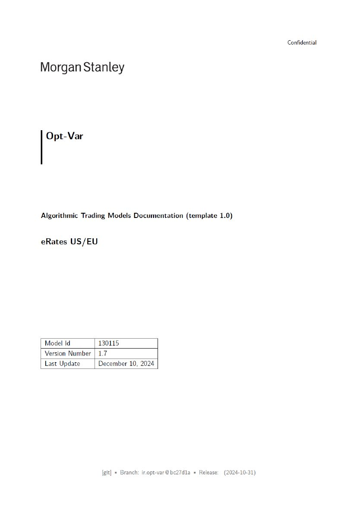
日本語訳
機密
モルガン・スタンレー
Opt-Var
アルゴリズム取引モデルドキュメンテーション（テンプレート 1.0）
eRates US/EU
モデルID 130115
バージョン番号 | 1.7
最終更新日 2024年12月10日
[git] » 分岐: ir.opt-var @be27d1a » 発行: (2024-10-31)
OCR全文翻訳ドラフト
全136ページのOCR本文を日本語訳し、ページ画像と対応させたフルレポートです。数式・表・図はページ画像を正本として確認してください。
この訳文はOCRテキストを翻訳したものです。OCR誤読が含まれる箇所では訳文も影響を受けるため、モデル仕様・数式・表の厳密確認には画像を参照してください。
| 節 | 日本語 | 原文 | PDFページ |
|---|---|---|---|
| 1 | エグゼクティブサマリー | Executive Summary | 5 |
| 1.1 | モデルの目的と想定用途 | Model Purpose and Intended Use | 5 |
| 1.2 | モデル概要 | Model Description Summary | 7 |
| 1.3 | 主な前提と制約 | Key Assumptions and Limitations | 8 |
| 1.4 | 全体的なモデル性能評価 | Overall Model Performance Assessment | 8 |
| 1.5 | 結果サマリー | Summary of Results | 8 |
| 2 | ビジネスおよびアルゴリズム説明 | Business and Algo Description | 9 |
| 2.1 | Autohedger概要 | Autohedger Overview | 9 |
| 2.2 | ポートフォリオリスク | Portfolio Risk | 10 |
| 2.3 | 入出力量 | Inputs and Outputs Volume | 10 |
| 2.4 | Opt-Varの原理 | Opt-Var Principle | 12 |
| 2.5 | Autohedger内の機能コンポーネント | Functional Components in the Autohedger | 15 |
| 2.6 | 規制・ポリシー要件 | Regulatory and Policy Requirements | 17 |
| 3 | モデル説明 | Model Description | 17 |
| 3.1 | モデル前提 | Model Assumptions | 17 |
| 3.2 | モデル仕様 | Model Specification | 18 |
| 3.3 | モデル入力とデータ | Model Inputs and Data | 25 |
| 3.4 | モデル出力 | Model Outputs | 27 |
| 3.5 | モデル較正とパラメータ推定 | Model Calibration and Parameter Estimation | 27 |
| 3.6 | 数値実装 | Numerical Implementation | 34 |
| 3.7 | 付録：技術詳細 | Appendix: Technical Details | 36 |
| 4 | モデル開発・選定プロセス | Model Development and Selection Process | 40 |
| 4.1 | モデル分割と変数選択 | Model Segmentation and Variable Selection | 40 |
| 4.2 | 代替理論・代替アプローチ | Alternative Theories and Approaches | 41 |
| 4.3 | 主要ステークホルダー・独立ソースからの貢献 | Contributions from Key Stakeholders and Independent Sources | 41 |
| 5 | モデルテスト | Model Testing | 41 |
| 5.1 | モデル診断テスト | Model Diagnostic Testing | 41 |
| 5.2 | シナリオ分析とストレステスト | Scenario Analysis and Stress Testing | 57 |
| 5.3 | 感応度分析 | Sensitivity Analysis | 67 |
| 5.4 | ベンチマーキング | Benchmarking | 86 |
| 5.5 | 結果分析とバックテスト | Outcome Analysis and Backtesting | 89 |
| 5.6 | 付録：技術詳細 | Appendix: Technical Details | 92 |
| 6 | モデルの制約・不確実性・緩和策 | Model Limitations, Uncertainties and Mitigations | 97 |
| 7 | モデルオーバーレイと上書き | Model Overlays and Overrides | 97 |
| 8 | 本番実装と統制 | Production Implementation and Controls | 97 |
| 8.1 | 本番実装 | Production Implementation | 97 |
| 8.2 | モデルプロセスと統制 | Model Process and Controls | 97 |
| 8.3 | コード変更管理とバージョン管理 | Model Code Change Control and Version Control | 99 |
| 8.4 | ソフトウェア開発ライフサイクル | Software Development Lifecycle (SDLC) | 99 |
| 9 | 継続的なモデル性能モニタリング | Model Ongoing Performance Monitoring | 103 |
| 9.1 | 指標と閾値 | Metrics and thresholds | 103 |
| 9.2 | エスカレーション | Escalation | 104 |
| 9.3 | MRMと共有されるデータ | Data shared with MRM | 104 |
| 9.4 | 日中モニタリングツール | Intraday Monitoring Tools | 106 |
| 10 | モデル変更ログ | Model Change Log | 107 |
| 11 | 参考文献 | References | 107 |
| 12 | 用語定義 | Definition of Terms | 108 |
| 13 | 付録 | Appendix | 110 |
| 13.1 | 収束テスト図 | Convergence Testing Plots | 110 |
| 13.2 | ベンチマークテスト図 | Benchmarking Tests Plots | 116 |
| 13.3 | 結果分析・バックテスト図 | Outcome Analysis and Backtesting Plots | 121 |
全文日本語訳

機密
モルガン・スタンレー
Opt-Var
アルゴリズム取引モデルドキュメンテーション（テンプレート 1.0）
eRates US/EU
モデルID 130115
バージョン番号 | 1.7
最終更新日 2024年12月10日
[git] » 分岐: ir.opt-var @be27d1a » 発行: (2024-10-31)
全文日本語訳

モルガン・スタンレー 機密
ドキュメント バージョン管理
バージョン 日付 キー変更の概要 著者
1.0 2023年12月6日 | 最初の提出。 eRates US/EU
11 2024年2月6日 | SDLCおよび継続的なモニタリングに関する | eRates US/EU
主題的制限が解決されました。
1.2 2024年3月12日 MRMの初期認証コメントが解決されました。 | eRates US/EU
13 2024年4月11日 EU向けにUK gilt未来に関する内容が関連セクションに追加されました | eRates US/EU
で追加されました。
14 2024年7月25日 OptVarのCRB拡張とUS +非対称ヘッジ可能なリスク制限。 | eRates US/EU
15 2024年8月30日 ディナミックラムダの内容が関連セクションに追加されました。 | eRates US/EU
1.6 2024年10月31日 | アシメトリックヘッジ可能なリスク制限についてのコメントを追加し、| e Rates US/EU
追加のCRBコントロールとアーキテクチャ詳細も追加されました。
17 2024年12月10日 | 米国の共分散行列に対する外れ値上限。 eRates US/EU
モデル 識別とステークホルダー要約
モデル名 Opt-Var
モデルID* 130115
アイテムセットリスト FIDALGO_AUTOHEDGER_AM, FIDALGO_AUTOHEDGER_EU
モデル レベル 中程度の重要性、低複雑度 Tier 3
法的エンティティ モルガン・スタンレー
IW Cr BTS 法人 マキシミリアン・ジェルマン, イレーヌ・ウ
モデル 所有者 タモス・クラッカー
モデル利用者 eRates取引（グローバル）
モデル 認証者 [i
“MCS モデル番号 ** 例：システム名
130115: Opt-Var 第2ページ目／136ページ
[git] = 分岐: ir.opt-var@bc27d1a = 発行: (2024年10月31日)
全文日本語訳

morgan stanley 機密
目次
5
[I-1 モデルの目的と想定用途]....5
[II-2 モデル概要]....7
[III-3 主な前提と制約]....8
IV-4 全体的なモデル性能評価....8
V-5 結果サマリー|....8
2 ビジネスおよびアルゴリズム説明]....9
cee 10
9
[VI-6 入出力量]....10
[VII-7 Autohedger内の機能コンポーネント|....215
[VIII-8 規制・ポリシー要件]．．．．．．．．．．．．．．．．．．．．．．．．．．．．．．．
.. 104
. 106
_ . 107
- 107
130115: Opt-Var ページ 3 of 136
[git] = 分岐: ir.opt-var@bc27d1a = 発行: (2024年10月31日)
全文日本語訳
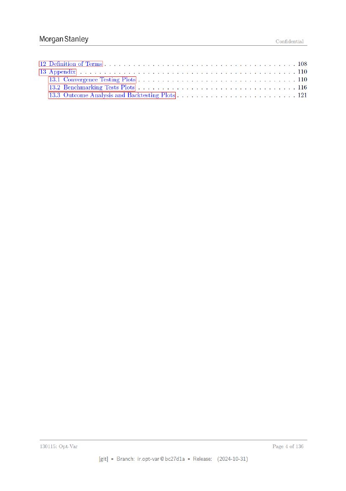
morgan stein 機密
. . 108
[13 付録] .. 110
13.1 収束テスト図]........ .. 110
{13.2
ベンチマークテスト図}... .... .. 116
[13.3 結果分析・バックテスト図 . 121
130115: Opt-Var Page 4 of 136
[git] = 分岐: ir.opt-var@bc27d1a = 発行: (2024年10月31日)
全文日本語訳

モルガン・スタンレー 機密
1 エグゼクティブサマリー
1.1. モデルの目的と想定用途
電子国債デスクは、流動性のある商品および流動性の低い商品両方を市場メーカーとして取り扱っています。
米国の債券市場では、約350種類の流動性の低い債券と12種類の流動性のある債券および先物が存在します。図[I]は、残存期間が10年未満の債券の利回り曲線を示しています。赤い点は個々の流動性の低い債券を表し、大きな青い点は流動性のある商品を示しています。注意していただきたいのは、赤い点の方が青い点よりも遥かに多いことです。黒い線は目視を助けるために利回り曲線のモデルを追加しました。
1.50
1.25
1.00
Zor
0.50
0.25
0.00
0 2 4 6 8 10
残存期間
図1：この図は、残存期間が10年未満の米国の利回り曲線を示しています。x軸は残存期間、y軸は債券の利回りです。
デスクが流動性の低い商品を購入した場合、すぐに再販売することはできません。そのため、流動性の低い商品と高い相関性を持つ流動性のある商品の組み合わせを売却することで、ランダムな価格変動に対する保護を行います。
例えばこのプロセスの一例として、利回り曲線を見直し、残存期間が4年未満の1つの流動性の低い債券（赤い点）について考えてみましょう。この流動性の低い債券の両側には、2つの流動性のある商品（青い点で示されています）があります。
130115: Opt-Var 第5ページ目/136ページ
[git] 「ブランチ：iropt-var@be27d1a = リリース： (2024年10月31日)
全文日本語訳

モルガン・スタンレー 機密
1s
14
13
12
S11
10
09
08
3.0 35 40 45 50
到期までの年数
図2：この図は、残存期間が3年から5年の利回り曲線に焦点を当てています。図の目的は、流動性の低い債券（赤）が流動性のある債券（青）の到期日間に位置することを強調することです。
今agine私たちはただ赤い債券の1単位を購入しました。見图 [3] そのリスクは、残存期間が3年と5年の流動性のある目標ヘッジに「予測」されます；この予測されたリスクは、点線枠で表される薄い青い長方形で示されています。その後、Autohedgerはこの予測されたリスクを売却し、目標ヘッジ（濃い青い長方形で表される）を得ます。
このヘッジプロセスには2つのステップがあります。最初のステップでは、与えられたヘッジ比率を使用して流動性の低いリスクを流動性のある目標ヘッジに「予測」します。第二ステップでは、分散を最適化し、目標ヘッジの取引を行います。
「以下で議論するように、私たちは必ず目標ヘッジを取引することはありません。代わりに、取引コストが安くなる可能性のある流動性のあるヘッジ商品の相関構造を利用するために、このプロセスは全体的に分散させることで最適化しようと試みます。この過程は「分散の最適化」または略して「Opt-Var」と呼ばれます；これはヘッジ商品空間でのポートフォリオリスク分散を最小限に抑えることを目指すためです。取引コストをObjective関数に組み込むことで、この分散は最適な方法で実行されます。
130115: Opt-Var 6ページ目／136ページ
[git] « 分岐：iropt-var@be27d1a = 発行版： (2024年10月31日)
```
全文日本語訳

モルガン・スタンレー 機密
<— 在庫
に 預測リスク—p> 77
図3：この図は、新規債券購入（赤）によるリスクの表現です。このリスクは、残存期間が3か5年の流動性のある商品（青い点線の箱）に投影されます。その結果、目標ヘッジ（濃紺の箱）が得られます。概念としては、流動性の低い赤色の債券は、流動性のある青色の商品を売却することでヘッジできるというものです。
「Opt-Varモデルは、Autohedgerアルゴリズムの主要なコンポーネントであり、一連の制約条件を与えられた場合に最適なヘッジ戦略を決定するために使用されます。このモデルは、電子国債ビジネス（米国およびヨーロッパ）において主に流動性のある商品による最適なヘッジ戦略を決定するための主要なヘッジモデルとして使用されています。Opt-Var最適化は1日中繰り返し呼び出され、現在のポジションに基づいて最適なヘッジ取引を規定します。モデルは、リスク調整済みのヘッジコストが最も低いように実行するための取引量ベクトルを報告します。
Autohedgerによってヘッジされる一連の取引は、RFQ（要請書）やストリーミングなどの外部経路から入るクライアントフローと、主に他の内部固定収益デスクからのヘッジ活動を含む内部クライアントストリームに対応します。
この文書は、Opt-Varモデルの構築について説明しています。これは、リスクとコストの統計的推定に基づく二次最適化問題から成るものです。
モデルはJAVA市場作成ライブラリ内に位置し、その自身はeRates技術スタックの一環であり、企業の電子レートビジネスを処理します。アルゴリズムリスクコントロールは、モルガン・スタンレーの電子取引リスク管理（ETRM）システムによって処理され、これらの制約は企業のモデルコントロールシステム（MCS）にあります。
1.2. モデル概要
この文書でカバーされているモデル - Opt-Var - は、合理的な時間枠内で実行する必要がある提案された一連の取引を出力します。これは、ポートフォリオの残存リスクとヘッジコストとの間の最適なバランスに達するために最適なヘッジ戦略を達成することを目指しています。
ポートフォリオの残存リスクは、全体的なポートフォリオ共分散で測定されます。この共分散はまず、全ポジションのリスクが1ベーシスポイント（DVO1ドル価値）またはEUでの1ベーシスポイント（PVO1現在価値）の感度ベクトルにリスク投影される最初のステップから計算されます。その後、液体商品リスクベクトルは共分散行列と掛け合わされ、全体的なポートフォリオ共分散が得られます。
ヘッジコストは、各商品単位あたりのヘッジコストを取引量で掛けることで計算されます。もしAutohedgerにアルファシグナルが使用されている場合、ヘッジ活動によるアルファキャプチャの減少もヘッジコストに含まれます。リスクとコストの間の優先順位 - つまり、ヘッジ戦略のリスク回避レベル - はハイパーパラメータAによって制御されます。二次最適化問題が提示され、解かれて最適なヘッジ戦略が得られます。
130115: Opt-Var 第7ページ目/136ページ
[git] « 分岐:iropt-var@be27d1a = 発行:(2024年10月31日)
全文日本語訳
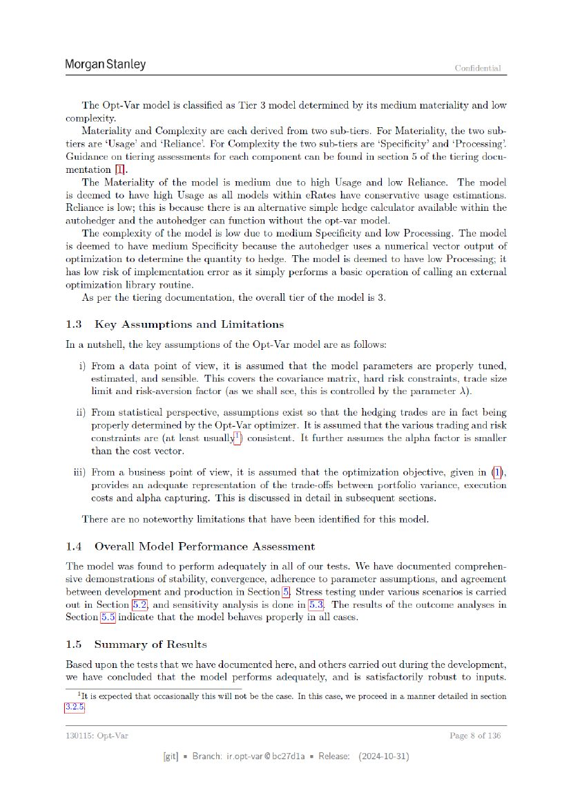
モルガン・スタンレー 機密
Opt-Var モデルは、その中程度の重要度と低さの複雑性から第 3 級モデルとして分類されています。
重要度と複雑性はそれぞれ 2 つのサブレベルから導き出されます。重要度については、「使用」および「依存」の 2 つのサブレベルがあります。複雑性については、「特定性」および「処理」の 2 つのサブレベルがあります。各コンポーネントに対する分類評価に関するガイダンスは、分類ドキュメンテーションの第 5 節 [i] に記載されています。
モデルの重要度は中程度とされ、これは高さの使用と低さの依存によるものです。モデルは eRates 内のすべてのモデルが保守的な使用推定を持っているため、高い使用と判断されます。依存性は低いとされるのは、Autohedger には代替の単純ヘッジ計算機があり、Autohedger は Opt-Var モデルなしでも機能するからです。
モデルの複雑度は低さとされ、これは中程度の特定性と低さの処理によるものです。モデルは Autohedger が最適化の数値ベクトル出力を使用してヘッジ量を決定することから中程度の特定性と判断されます。モデルは低さの処理とされ、実装エラーのリスクは低いとされるのは、基本的な操作として外部最適化ライブラリ呼び出しを行うためです。
「分類ドキュメンテーションによれば、モデル全体のレベルは 3 です。
1.3. 主な前提と制約
要するに、Opt-Var モデルの主要な前提と制約は以下の通りです：
i) データ面から見ると、モデルパラメータが適切に調整され、推定され、合理的であるという前提があります。これは共分散行列、硬質リスク制約、取引サイズ制限およびリスク回避因子（後で説明しますが、これはパラメータ A によって制御されます）をカバーしています。
ii) 機械学習面から見ると、ヘッジ取引が実際には Opt-Var オプティマイザーによって適切に決定されているという前提があります。各種の取引およびリスク制約は（少なくとも通常！）一貫していると仮定されます。さらに、アルファ因子がコストベクトルよりも小さいという前提があります。
iii) 事業面から見ると、最適化目標（I）がポートフォリオ分散、実行コスト、アルファキャッチのトレードオフを適切に表現しているとされる前提があります。これは後続のセクションで詳しく説明します。
このモデルには特に目立つ制約は見つかりませんでした。
1.4 全体的なモデル性能評価
モデルはすべてのテストにおいて適切に動作したことが確認されました。安定性、収束性、パラメータ前提への準拠性、開発と生産間の一致についての詳細な証明が第 [5] 節で記載されています。様々なシナリオでのストレステストは実施され、感応度分析も行われました。結果分析セクションの結果は、モデルがすべての場合において適切に動作していることを示しています。
1.5 結果サマリー
ここおよび開発中に実施された他のテストに基づいて、モデルが適切に動作し、入力に対して十分に堅牢であるという結論を下しました。
これは時折当てはまらない場合もあります。そのような場合、セクション B23 で詳細に説明した方法で進める予定です。
130115: Opt-Var 第8ページ目/136ページ
[git] 「ブランチ：iropt-var@be27d1a = リリース： (2024年10月31日)
全文日本語訳

モルガン・スタンレー 機密
理論的に最適化オプティマイザの安定性が証明され、数値的にも確認されています。特定のリスク軽減レベルを達成するために必要なヘッジコストにおいて優れたパフォーマンスが示されています。
2 ビジネスおよびアルゴリズム説明
この文書で詳細に説明されているOpt-Varモデルは、モルガン・スタンレーのEUとアメリカ国債市場（EGBとUST）における電子取引マーケットメイキングビジネス向けのAutohedgerアルゴリズムの主要なコンポーネントです。このAutohedgerは、これらの取引帳簿でのリスク管理を自動化したヘッジアルゴリズムです。それぞれの市場で取引される異なる国債とヘッジ商品が異なりますが、両地域では同じ原理に基づいて自動ヘッジが行われます。
在庫
4 客戶
成交 按照) 国债
预测
2在库, 3 成交
Auto-Hedger 市场
进行
的
4 抵补国债
図4：ヘッジプロセスのスキーマ図。ステップ1では、新しい在庫が債券帳簿に入ります。ステップ2では、流動性の低い在庫は目標ヘッジポジションに投影されます。最後に、ステップ3で市場での取引が行われ、最適化された目標ヘッジを達成します。
本節ではまずAutohedgerの概要について説明し、次に管理されているポートフォリオリスクについて説明します。その後、Autohedger内の3つの主要な機能コンポーネントとそれらがどのように相互作用するかについて紹介します：リスク計算機、ヘッジ計算機、そしてヘッジ実行器。
2.1 Autohedger 概要
Autohedgerは市場時間中に次の文脈で動作する自動アルゴリズムです：モルガン・スタンレーのEGBとUST電子取引デスクは、TradewebやBloombergなどの国債市場プラットフォームを通じてクライアントとの間で要請書（RFQ）プロトコールに基づいて有価証券を売買します。これらのデスクはまた、MTSやBrokerTecなどのB2B市場を通じて他のブローカーと直接取引を行います。これらの取引活動が「Done」の取引（つまり、実際に取引が実行された場合）を生むと、リスクがe-取引帳簿のポートフォリオに加わり、適切なヘッジ活動を通じてこのポートフォリオリスクを効果的に管理する必要があります。
ヘッジは、関連資産に対する反対ポジションを取ることでポートフォリオでの潜在的な損失を軽減するリスク管理戦略です。モルガン・スタンレーの国債e-取引デスクでは、EUではオンザランプ国債と国債先物を使用してヘッジを行います。特に、この文書が執筆された時点では、EU領域には7つのヘッジ商品があります：SHTZ、
130115: Opt-Var 第9ページ目/136ページ
[git] 「ブランチ:iropt-var@be27d1a = リリース: (2024年10月31日)
全文日本語訳

morgan stanley 機密
BOBL, BUND, BUXL, OAT, BTS, BTP，これらはすべて流動性のある先物である。ただし、ビジネスリクエストに基づき、近い将来UK長期ギルト先物（FLG）をヘッジ商品空間に追加する予定である。UST内には18種類のヘッジ商品があり：2Y, 3Y, 5Y, 7Y, 10Y, 20Y, 30Yのオンザラン債券、TU, FV, TY, UXY, US, ULの先物債券、SHY, IEI, IEF, TLH, TLTの債券ETFである。ヘッジ商品の数と選択はビジネス上の決定であり、ビジネスニーズに基づいて変更される可能性がある。
バック債券先物はlambdaが0でバケットリスク制限が0の別個のOpt-Varインスタンスによって処理される。これによりポートフォリオ内のバック先物ポジションが清算される。
要を recap する：Autohedgerの目的は、上記にリストされたヘッジ商品を通じて予測されるポートフォリオリスクを自動ヘッジ活動で管理することである。
2.2 ポートフォリオリスク
一日のどの時間でも，e-取引帳には顧客や他のブローカーとの取引活動から得られた債券と先物のポジションが保持されている。ポートフォリオリスクを測定するために、各セキュリティのポジションはヘッジ商品空間にマップされ、異なるリスクバケットとして扱われる。これを行うために、Autohedgerに入力される事前決定されたヘッジ比率を使用する。このマップされたリスクポジションの集合をヘッジ商品空間におけるポートフォリオリスクと呼ぶ。図は、ヘッジ比率を使用して元のポジションをヘッジ商品空間に変換する方法の例を示している。例では、特定のイタリアン債券を100 PV01分量で購入する取引がある。この取引が完了すると、取引帳上のこの債券のポジションは100 PV01増加する。その後、この債券のポジションはヘッジ商品空間にマップされる。リスクiをヘッジするための予測されたリスクはRisk; = tradeSize * HedgeRatio;で与えられる。以下の緑色のボックスにはこの債券のヘッジ比率が示されている。これらのヘッジ比率を使用して、この取引後におけるポートフォリオリスクの増加は黄色いボックスに示される。このヘッジ商品空間でのポートフォリオリスクはAutohedgerによって監視され管理される。また、各セキュリティの元のポジションとヘッジ比率はAutohedgerへの入力でありOpt-Varモデルにはないが、ヘッジ商品空間におけるポートフォリオリスクはOpt-Varモデルへの入力である。
ヘッジ比率 ポートフォリオリスク
取引 SHTZ: 0.0000 SHTZ: 0.00
セキュリティ: BOBL: 0.0000 BOBL: 0.00
170005534141 BAUNIDE D2SED BUND: -28.60
方向: 買い BUXL: 0.3339 BUXL: 33.30
OAT: 0.0000 OAT: 0.00
分量: 100 PV01 BTS: 0.0000
BTP: 0.8997
図5：事前に決定されたヘッジ比率を使用してイタリアン債券ポジションIT0005534141を先物債券の空間に投影する方法の例。
2.3 入出力量
ここでは、Opt-Varモデルの典型的な入力と出力量について説明し、米国の例を使用する。Autohedgerは通常、一日あたり総量が約間隔 [3]でlambdaとバケットリスク制限の定義を参照。
130115: Opt-Var 10ページ目 / 136ページ
[git] 「ブランチ：iropt-var@be27d1a = リリース：(2024-10-31)
全文日本語訳

モルガン・スタンレー 機密
各商品について、$50Mと$900Mの名目金額で取引されています。なお、長期限渡し商品は比較的頻繁に使用されていません。
2Y 389 + 78
3Y 861 + 127
5Y 398 + 44
TY 197 + 44
10Y | 398 + 44
20Y | 32411
B30Y | 88 + 23
TU | 286 + 116
FV 388 + 68
TY = | 503 + 86
US 55 + 14
UXY | 57+ 10
UL 47413
表1：2023年5月7日から2023年6月7日の間の実行量の日平均（M$の名目金額）。学生の信頼区間を提供しています。
Figure [6]では、2023年5月22日のUSTの入力と出力量の日中のプロファイルが示されています。以下にいくつかの特徴を挙げます。実行量は入力量よりも小さいです。活動は正午近くまで増加し、その後一時的に落ち着き、終了時間に再び活発になります。最後に、一般的な1分あたりの入力または出力量は名目金額で約$10Mであり、一部では$100Mを超えるピークがあります。
pa
Figure 6: 2023年5月22日のUSTの入力と出力量（分単位）。
2023年5月7日から2023年6月7日の間の日平均量はFigure [7]で示され、その比率はFigure [8]で表示されています。ヘッジ量は入力量の約30-40%を占めています。
130115: Opt-Var Page 11 of 136
[git] 「ブランチ：iropt-var@be27d1a = リリース：(2024-10-31)
全文日本語訳

モルガン・スタンレー 機密
100
図7：2023年5月7日から6月7日までのUSTの入出力量
図8：2023年5月7日から6月7日までのOpt-Var USの入出力量比
2.4 Opt-Var の原理
Opt-Varモデルの原理を、商品AとBという2つの商品だけを使用した玩具的な例で説明します。これらの収益増分に関連する共分散行列は
100.1 92.1 )
U = (2 1 110.5
0.084‘): であり、二次コスト行列M = ( 200e-8
収益ベクトルC = (v0 0 0. .): そしてポートフォリオの初期在庫qo =
我们也选择了一个初始参数\。二维的优化问题是给出的：
min A(go + uo)" (qo + wo) + CT luo] + ug Muo。
第一项对应于使用订单uо对冲后的组合方差，而其他项对应于对冲成本。风险回避参数\背后的直觉是
130115: Opt-Var 第12页/共136页
[git] 「ブランチ：iropt-var@be27d1a = リリース： (2024年10月31日)
全文日本語訳

モルガン・スタンレー 機密
この項は、変数 \( A \) の値を増やすと、目的関数における分散リスクの重みが増加し、\( A \) の小さな値に対応する解よりもヘッジ活動が増加することを示しています。実際には、\( X \) の値を倍にすると（他の条件を固定した場合）、取引コストが半分になるような結果が出ます。この分散リスクの減少に対する代償は、実行される量が大きくなり、コストも高くなることです。これらの挙動は図 [9] と [10] で示されています。各点は \( \lambda \) の値を近くに表示しています。図からわかるように、\( \lambda \) の値が大きいほど分散が小さくなり、ヘッジ比も高まりますが、これは実行コストの増加につながります。
Seeoer
i sor
A se00
‘Soot
Boe ooo
eeo8
図 9: ヘッジ比と分散のパレート前沿。各点は近くに表示されている \( \lambda \) の値に対応しています。
pend
ooo
e007
e007
seo
eet
ero
esoe
図 10: ヘッジコストと分散のパレート前沿。各点は近くに表示されている \( \lambda \) の値に対応しています。
実際には、最初のヘッジが実行された後、リスク計算システムはポートフォリオリスクを更新します。これにより、Opt-Var問題の再最適化が発生し、新しい親注文が生成されます。したがって、新規リスクが入らない場合でも、ポートフォリオは分散が減少する軌跡を追う可能性があります。最初のヘッジ注文後、ポートフォリオは変更されることがあります。シンプルな玩具モデルでは、図 [11] でこの軌跡が示されています。モデルは両方の商品を売却しています。
130115: Opt-Var 第13ページ／136ページ
[git] « 分岐: iropt-var@be27d1a = 発行版: (2024年10月31日)
全文日本語訳

モルガン・スタンレー 機密
最初のステップで関連製品を販売し、次に製品Aを継続して販売し、均衡点（大体ステップ5付近）まで到達するまで続きます。その後、在庫は安定するとされます。
Lambda = 5e-08
50000 e 製品A
Me 製品B
40000
30000
2 20000 i ae eae eo
10000
~20000 Se ce ee Ser ee ear er eee
a 2 a é a 10 2
在庫
Figure 11: ポートフォリオの軌跡（玩具モデル）
これらの軌跡は、最初の債券の位置が第一座標で、他の債券の位置が第二座標である二次元空間でも表すことができます。赤色で示されている領域は収束するシステムであり、これは明示的に計算できます。分散は黒い等高線で表示されています。軌跡に沿って分散が減少していることが観察されます。
_ _ntohedgeseluton wh 2=08.A~ S608 infnts = False
Figure 12: 緑色の軸から（50000, 0）を、紫色の軸から（-45000, 75000）を開始する2つの例示的な軌跡。相関値は p = 0.8, a = 0 です。
130115: Opt-Var ページ 14 of 136
[git] « 分岐: iropt-var@be27d1a = 発行版: (2024年10月31日)
全文日本語訳

モルガン・スタンレー 機密
新規リスクがポートフォリオに現れた場合、分散度が増加し、Opt-Varの反復計算は徐々にその分散度を減少させ、もう何もヘッジが送られないまで均衡状態に達するまで進行します。これは図 [13] でスキマティカルに示されています。
```text
ポートフォリオ分散
時間
図 13: 時間経過とともにポートフォリオ分散の動態。
```
2.5 Autohedger 内の機能コンポーネント
Autohedgerには三つの主要な機能コンポーネントがあります。図 [14] の下記ダイアグラムは各コンポーネントの機能とそれらがどのように相互作用するかを要約しています。最初のコンポーネントはリスク計算機で、各セキュリティのポジションをヘッジインストゥルメント空間（PVO1）に転送します。転送されたポートフォリオリスクはヘッジ計算機コンポーネントの入力となります。ヘッジ計算機はこの文書で説明されているOpt-Varモデルを使用してヘッジ取引を計算し、その結果得られたヘッジ取引は外部取引所を通じて実行される最後のコンポーネント - ヘッジエグゼキューターに送られます。これらのヘッジ取引が実行されると、トレードブックのポジションが更新され、リスク計算、ヘッジ計算、そしてヘッジ取引の実行という新たなサイクルが開始されます。
2.5.1 リスク計算機
リ스크計算機は一日にわたるトレードブックのポジションを追跡し、それらをポートフォリオリスクに変換します。ブックポジションを追跡するためには、リスク計算機が二つのフィードを使用します：速いフィードと遅いフィード。速いフィードはアルゴアプリから来ます。これはEQuoteのB2C、内部化エンジンRatesX、デスクインタラクションマネージャ（DIM）、Autohedger自体などからトレード確認を生成します。遅いフィードはEPAKで来ます - これは信頼性が高く迅速な配信者であり、公式ポジションマネージャーBig Macからのポジションを監視しています。速いフィードと遅いフィードのポジションは閾値を超えるほど乖離しない限り同期され、同期されたポジションはAutohedgerがポートフォリオリスクを計算するために使用されます。もし速いフィードと遅いフィードが閾値を超えて乖離した場合、Autohedgerは違反します。ブックランナーとストラテジストは原因を調査し、手動でリスクを同期して違反を解除します。ポートフォリオリスクを計算するためには最初のステップとして、ポジションが実質的な単位からリスク単位に変換されます。これを行うために、リスク計算機はモルガン・スタンレーの内部プライシングエンジンKPricerから債券と先物のdpdyを使用します。その後、各セキュリティのリスクポジションはヘッジインストゥルメント空間にマッピングされます。
130115: Opt-Var 15ページ目 / 136ページ
[git] 「ブランチ：iropt-var@be27d1a = リリース： (2024年10月31日)
全文日本語訳

モルガン・スタンレー 機密
リスク計算機
証券と将来権利のポジションをヘッジ商品空間にマップし、ヘッジ比率を使用して監視します。 t
ポートフォリオリスク !
ヘッジ計算機（Opt-Varモデル） !
ポートフォリオヘッジを行い、以下の条件を満たすためのヘッジ取引を提案します：
+ 証券帳簿上のポートフォリオリスクがリスク限度以下です。 H
+ ポートフォリオリスクは最適な方法で異なるリスクバケットに割り当てられます。 '
ヘッジ取引 '
ヘッジ実行者 '
+ 証券帳簿上のヘッジ取引を外部取引所に送信して実行します。
Figure 14: Autohedgerの3つの主要な機能コンポーネント
ヘッジ比率、セクションで説明したように。最終的に、各ポジションがヘッジ商品空間におけるリスクを想定されるポートフォリオリスクとして集計され、ヘッジ計算機コンポーネントに渡されます。
2.5.2 ヘッジ計算機
ヘッジ計算機は、ヘッジ決定を行う場所です。ヘッジ計算機は、リスク計算機から集計されたポートフォリオリスクを入力として受け取り、提案されるヘッジ取引のリストを出力し、これがヘッジ実行者コンポーネントに渡されます。
‘ヘッジ計算機は、次の2つの条件が常に満たされることを確認するためにヘッジ取引を提案します：
1. 証券帳簿上のポートフォリオリスクは我々が受け入れるリスクよりも小さいです。これはリスク限度パラメータ、ヘッジ可能なリスク限度とバケットリスク限度によって制御されます。これらの詳細はセクションで説明します。
2. ポートフォリオリスクは最適な方法で異なるバケットに割り当てられます。特に、これはポートフォリオ分散、ヘッジ実行コストとアルファキャッチングのトレードオフをバランスさせるための取引が提案されることを意味します。
私たちは以下のセクションで説明するOpt-Varモデルを使用してヘッジ計算機として機能します。Opt-Varモデルは制約付きの二次最適化モデルです。この文書全体を通じて、Opt-Varモデルがこれらの2つの条件を満たすことを示し、したがってAutohedgerのコンポーネントとして使用するのに適していることを説明します。
2.5.3 ヘッジ実行者
Autohedgerの最終的な主要な機能コンポーネントはヘッジ実行者で、ヘッジ取引を外部取引所に送信して実行します。ヘッジ取引が取引所で実行されると、証券帳簿上のポジションが更新され、これによりAutohedgerの新しいサイクルが始まります。
130115: Opt-Var 16ページ目／136ページ
[git] 「ブランチ：iropt-var@be27d1a = リリース： (2024年10月31日)
全文日本語訳
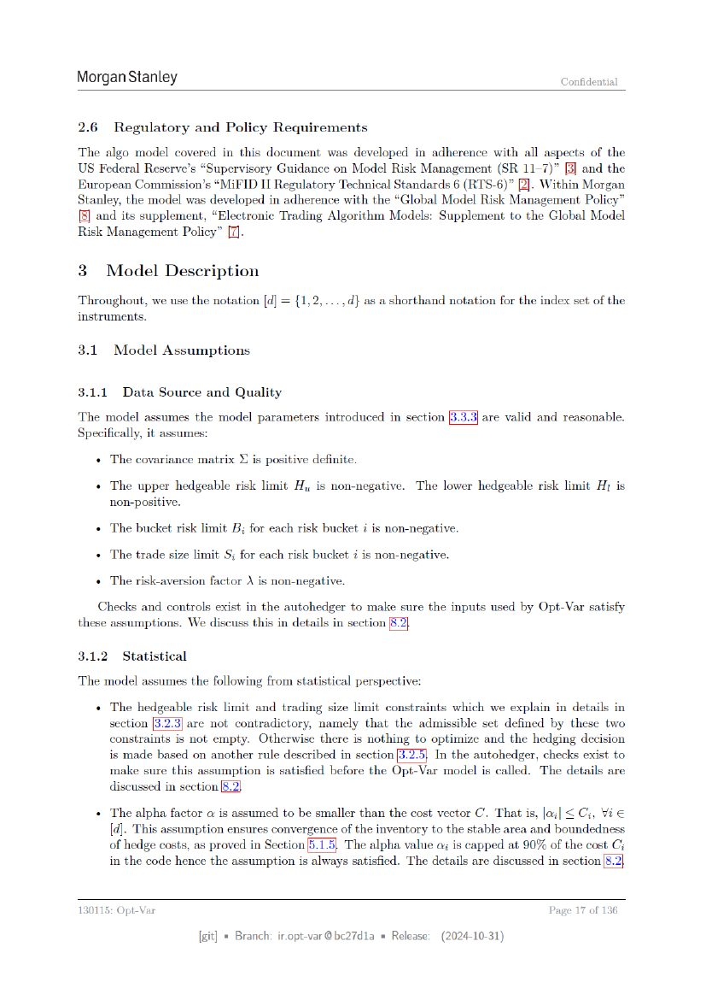
モルガン・スタンレー 機密
2.6 規制および政策要件
この文書でカバーされているアルゴリズムモデルは、米連邦準備制度理事会の「モデルリスク管理に関する監督ガイドライン（SR 11-7）」[J]と欧州委員会の「MiFID IT規制技術基準6（RTS-6）」[J]のすべての側面に従って開発されました。モルガン・スタンレー内では、このモデルは「グローバルモデルリスク管理ポリシー」[5]とその補足文書、「電子取引アルゴリズムモデル：グローバルモデルリスク管理ポリシーの補足」[7]に従って開発されました。
3 モデル概要
Throughout, we use the notation [d] = {1,2,...,d} as a shorthand notation for the index set of the instruments.
全体を通じて、機器のインデックスセットを表す短縮表記として[d] = {1,2,...,d}を使用します。
3.1 モデル前提
3.1.1 データソースと品質
モデルは、第[ ]節で導入されたモデルパラメータが有効かつ合理的であると仮定しています。特に、以下の仮定があります：
- 共分散行列 © は正定値です。
- 上限ヘッジ可能リスク制限 Hy は非負であり、下限ヘッジ可能リスク制限 Hy は非正です。
- 各リスクバケット i のバケットリスク制限 B; は非負です。
- 各リスクバケット i の取引サイズ制限 S$; は非負です。
- リスク回避因子 A は非負です。
Autohedger 内に、Opt-Var がこれらの仮定を満たすように使用される入力に対するチェックとコントロールが存在します。詳細については第5節で説明します。
3.1.2 機械学習
モデルは以下の観点から機械学習の前提として次のことを仮定しています：
- ヘッジ可能リスク制限および取引サイズ制限の制約（詳細については第[ ]節を参照）が矛盾していないこと、つまりこれらの2つの制約によって定義される許容集合が空でないことが確認されています。それ以外の場合、最適化は別のルールに基づいて行われます（第3.2.5節参照）。Autohedger 内に、Opt-Var モデルを呼び出す前にこの前提が満たされていることを確認するチェックが存在します。詳細については第[ ]節で説明します。
- α因子 a はコストベクトル C より小さいと仮定されます。つまり、[a_i] < C_i, V i ∈ [d]。この前提は、在庫が安定域に収束し、ヘッジコストが有界であることを保証します（第5.1.5節で証明）。コードでは α 値 a_j はコスト Cy の90%までに制限されるため、常にこの前提が満たされます。詳細については第[ ]節で説明します。
130115: Opt-Var ページ17の136
[git] 分岐:iropt-var@be27d1a = 発行:(2024-10-31)
全文日本語訳
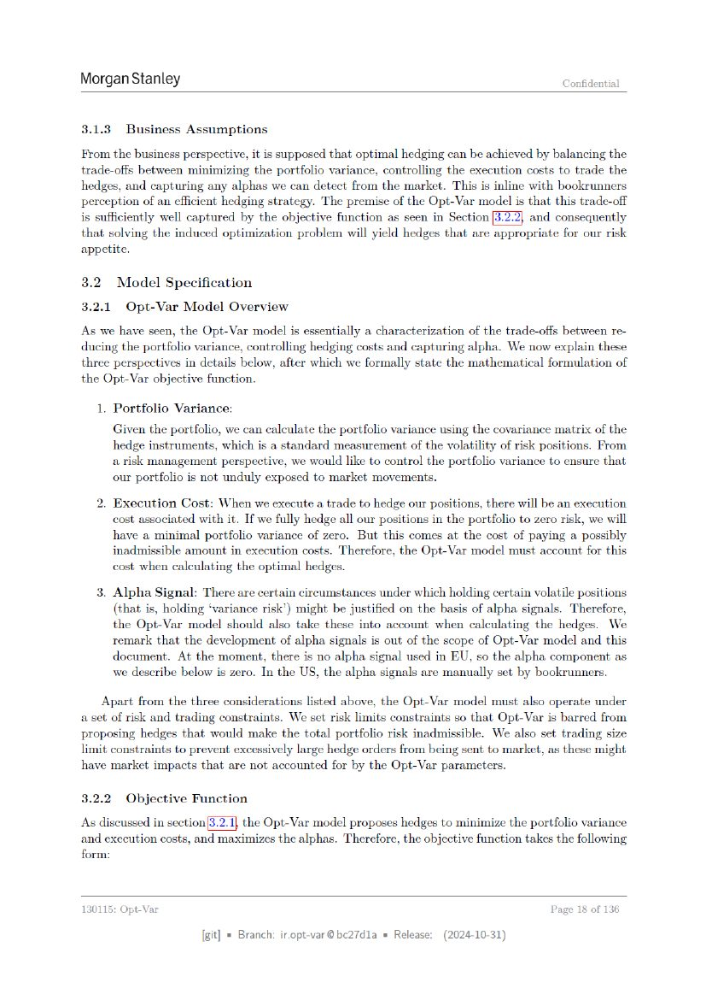
モルガン・スタンレー 機密
3.1.3. 事業前提
ビジネスの観点から、最適なヘッジがポートフォリオ分散とヘッジコストを制御し、市場からのアルファを捕捉することで達成できるという前提があります。これはブックランナーが効率的なヘッジ戦略について持つ認識に合致しています。Opt-Varモデルの前提は、このトレードオフが目的関数によって十分に捉えられていることであり、その結果、導入された最適化問題を解くことで、リスクアビリティに適したヘッジが得られるということです。
3.2 モデル仕様
3.2.1 Opt-Varモデル概要
「これまで見てきたように、Opt-Varモデルはポートフォリオ分散の減少、ヘッジコストの制御、アルファの捕捉という三つの視点におけるトレードオフを特徴付けるものです。以下ではこれらの三つの視点について詳細に説明し、その後、Opt-Var目的関数の数学的な表現を正式に述べます。
1. ポートフォリオ分散：
ポートフォリオが与えられた場合、ヘッジ商品の共分散行列を使用してポートフォリオ分散を計算できます。これはリスクポジションの変動性の標準的な測定方法です。リスク管理の観点から、ポートフォリオ分散を制御し、ポートフォリオが市場の動きに過度に曝露されないことを確保したいと考えます。
2. 実行コスト：ポジションをヘッジするために取引を行う場合、実行コストが発生します。ポートフォリオ全体をゼロリスクまで完全にヘッジした場合、ポートフォリオ分散は最小の0になりますが、これには実行コストとして不適切な量を支払う必要があります。したがって、Opt-Varモデルではこのコストを最適なヘッジの計算に考慮に入れる必要があります。
3. アルファシグナル：特定の変動性のあるポジション（つまり、「分散リスク」を持つポジション）を保有することがアルファシグナルに基づいて正当化される場合があります。したがって、Opt-Varモデルではこれらのヘッジも考慮に入れる必要があります。なお、アルファシグナルの開発はOpt-Varモデルおよび本ドキュメントの範囲外であり、現在、EUではアルファ成分はゼロです。米国では、ブックランナーによって手動で設定されています。
上記の三つの考慮事項以外にも、Opt-Varモデルは一連のリスクと取引制約を遵守する必要があります。リスク限界制約を設定し、Opt-Varが提案するヘッジが全体的なポートフォリオリスクを不適切なものにすることから除外されます。また、市場への過度に大きなヘッジ注文を送信することも防ぐために取引サイズ制限制約を設定します。これらの注文はOpt-Varパラメータによって考慮されていない市場の影響がある可能性があります。
3.2.2 目的関数
「第32.2節で述べたように、Opt-Varモデルはポートフォリオ分散と実行コストを最小化し、アルファを最大化するヘッジを提案します。したがって、目的関数は以下の形になります。
130115: Opt-Var 18ページ目／136ページ
[git] « 分岐：iropt-var@be27d1a = 発行版： (2024年10月31日)
```
全文日本語訳

モルガン・スタンレー 機密
Fy: we Ros (q+u) (AD 4+ bcPy)(qt+u) +C" |u| t+ulMu—al(q+u) (1)
最初の項（無限遠景コストP,を除く）を「分散コスト」成分Varg = (q + u)'5(q + u)と呼び、2番目と3番目の項の合計を「取引コスト」Costy = C'|u| + u'Muと呼ぶ
最後の項は「アルファ」成分Aq = —a!
（q +u)) P| です。変数は以下の通りです：
° q = (u.@,-.-,4a)' € R? は初期ポートフォリオPVO1、ドル/基点またはユーロ/基点（つまり、USの場合ドル/基点、EUの場合ユーロ/基点）で測定され、dはヘッジ
インストゥルメントの数です；
° w= (ui, u,...,ug)! € R¢ は取引量、PVO1（つまり、ドル/基点またはユーロ/基点）で測定され、これはOpt-Varモデルの決定変数です；
そしてパラメータは以下の通りです：
+ \ € R,, リスク回避因子、リスク取りとリスク削減のトレードオフを決定します。ドル/またはユーロで測定されます。\ の値を選択するビジネス上の決定は専門家の判断に基づいており、詳細はセクションBで説明します。
+ Se S4, は流動性のあるヘッジインストゥルメントの正定値共分散行列、基点で測定されます；
« C= (ct,c9,...,¢4)' € R¢ は線形コスト因子、基点で測定されます；
« M €S¢ は対角二次コスト行列、基点/PV01で測定されます；
* a=(a1,a9,...,04) € R¢ はアルファ因子、基点で測定されます；
+ P\ € S14, は無限遠景Opt-Var問題の解を特徴付ける行列リカチ方程式の正定値行列解、セクションで説明します。
+ doo は二進パラメータ、無限遠景コストが目的関数に含まれるかどうかによって1または0になります。
3.2.3 制約
Opt-Varモデルには四つの制約セットがあります。最初の三つは常に適用されますが、最後のは有効なポジション増加設定がFalseの場合のみ適用されます。以下で詳細に説明する制約値の決定はブックランナーズのリスク好戦性に基づくビジネス上の決定です。
ヘッジ可能なリスク限度制約
ad
As YO (ait us) < Hu, (2)
i=l
*分散コスト、無限遠景コスト（q+ u)"da.P(q+ u）、およびアルファ部分a” （q + u）は、ヘッジ後の次のポジションがq + uであると仮定します。ただし、流動性のある商品から流動性のある商品へのヘッジ比率行列Pが与えられた場合、次のポジションはq+ Puとなります。モデルでは、流動性のある商品が自身に一致していると仮定し、つまりP = Igです。これが成り立たない場合は、流動性のあるヘッジ比率を目的関数に含める必要があります。
2024年10月31日リリース: iropt-var@be27d1a
[git] 分岐: iropt-var@be27d1a = 释放版本: (2024-10-31)
130115: Opt-Var 第19页共136页
全文日本語訳

morgan steinley 機密
以下に、最適化後のポートフォリオPVO1のヘッジ可能なリスク制限H内でのネットポートフォリオのリスクが明示的に許容されるようにする制約を表します。この制約は、最適化後、ネットポートフォリオのリスクが許容範囲内であることを明確に規定するために適用されます。ただし、高値の\は提案された取引を引き起こし、ネットポートフォリオのリスクをゼロに近づけるためには、この制約がないと、最適化後のネットポートフォリオのリスクが特定の範囲内にあるとは保証されません。
バケット リスク制限制約
-BiS<qtus Bi, Vie (d| (3)
ここでB; € Ryは、PVO1内の商品iのバケットリスク制限であり、最適化後、バケットiのリスクがこの制約内でなければならないことを示します。リスク管理から見ると、どのバケットにも大きなポジションを持つことは推奨されません。式(3)の制約はネットポートフォリオのリスクが特定の範囲内にあることを確保しますが、各バケットのリスクが制限されているとは保証されません。この制約がないと、最適化者は全体的なリスクが(2)を満たす限り、任意に大きな長期ポジションを持つバケットと対応するほど大きい短期ポジションを持つ別のバケットを提案することが可能になります。バケットリスク制限制約はこれの可能性を排除します。
取引サイズ制限制約
—Si<u<S;, Vie [d] (4)
ここでS; € R,は、提案されたヘッジ取引が持つ最大取引サイズです。この制約は市場で過度に大きな取引を実行することを防ぐために設定されます。これにより、シグナルによって捕捉されない市場影響が発生する可能性があります。S; を上部取引限界、—S; を下部取引限界と呼びます。
また、短期売却制約の対象となる製品がある場合（債券ETFの場合）、Opt-Varモデルはその製品に対するネガティブなポジションを提案しないべきです（固定収益レートデスク間で合算）。ロケーションサービスは最小取引サイズ—S; を提供します。これは取引サイズ制限を以下のように変更します
max(—S;,—Si) <u < Si, Vi € [d]
増加ポジション許容制約
この制約は、allow increase position パラメータが false に設定されている場合のみ適用されます。この場合、Opt-Varモデルは任意のバケットでのポジションを増やす取引や符号を反転させる取引を提案しないべきです；例えば、q; > 0の場合にはu; を[-qi, 0]に制限することを意味します。この場合、制約は以下のように表されます：
O<u<—q Yield) そのような条件で gi <0
—q<u<0 Vield) そのような条件で g >0. (5)
3.2.4 Opt-Var モデル
オブジェクト関数(式と制約(式を組み合わせて、Opt-Var最適化問題は以下のように与えられます：
最小化 (q+ u) (N+ bx0Py(q+u)+C"\ul+ulMu—al(q+u)
130115: Opt-Var 20ページ目/136
[git] 「ブランチ： iropt-var@be27d1a = リリース： (2024年10月31日)
全文日本語訳

morgan stein 機密
subject to Hy < S°(qi t+ ui) < Hu, (6a)
i=l
-Bisatu<sB, 流動性のある商品 (6b)
—Sisu< Si, 流動性の低い商品 (6c)
ポジション増加が許可されている場合、制約を単純化し再構成します。まず、ポジション増加が許可されているシナリオを考えます。この状況では、いくつかの制約が矛盾している場合があります。そのような状況では、取引量制約（6c）が優先されます。必要に応じて、ポジション増加制約も考慮されます。つまり、複数の制約が同時に満たされない場合でも、Opt-Var解は少なくとも（6c）と（5）を満たす必要があります。その後、ポジション増加が許可されていないシナリオを考えます。
「取引量とバケットリスク制約の不整合」：指定されたサイズ制限がない場合、バケットリスクが許容範囲内になるように取引を提案して、できるだけ多くのバケットリスクを転移させたい。詳細はこのセクションの付録に記載されています（バケットリスク制約を修正することで、アルゴリズムに適用できます）。このバケットリスク制約と取引量制約を組み合わせて表現すると、
max(min(—B;— qi, $;),—Si) < ui < min(max(B; — qi, —5;),Si). (7)
ポジション増加が許可されていない場合、（5）を（7）に組み込むことで、再び付録セクションを参照してください。
max(—qi,—S:) < ui < min(max(B; — qi,—S;),0) Vi [d] かつ gq >0 (8a)
max(min(—B; — q;,5;),0) <u; < min(—g;,S,;) Vie [d) かつ g, <0. (8b)
「取引量とヘッジ可能なリスク制約の不整合」：さらに、上記の緩和後でも複合的な取引量制約が総リスク制約と整合性を失う場合があります。SE, SY をそれぞれ最終的な下限および上限の取引量制約として使用します（ポジション増加が許可されている場合、（7）から読み取ることができます；ポジション増加が許可されていない場合、g の符号によって異なる）。例えば、
ys (a + a) > Au,
i=1
「これは実質的にビジネス上の決定です。数学的にはもちろん、制約を調整する方法は無数にあります。
2021年10月31日：Opt-Var 第21ページ目 / 136ページ
[git] 分岐: iropt-var@be27d1a = リリース: (2024-10-31)
全文日本語訳

morgan stanley 機密
つまり、各ポジションをボックス制約によって許された最大量で減少させても、（符号付き）リスクが望ましい最大レベル \(H_y\) に達しない場合があります。この場合、最適化ルーチンを呼び出さず、代わりにこれらの最大取引を実行します：`allowPositionIncrease` を False に設定し、\(q_i > 0\) のような各 \(i \in [d]\) に対して \(u_i = SP\)。また、\(D_4 (q_i + S_y) < H_h\) の場合も同様で、位置の増加を許可せず、\(q_i < 0\) のような各 \(i \in [d]\) に対して \(u_i = S_y\)。
3.2.6 解の存在と一意性。
標準的な論理に従って示すことができますが、Opt-Var最適化問題は上記のように解を持つことが証明され、その解は一意的です。これは付録 3.7 で形式的に証明されています。
3.2.7 時限無制限のコスト
vanilla Opt-Varモデル（すなわち、\(\beta_0 = 0\) の場合）は、ポートフォリオ \(q\) の更新を通じて生成するポートフォリオの軌跡において、最適化されたステップは最初の一歩のみです。この Opt-Varのバージョン（\(\beta_0 = 1\)）では、全体的なパスを最適化問題に考慮することでコストを節約できるという考えに基づいています。付録で示すところによると、一歩の Opt-Var問題を目的関数が与えられた形で解くことは、全ヘッジ軌跡を最適化する際に生じる時限無制限のコントロール問題に近似して等価です。二次コスト行列 \(M\) が対角行列であるという単純化仮定（\(M = m_q\)）のもとで、無期限のコスト関数（および従って行列 \(P\)）の閉形式表現を導出します。この追加コストは最初の一歩の効果だけでなく、将来的な分散とコストも考慮し、各ヘッジの計画をよりよく立てることを目指します。
3.2.8 CRB最適化への拡張
Opt-VarモデルをCRB最適化に拡張した場合、外部取引所でのヘッジではなく、他のデスクとの内部ヘッジが提案されます。このアイデアは、AIMとクライアントの分散を最小化し、マッチング量を最大化しながらAIMとクライアントリスク制約を遵守することです。
市場で取引可能な内部クライアントCRB注文から始め、クライアントと商品ごとにこれらをグループ化します。\(c_i^j\) を定義して、クライアント \(i\) が商品 \(j\) に保有している市場で取引可能な数量です。N 個のクライアントと d 個の資産を考えます。
目的関数は以下の通りです：
\[
M(s^+) = \sum_{t=1}^{n} z (s_t + 1) + 20 \sum_{i=1}^{N} \sum_{j=1}^{d} (e_i - u_i) E(c_i^j - w_i) - O D e_d
\]
最初の項は最適化後のAIM分散、次の項は最適化後のクライアント分散の合計であり、最後の項は取引量の反対数です。つまり、総取引量を最大化するためにその反対数を最小化します。変数 \(u_i\) はクライアント \(i \in [N]\) から資産 \(j \in [d]\) への取引数量に対応しています。したがって、取引後、ATMポジションは \(q^+ D_j u_i\) であり、クライアント \(i\) のポジションは \(c_i - u_i\)。
クライアントの制約
130115: Opt-Var 第22ページ／136ページ
[git] 分岐：iropt-var@be27d1a = 発行版： (2024年10月31日)
全文日本語訳

morgan stanley 機密
+ 客戶バケットリスクの減少:
0 < d - u < ditd>o
d<d-ul <0ife <0.
これは次のように書くことができます
min(c},0)
< c} — u} < max(c},0), Vj €1,---,d, Wie 1,--- ,N. (9)
+ 客戶ネットリスクの減少:
d d d
0 < Nd - w) < Yedit Vdso
j=l j=l j=l
d d d
Ls Vie -u) すなわち Ve <o.
j=l j=l jal
これは次のように書くことができます
d d d
min |S c},0] < S°(c} —u}) <max | $>cj,0]}, Viel,,N. (10)
J=1 j=l j=l
各内部クライアント i が eRates チームとの合意に基づいて制約 (1!) を使用するかどうかは任意です。
AIM の制約
AIMには2つの独立した制約セットがあります。セット A:
« AIMバケットリスク限度：
N
min(q,—B?)
< g/ + Du} < max(q/, BY) Vj e1,-++ ,d.
i=l
AIMが既にバケットリスク限度制約を確認している場合、新しいポジションもそれを確認する必要があります。それ以外の場合、それはバケットリスク限度に近い必要があります。
+ AIMヘッジ可能なリスク限度：
d d N d
min (0jel q/,Hi) <Dj=l (a + i=1Dom) < max (0j=l a, Hu).
AIMが既にヘッジ可能なリスク限度制約を確認している場合(2)、新しいポジションもそれを確認する必要があります。それ以外の場合、それはヘッジ可能なリスク限度に近い必要があります。
« 稳定領域制約：
N
min(2\Dq—a,—-C) < 24D (: +e «) —a< max(2\Nq—a,C).
i=l
AIMが既に安定領域内にある場合(18)、新しいポジションもその内側にあります。それ以外の場合、それは安定領域に近い必要があります。ここで \ はAIMのリスク回避パラメータであり、AIM CRBのリスク回避パラメータとは異なる可能性があります。
2024年10月31日: Opt-Var 第23頁／136頁
[git] 「分岐：iropt-var@be27d1a = 発行版： (2024-10-31)
全文日本語訳

モルガン・スタンレー 機密
制約集合 B は、AIM に対して適用されるクライアントの制約から構成されています：
+ AIM バケットリスクを減少させる：
N
min(q’,0) < q? + ΣSou} < max(q’,0) Vj E1,--- ,d.
i=l
+ AIM 経過リスクを減少させる：
d d N d
min (0,0) < y@+h™) <max (P90).
=
デスクとストラテジーズは、セット A の制約またはセット B の制約を使用する選択肢があります。
有効な制約集合は常に非空であり、ゼロがすべての制約を満たすためです。特に、制約は互いに矛盾しないものであることが確認されます。存在と一意性については、以前と同じ理由から成立します。
CRB スwingエンジン CRB スwingエンジンは内部クライアント CRB 注文を集積し、モデルパラメータと入力データを読み取ります。また、同じ製品に対するクライアントの自発的買い注文と売り注文をネッティングし、市場に販売可能な CRB 注文を確認します。ストラテジーズ制御パラメータで設定された頻度で、CRB スwingエンジンは CRB オプティマイザーを呼び出し、各市場に販売可能な注文を満たす最適な数量を決定します。スwingエンジンはこれらの CRB 注文を満たし、内部クライアントアカウントと eRates アカウント間のリスクをスwing取引メカニズムで記録します。また、速やかな注文を eRates ブックに送信します。このプロセスは Autohedger アルゴリズムの一部ではありませんし、現在では直接的に相互作用していません。ポジション q はフィルターから読み取られます。CRB オプティマイザーは固定頻度で呼び出されます。これは CRB スwingエンジンが選択したストラテジーズのパラメータです。
関連する制御：
+ 内部クライアント CRB 注文。市場または限価タイプである必要があります。TimeInForce は Day でなければなりません。アカウントは有効かつ設定されている必要があります。スwingエンジンが有効である必要があります。製品はサポートされていなければなりません。製品 dpdy は有効でなければなりません。これらの条件が満たされない場合、CRB 注文は拒否またはキャンセルされます。
+ フィル。フィル価格は NaN でない必要があります。dpdy は有効でなければなりません。
+ 入力。パラメータの制御についてはセクション参照してください。ポジションリスク入力に関して、AIM が適格でない場合、位置はゼロとし、AIM のためのセット B の制約を使用します。これにより CRB スwingエンジンは AIM リスクを変更しない（バケットリスク制約のおかげ）ことが確認され、クライアント間で直接スwingリスクを移動させることができます。
+ ポートフォリオ位置が最適化開始以来の閾値を超えた場合、CRB スwingエンジンは CRB オプティマイザーの出力を無視します。
+ Autohedger が積極的にヘッジしていない場合のみ、AIM リスクを変更できる CRB オプティマイザーがあります。スwingエンジンはフィルター内の RiskHedging テーブルを確認し、Autohedger がヘッジしている場合（ヘッジ値がゼロ以外の場合）、AIM リスクをゼロのポートフォリオに置き換えます。その場合、CRB は AIM リスクを変更しない（バケットリスク制約のおかげ）ことが確認されますが、クライアント間でリスクは移動できます。Autohedger が CRB 最適化中にヘッジを開始した場合、任意の注文とスwingはブロックされます。
130115: Opt-Var 第24ページ／136ページ
[git] « 分岐：iropt-var@be27d1a = 発行版： (2024年10月31日)
全文日本語訳

モルガン・スタンレー 機密
+ 入出力量制御：AIMにリスクが転移された場合、注文、商品、ポートフォリオレベルでの入出力量制御を実装します。
3.3. モデルの入力とデータ
3.3.1 データソース：
以下の3つの主要なデータソースがあります。
+ Autohedgerフィード：Autohedger自体がブックでリアルタイムポートフォリオリスクを生成し、これがOpt-Varモデルの入力となります。
+ Market Bus：Market Busは内部市場データサービスです。AutohedgerはMarket Busからオフラインで較正された共分散行列を購読してOpt-Varモデルにフィードします。また、Market Busからヘッジ比率を得て、元の債券と先物ポジションをヘッジインストゥルメント空間に変換します。
+ EOS TDAテーブル：EOSはトレーダーがさまざまなアプリケーションで使用するパラメータを監視・制御する内部GUIです。すべてのモデルパラメータはEOSのTDAテーブルから来ますが、共分散行列は含まれていません。以下のセクションではモデルパラメータの詳細を示します。
3.3.2. 観測入力：
« 初期ポジション qo：ヘッジインストゥルメント空間での未ヘッジリスク（米国では$/bps、EUでは€/bps）。
+ アルファ a € 4：アルファシグナル（bps単位）。現在、EUではアルファが使用されていないため、aは0です。米国ではブックランナーズによって手動で入力されます。
+ 内部クライアントCRB注文 (0;)icn：内部クライアントから中央リスクブックに提出された市場取引可能なCRB注文。クライアントの自発的買いと売りはすでにCRBスウィングエンジンによってマッチされ、非市場取引可能な注文はCRB最適化器に伝送されません。内部CRB注文は提出時間順にソートされます。
3.3.3 モデルパラメータ：
* 共分散行列 © ¢ R%*¢：ヘッジインストゥルメントの収益増分（bps単位）の共分散行列。当社では、この共分散行列が正定値であることを要求します。
* コスト C € R*: 実行コストの線形部分（bps単位）。
* 二次コスト M € R®**4：実行コストの二次部分（bps/PV01単位）、対角行列。
+ ヘッジ可能なリスク制限 H; € R_, H, € Ry：我々が保有する最小および最大未ヘッジポートフォリオリスク（PV01単位）。つまり、当社のリスクポジションはH;とHyの間で制約されます。Hj, H, の値はブックランナーズによって業務上の決定で設定されます。ブックランナーズは対称的なヘッジ可能なリスク制限を使用する場合、入力はH,のみであり、定義上Hy = —Hy, となります。それ以外の場合、非対称なヘッジ可能なリスク制限を使用し、その場合は両方のHj;とHyを入力します。現在、非対称的なヘッジ可能なリスク制限の実装は本番環境には配置されておらず、ブックランナーズは対称的なヘッジ可能なリスク制限のみを使用できます。
130115: Opt-Var 25ページ目/136ページ
[git] « 分岐：iropt-var@be27d1a = 発行版： (2024年10月31日)
全文日本語訳

モルガン・スタンレー 機密
+ バケットリスク限度 B;: ヘッジ商品iに対するポストフロオ1（PVO1）での最大リスク。このパラメータは非負である必要があり、これは商品iにおけるリスクが —B; から B; の間で制限されることを意味します。B; の値はブックランナーによってビジネス上の決定で設定されます。
+ 取引サイズ限度 $j: 商品iに対するヘッジ注文での最大取引サイズのポストフロオ1（PVO1）。この制限を設定することで、非常に大きな注文を取引所に送ることを避けることができます。これは市場への影響が大きくなる可能性があります。このパラメータも非負である必要があり、その値の選択はブックランナーによってビジネス上の決定で設定されます。
+ 位置増加を許可する: ダミー変数。trueに設定された場合、Opt-Var が任意のバケットでのポジション増加を提案することを許可します。falseに設定された場合、Opt-Var は任何のポジション増加を提案しないことを許可します。この値の選択もビジネス上の決定です。
+ リスク回避因子 A: 目的関数（I）におけるリスク回避因子 \、米国では1/8、EUでは1/€で測定されます。この定数はリスク取りとリスク軽減とのトレードオフを決定します。\ の値が非常に大きい場合、最適化プロセスにおいてポートフォリオ分散項が目的関数を支配し、したがって Opt-Var は大きなサイズのヘッジ取引を提案してポートフォリオ分散を減少させることに重点を置き、それに関連する実行コストにはあまり関心を持たなくなります。この場合、これは非常にリスク回避的であり、大規模な実行コストを支払って分散を減らすことを好むことを意味します。一方で、\ の値が非常に小さい場合、目的関数における実行コスト項が支配的な部分となり、Opt-Var は小さなサイズのヘッジ取引を提案して急激なヘッジコストを避ける傾向があります。これはポートフォリオ分散を維持するためのコストが高くなることを犠牲にします。
\ の選択もアルゴリズムの収束領域に直接影響を与えます。このアルゴリズムはポートフォリオリスクを更新するために繰り返しイテレーションされます。セクション で証明されていますが、この終端領域はインベントリーに対する線形不等式で定義され、A の線形依存関係があります。\ の値が大きいほど、終端ポートフォリオのサイズは小さくなります。
ブックランナーは以下の2つの種類から選択することができます：
1. 恒常 A: このタイプを選択した場合、\ の値は固定され、ブックランナーの手動アクションなしでは変更されません。この値はブックランナーによってビジネス上の決定で設定され、ブックランナーは市場状況に基づいて一日に何度もこの値を変更することができます。
2. ディナミック A: このタイプを選択した場合、\ の値は定期的に（例えば1秒ごと）以下の式に従って変動します：
\[
N_r = \text{max}(r_e * M_{ase} + (1 - r_e) * M_1 - \text{tradeSizePVO1} * d, A_{\min}),
\]
ここで
\[
N_0 = \text{erage}(\text{In}_2), A_0 = A_{\text{base}}
\]
ディナミック A のアイデアは、フローオーダー（B2C、内部化活動など、オートヘッジャーのヘッジ取引を除く）を受け取った場合に \ の値を減少させることで、その後トレード後に指数的減衰率に従って徐々に増加することです。これにより、大量のネット流入フローがあるときにはヘッジに対する欲求を低減し、これらの相殺フロー取引を通じてリスクをネットアウトする機会を増やすことができます。
130115: Opt-Var 26ページ目／136ページ
[git] « 分岐：iropt-var@be27d1a = 発行版： (2024年10月31日)
全文日本語訳

morgan stein 機密
执行量を削減しながら、清算取引が多い時期でもリスクをコントロールし、ヘッジコストを低減できるようにします。
Ayaseパラメータは、フロー取引がない場合に動的 \ が収束する値です。Aminは動的 \ の下限です。Hal flifeは取引後の増加速度を制御します。パラメータ d はドロップ率で、異なる種類の取引に対して異なる値に設定できます。これらのすべてのパラメータは可変であり、ブックランナーやビジネス決定によって設定されます。
両方の場合において、\ > 0 の条件が必要です。この条件が満たされない場合、デフォルトの正の \ 値が使用され、警告メッセージがログに記録されます。
この文書を執筆する現在、EUとUS地域では定数 A タイプを使用していますし、近い将来EUで動的 \ を使用することも計画されています。
« CRB AIM リスク回避因子 \;: これはCRB AIMのリスク回避のために使用されるパラメータです。
« クライアントリスク回避因子 \2: これはCRBクライアントのリスク回避のために使用されるパラメータです。
3.4. モデル 出力
モデルは最適なヘッジ量 u（PVO01単位）のリストを生成し、その結果はダウンストリームのヘッジエクスキューター成分に渡され、その後取引所で実行されます。取引が実行された後では、ポートフォリオリスクが更新されます。
CRB最適化器は各CRB注文に必要な量を生成し、それらはCRBスイングエンジンに渡されます。このエンジンは注文の埋まり具合とリスクの変動を処理します。最適化の解 u は初期注文に割り当てられます。スイングエンジンによる自己清算により、各クライアントおよび商品に対してすべての注文入力が同じ方向になります。例えば、クライアント1と商品1に対するCRBオプティマイザの入力注文01, 02, 03は全て買い注文です。その場合、数量 w} を01, 02, 03にFIFO方式で割り当てます。size(o1) < |u}| < size(o1)+size(o2) の場合、注文 o; を完全に埋め込み、注文 o9には|u{|— size(o,) の数量を部分的に埋め込みます。
3.5 モデル 調整とパラメータ推定
Opt-Varモデルで指定する必要があるパラメータのリストがあります。最終的な選択は、ブックランナーやビジネス決定によってなされます。ただし、ストラテジストは一部のパラメータについて定量的手法に基づくガイダンスを提供します。これらの方法はブックランナーにとって参考となる可能性があり、このセクションで簡潔に紹介しています。
調整プロセスではデータクリーニングや外れ値の除去が使用されていません（US共分散行列を除く）。Autohedgerにはチェックと制御が存在し、最終的にOpt-Varモデルで使用されるパラメータがセクションBIに詳述された前提条件を満たしていることを確認します。
3.5.1 共分散行列
目的関数（I）における共分散行列 © はd x d次元の正定値行列であり、dはヘッジ商品の数です。共分散行列は各ペアの商品間の共分散をエンコードし、それらのボラティリティと相関情報を伝えます。
共分散行列を推定するためには、いくつかの異なる方法を考慮します。最終的に使用する共分散行列を選択するのはブックランナーであり、任意に変更されることがあります。
130115: Opt-Var 第27頁／136頁
[git] « 分岐：iropt-var@be27d1a = 発行版： (2024年10月31日)
全文日本語訳

モルガン・スタンレー 機密
市場条件の変化に応じて変化します。
サンプル共分散行列
ヘッジインストゥメンツの利回り変動時系列からサンプル共分散行列を生成します。利回りの変動は、活発な市場時間帯である5分ごとにサンプリングされます。EGBについて、この文書が作成された時点では、データはロンドン時間7:30から17:30まででサンプリングされています。FLGが追加される際には（FLGの取引時間がロンドン時間8:00から始まる）、サンプリング時間をロンドン時間8:00から17:30に変更します。USTについては、ニューヨーク時間9:30から17:30までの利回りデータをサンプリングしています。利回りデータの見返し期間は通常2週間から3ヶ月程度ですが、ブックランナーによる市場状況の判断によって変動します。
共分散行列は、各ペアのヘッジインストゥメンツ q! と q? の共分散を標準的な方法で計算して評価します。具体的には、
G)@G-@)
—1 >
ここで, q}, q? はそれぞれ g! と q? の利回り変動時系列の i 番目の観測値; 7', @ はそれぞれ g! と q? の利回り変動時系列のすべての観測値の平均であり, n は利回り変動系列の観測数です。
流動性の低いインストゥメンツ (US)
异常値は、10bpsを超える5分間の利回り変動を定義します。これらの動きはデータ分布を考えると非常に稀な出来事です。米国では、異常値が見つかった場合、その系列から異常値を10bpsまでに制限することがあります。
共分散行列が悪条件である場合、数値的に逆行列を求めることは困難になることがあります。これは、厳密に正定値であり（従って逆行列を持つ）行列でも安定性の問題を引き起こす可能性があります。非常に大きな条件数を避けるために共分散行列を推定する方法として、縮小は強力な手順です。[5]では、レドイトとウォルフは次のような共分散行列の推定量について考慮しています。X = (X1,---,Xn) € RP*” がp個の中心化されたランダム変数の独立実現値のiidサンプルであるとします。その経験的共分散推定量は S, = *<* であり、Frobeniusノルム |l-||- : A € RPXP + ) を考慮します。彼らは、次のような線形縮小最適化問題を解くことを提案しています。
min E [liz =i [2|
=p = pil+ p2Sn,
この問題の解は以下のように与えられます
eB oo
d= Galt
ここで
ms
p= 2D
a==|b- ul\|p
B= |S — Xp
& = || —pl|lp,
130115: Opt-Var 第28ページ目
[git] 「ブランチ:iropt-var@be27d1a = リリース:(2024-10-31)
全文日本語訳

モルガン・スタンレー 機密
ただし、¥は未知です（これは私たちが推定したいもの！）。LedoitとWolfは、実証的な量を定義しています。
\[
m_y = \frac{\text{Tr}(S_p)}{d}
\]
\[
d = \| S_n - m_n \|
\]
\[
p_22 = \left\| V R A I X^T - S_n \right\|^2
\]
\[
n_T
\]
\[
b_j = \min(b_j, d_j)
\]
\[
\nabla B_R
\]
そして、彼らは次のように証明しています。
\[
S_i F_a m_yd + S S,
\]
\[
B a
\]
は$n \rightarrow \infty$のとき$D_{\%}$の一貫した推定値となります。この方法を行列$X$で適用し、$X_{ij}$が製品$i$の中心化された収益増分の$j$番目の観測値である場合、最終共分散行列として$D^*(X)$を使用します。
即期リスク保有期間スケーリング共分散行列（EU）
以前に説明したサンプル共分散行列は、ヘッジインストゥルメントの動きが互いにどのように関連しているかを反映していますが、各リスクポジションがポートフォリオ内でどの程度の期間保有期間を持っているかに関する情報はありません。実際、私たちはこの共分散行列を修正して、保持時間に対応する情報を含めます。これは、長期に保有されるインストゥルメントからのリスク分散への加重が高まることで、ポートフォリオ全体のリスクに対するより包括的な概念を得ることができます。例えば、EUでは、30年ドイツBUXL先物ポジションは10年ドイツBUND先物ポジションよりも長期に保有される傾向があります。これは、10年点が30年点よりも流動性があり、取引が活発であるためです。したがって、リスク管理の観点から、BUXLバケットのリスクを減らすヘッジ取引を優先することが望ましい場合があります。これは、Opt-Var目標関数においてBUXLの分散貢献を増加させることで達成できます。
インストゥルメント対$x, y$について考慮する別のアプローチは、リスク分解の保持時間を用いることです：EGBでは、ブックランナーズは特定のスプレッドのリスクを監視しています。5分ごとにロンドン時間7:30-17:30（FLGが含まれている場合は8:00から）の一定期間でポートフォリオリスクをサンプリングします。サイン変換間のタイムラグを使用して保持時間値$T$を計算します。
2024年10月31日リリース ページ 29 of 136
[git] 分岐: iropt-var@be27d1a = 発行: (2024-10-31)
全文日本語訳
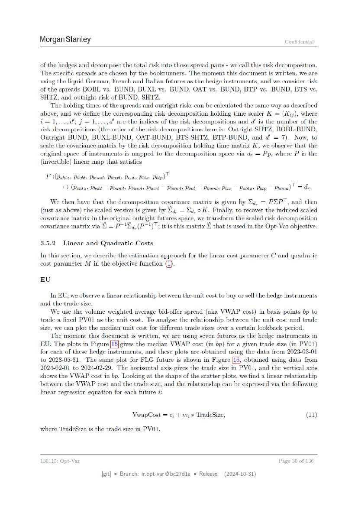
morgan stanley 機密
ヘッジの内容を分解し、全体リスクを個々のスプレッドに分散させる - これがリスク分解と呼ばれます。具体的なスプレッドはブックランナーズによって選択されます。この文書が作成された瞬間、流動性のあるドイツ、フランス、イタリアの将来物を使用してヘッジ商品として使用しており、スプレッド BOBL vs. BUND, BUXL vs. BUND, OAT vs. BUND, BTP vs. BUND, BTS vs. SHTZ および outright リスクの BUND, SHTZ を考慮しています。
これらのスプレッドと outright リスクの保有期間は、上記で説明した方法と同じで計算できます。リスク分解に対応する保有期間スケーラー K = (Ki) を定義します。ここで i=1,...,d, j=1,...,d' はリスク分解のインデックスであり、d' はリスク分解の数（ここでのリスク分解の順序は： outright SHTZ, BOBL-BUND, outright BUND, BUXL-BUND, OAT-BUND, BTS-SHTZ, BTP-BUND で d' = 7）です。次に、リスク分解の共分散行列を保有期間行列 K によってスケーリングするために、元の商品空間が分解空間にマッピングされることが観察されます。これは Pp, で与えられ、P は以下の（可逆な）線形写像を満たします。
P : (Dshtz + Phobl, Pound Pouzl; Poat; Pits, Potp)
→ (Pshtzs Poobl - Pound Pounds Pouzt - Pound; Poat - Pound» Pies - Pshtz> Potp - Pound) | = dr-
これにより、分解共分散行列は N_g, = PEP と与えられます。そして（上記と同じように）スケーリングされたバージョンは 54, = Na, 0K です。最後に、元の outright 将来物空間での導入されたスケーリング共分散行列を回復するために、スケーリングリスク分解共分散行列を P~!¥q,(P~')' で変換します。この行列 ¥ が Opt-Var の目標関数に使用されます。
3.5.2 線形コストと二次コスト
このセクションでは、目標関数 (I) 内の線形コストパラメータ C’ および二次コストパラメータ M の推定方法について説明します。
EU では、ヘッジ商品を買うか売る単位コストと取引量との間には線形関係が観察されます。
固定 PV01 をトレードするための単位コストとして、取引量ベースポイント bp の平均取引価格（VWAP コスト）を使用します。単位コストと取引量の関係を分析するために、特定のローカックバック期間における異なる取引量に対する中央値単位コストをプロットすることができます。
この文書が作成された瞬間、EU では 7 つの将来物を使用してヘッジ商品として使用しています。図 [I5] のプロットは、これらのヘッジ商品ごとに与えられた取引量（PV01）に対する中央値 VWAP コスト（bp）を示しており、2023-03-01 から 2023-05-31 のデータを使用して得られました。FLG 将来物の同じプロットは、図 [16] に示され、2024-02-01 から 2024-02-29 のデータを使用して得られました。水平軸は取引量（PV01）で、垂直軸は VWAP コスト（bp）を示します。散布図の形状を見ると、VWAP コストと取引量との間には線形関係があることがわかり、各将来物 i に対する以下の線形回帰方程式で表現できます：
VWapCost = cj + mj * TradeSize, (11)
where TradeSize is the trade size in PV01.
130115: Opt-Var 第30ページ目/136ページ
[git] « 分岐: iropt-var@be27d1a = 発行版: (2024年10月31日)
全文日本語訳

モルガン・スタンレー 機密
与特定规模的交易费用由方程式（11）表示，我们可以估算未来7交易给定规模 \( u_i \) 的总执行成本：
\[ \text{ExecutionCost} = VwapCost + u_j = c_i * u_i + m_i * u_P. \]
これはOpt-Var目標関数の実行コスト項です。ここで、\( c_i \) は線形費用因子 \( C \) の \( i \): 元素であり、\( m_i \) は二次費用行列 \( M \) の対角元 \( i \): 入力です。したがって、私たちはこの方法を使用して回帰方程式（）を用いてコストパラメータ \( C' \) と \( M \) を推定できます。図|15|の青い線は、この手法でフィットされた回帰直線です。これらの線はすべてのヘッジ商品について散布図に良くフィットしており、決定係数 \( R^2 \) が0.9以上です。
=
i
山田。
Ia.
8
事務。
is i
図15: 2023-03-01から2023-05-31のデータを使用してVWAPコストと取引規模との線形関係
Opt-Var 130115: 第31ページ目／136ページ目
[git] 分岐：iropt-var@be27d1a = 発行： (2024-10-31)
全文日本語訳

モルガン・スタンレー 機密
AG
— yroansiosemeaix
"rode ize (P¥O1,
図16: FLGにおける有効取引コストと取引規模の線形関係（2024-02-01から2024-02-29まで）
US
米国では、メトリックで自動ヘッジによって実行された注文の利益損失（PnL）と注文サイズを要約した実行報告書が存在します。ブックランナーズはこの実行報告書を参考に、コストC’と二次コストMを決定します。特に、30日間の平均実行PNL（DVO1あたり）はCの値を設定するためのベンチマークとなります。以下では、EUでの見られたような類似した線形回帰分析がUSTデータに対して行われます。この目的のために、BMETテーブルaimcpnl_eventで報告された実行取引とそのコストを使用し、bpに変換します。これは実際のコストに対応しており、攻撃的な注文よりも平均的に小さいことが特徴です。これは、パッシブ・アグレッシブシグナルモデル[6]とアイスバーグ注文を使用して注文を小さな部分に分割することにより達成されます。
130115: Opt-Var 第32ページ目／136ページ目
[git] « 分岐: iropt-var@be27d1a = 発行: (2024年10月31日)
全文日本語訳

モルガン・スタンレー 機密
i
aaa ie aia a ae oe +a Sane
inl
a i
i
de a
afte P
wings
sis wie aie al
図17: 2022年10月21日から2023年6月8日までの取引コストの効果的な関係と取引量の線形関係（米国）
130115: Opt-Var ページ33/136
[git] 「分岐: iropt-var@be27d1a = 発行: (2024年10月31日)
全文日本語訳

モルガン・スタンレー 機密
3.6 数値実装
このセクションでは、Opt-Varモデルの生産環境での実装と使用されたプラットフォームおよびパッケージについて説明します。
3.6.1 Java でのモデル実装
Opt-Varモデルは二次最適化問題として表現され、Javaで生産環境に実装されています。具体的にはNAG最適化ライブラリを使用し、特にE04NQルーチンを用いています。このルーチンはFortranのE04NQFルーチンをラップしており、二次最適化問題を解くのに適しています。
このルーチンは以下のパラメータを受け取り、これらは生産環境での実装で明示的に設定されています：
+ 最適性許容度：最適性許容度はデフォルト値10^-1に設定されています。許容度を小さくすると、反復回数が増加し、より-optimalな結果を得ることができます。
実装では、初期可行点も提供しています。最終的な上限と下限取引制限の中央点を選択して初期点として使用し、開始可能な初期点を確保します。最終的な上限と下限取引制限は、ポジション増加が許可されている場合 Eq. (7) から得られ、ポジション増加が許可されていない場合 Eq. (8a) および Eq. (8b) から得られます。
3.6.2 モデルの再構成
NAG E04NQ ルーチンに合わせて Java で Opt-Varモデルを再構成する必要があります。二次最適化問題を実装するために、以下の制約条件を考慮します：
- 最小化 \((q + u)'(AD + b_0P_a)(q^T + u) + C_u' + u'Mu - a_l(q + u)\)
- 制約：\(-H_y < S_0(q_i + u_i) < H_u, i = 1\)
ここで、\(S_y\) と \(S_u\) はそれぞれ取引量 \(u\) の最終的な下限と上限制約を表します；ポジション増加が許可されている場合 Eq. (7) から読み取り、ポジション増加が許可されていない場合符号によって異なる値になります。
問題を具体的に二次計画問題として再構成し、線形制約を持つようにすることで数値実装を行います。特に、オブジェクト関数 F の中にある定数は解に影響を与えませんので計算から省略できます。また、絶対値 |u| を追加の状態変数 z による線形項に置き換えることで二次計画問題を得ます。問題は以下のようになります：
- 最小化 \(u^T (AD + b_0P_a) u + \frac{1}{2} u^T M u - a_l u\)
- 制約：\(z_i > u_i, i \in [d]\)
130115: Opt-Var 第34ページ／136ページ
[git] ブランチ：iropt-var@be27d1a = リリース：(2024-10-31)
全文日本語訳

モルガン・スタンレー 機密
a2 —u, Vie [d]
d
—Wh< a+ u) < Hy
i=l
Sh<u<S?, wield (13)
この実装形は現在、2次元の最適化問題となっています。改変された問題（13）が（12）と同等であることが容易に理解できます。つまり、提案されたヘッジ u* の解は両方の場合で同じであり、最終的な目的関数値も同じです。実際、Fy(u), F(u, 2) をそれぞれの元の目的関数と改変後の目的関数とすると、(12) の唯一の解 u* に対して以下の関係が成り立ちます：Fy(u*) = F,(u*, |u*|)（Fの定義から直接得られます）であり、任意の許容可能な u, z に対して F,(u,z) > F,(u, |u|) （各成分の z は非負値を取るため、C7 を最小化するには最も小さい許容可能な値 - この場合、|u| を選択します）。これにより (u*,|u*|) が（13）の解であることが示されます。なぜなら任意の許容可能な u, z に対して
Fi(u, 2) > Fy(u, jul) = Fy(u)
> F,(u) = Fyu", Ju"),
であり、(u*,|u*|) が改変後の問題に対する許容可能な解であることが確認できます。
共分散行列の小さな変更。
実際では、共分散行列の対角項は目的関数の平方項で1%ずつ増加します。これは新しい平方コストを考慮することと同じ効果があります（例えば Eq. を参照）。したがって、
A...
M=M+ Foo tias(®)- (14)
取引不能な商品
ある市場が閉鎖状態にある場合や一部の商品が一時的に取引できない場合があります。たとえば、米国では将来物市場が閉鎖されても現金市場は開いているかもしれません。そのような場合でも最適化問題に考慮する必要があります。実際には、取引不能な商品による分散を考慮する必要があるものの、これらの資産に対するコントロール変数はありません（これらの資産に対する取引は実行できません）；しかし他の取引可能な関連商品を使用してポジションをヘッジすることは可能です。この場合、非取引可能商品のインデックス集合 U C [d] が与えられたとき、Opt-Var最適化（13）に追加制約 u; = 0 (i ∈ U) を適用します。
3.6.3 CRB 最適化
CRB 最適化では E04NQ ルーチンも使用します。イテレーション数の上限は100ではなく150とします。最適化開始位置をゼロに設定し、常に許容可能な値であるためです。共分散行列の対角項の増加を使用しません。
以前と同じように二次計画法フレームワークに適合するように問題を再構成する必要があります。これは目的関数内の絶対値を削除することに対応します。前回の場合のように追加変数を導入する必要はありません。
130115: Opt-Var 35ページ目 / 136ページ
[git] « 分岐：iropt-var@be27d1a = 発行版： (2024年10月31日)
全文日本語訳

morgan stein 機密
CRB設定。実際、制約(9)により、sign(w}) = sign(c})であることが分かっています。したがって |u}| = sign(c!) x ul となり、変数 u の線形式になります。目的関数は次のようになります。
N T N N N d
ML (1+) = (+s) +23 (eG — ui)’ DG —ui) — OY sign(d ud.
i=1 i=l i=1 i=1 j=
3.6.4 パラメータの校正（Python）
共分散行列 © およびコストパラメータ C と M の校正は、Q/kdb と Python を使用して行い、オープンソースパッケージ：Numpy, Pandas, Scipy, Sklearn を用います。
3.7 付録：技術詳細
3.7.1 制約の再形式化
元の Opt-Var の目標は、決定変数 u に対するボックス制約が不整合である可能性があるため、その表現を再構成します。第 3.2.5 节中で述べた制約の再形式化は次の原理に基づいています：仮に変数 u - u € [L1,Ui] と w € (Lo, Us] の二つの制約が不整合である場合、かつその制約を交差が空集合の場合でも前者の区間内に最も近い値を選択したい場合について述べます。例えば、U; < Lo の場合、制約は Uy < L1 となる場合 {U9} に縮小します。Ly < u < U; と Lh < wu < US の二つの制約を再形式化してこの条件を満たすためには、まず第二の制約を緩和し、交差が空集合でないまで（つまり、L, = min(L9,U;) および Ul = max(U9,L1)）します。このように制約は Ly < u < U; と Lh < wu < US の二つが構築上一致するため、これらを簡潔に組み合わせて L < u <U, と表現できます（L = max(L1,L4) および U = min(U;, U3)）。
Ly U1 Ly
- o- . .
図18：特定の不整合なボックス制約のスキーマ。最初の制約（赤色）が強制される一方で、第二の制約（青色）は交差が空集合でないまで最小限に緩和されます（破線青色）。図示によると、この場合 Ly = U; および Uj = Up。
例えば、第3.2.3節で述べた Opt-Var の制約を位置増加が許可されない場合に考慮してみましょう。機器 i を検討すると、q; < 0 であると仮定し、合計リスク制約 (2) を除く uj の制約は次のようになります。
-Sisui sc Si,
-B-g sus Bi-4G
O<us—a. (15)
最初の制約と第二の制約が一致するように保証する手順に従って、まず第一の制約を尊重しつつ二つの制約が一致するように緩和します。その結果は次のようになります：
max(—Sj, min(—B; — qi, S;)) < uj < min(S;, max(B; — qi, —S;))
~max(—S;,min(—B; — qi, S;)) < ui < min(S;,Bi — gi)
最初の制約と第三の制約が一致していることに注意してください。両方とも 0 を含むため、三つの制約を表現する次の式が得られます：
130115: Opt-Var ページ36の136
[git] « 分岐：iropt-var@be27d1a = 発行版： (2024年10月31日)
全文日本語訳

モルガン・スタンレー 機密
max(max(—S;, min(—B; — qi, Si)), 0) < ui < min(min(Si, Bi — qi), —43)
~max(min(—B; — qi, Si), 0) < ui < min(Si, —gi),
したがって、ui の定義は (8) 式で示されています。方程式の導出には同じ理由を使用するため、省略します。
3.7.2 解の存在と一意性
凸性と連続性
まず、連続関数の和であるため、目的関数 Fy は連続です。次に、関数 h : u ∈ R4 + s (qt+u)' (AL + doc Pa)(q+u) — a! (q+) +u! Mu のヘッセ行列 = &h が存在し、= = 2(AU+6..P, + M) です。前提条件により、行列 5 と M はそれぞれ正定値で正半定値であり、6.,P) も正半定値です。したがって、ヘッセ行列 = の h は正定値であり、h の严格な凸性を示します。さらに、コスト関数 u ∈ R4++ CT |u| は凸関数と厳密に凸な関数 h の和であるため、目的関数 F; は厳密に凸な関数です。
+ 存在
我々はすべての制約が満たされていることを仮定します（それ以外の場合、最適化器を呼び出しません）。これらは非空で凸かつコンパクトな集合を定義します。コンパクト性は不等式制約により有界であり、閉であるため得られます。
これは (当) によって定義される凸集合の交差から来ます（allowIncreasePosition が false の場合）。極値定理によれば、連続関数 F, はこの許容集合上で有限な最小値を持ちます。
+ 一意性
严格凸性により、凸許容集合上の F, の最小値は一意です。
我々は Opt-Var 最適化問題が一意の解を持つことを結論付けることができます。
3.7.3 無限時間コストの導出
このセクションでは、Opt-Var の目的関数を導きます。まず、以下の無限時間制御問題を書き下します：
+∞
min, SAG +) Dg 4°) +O u'| $ (uw) Mul — a (gi +u')
ueR® 5=0
gtadgtu
d
Ais SOG, +45) < Au
=
max(min(—B, — g5,.5;),—Sj) <u; < min(max(B; — g;,—Sj),55) ¥j €1,--+ 4d,
これを二次問題として再構成します（参照：セクション [B.
+∞ 7 7 7 7 7 7
min Sq +u') Ng tu’) +C le! + (u')' Mui -a'(g +u')
ueR4 i=
130115: Opt-Var ページ 37 of 136
[git] 「ブランチ：iropt-var@be27d1a = リリース： (2024-10-31)
全文日本語訳

モルガン・スタンレー 機密
gttaqgtui
g>ui
g>-u
d
M< SG +uj) < Hu
jel
max(min(−B, − qj,.5;),−Sj) < uj < min(max(B; − q},−S;),S;) Vj €1,---.d.
この最適制御問題を解くのは難しい理由は、無限の制約があるからです。
「モデル予測制御（MPC）」におけるデュアルモード予測という標準的な近似方法として、[I] のセクション2.3 を参照してください。最初のステップとそれ以外を分離し、最初のステップのみに制約を考慮することです。また、αシグナルは最初のステップ後に0になると仮定します。
近似された問題は次のようになります：
min Aq? +.u®) TE(q? + u?) + CT fu] + (u®) Mu? — al (go +09)
u
00
+O AG +u)TEG +u') + Cla + (u')' Mul
i=1
gttadtui
>
29> -u?
4 >0,V¥i>1
d
Ms oq} + uf) < Hu
j=l
max(min(−B; − q), $;),−S;) < ui, < min(max(B; − q),−S;), $;) ¥j €1,--+ .d
= pin, Ma? + uP) D(a? + u) CT ad] + (wl) Ma? — a! (g? + 0°)
too 7
+ min, > Agi tui) (qi tu) + CT + (ui) Mut
gitiadtu
22>
29> —u?
2>0,Vi>1
d
M< Yq} +uj) < Hu
j=l
max(min(−B, − 4}, $;),−S;) < uj < min(max(B; − q?, −5;), $5) ¥j €1,--+.d,
= min A(q? +a") Eq? + a9) + CT |u?| + (u®) Mu? — al (go +u°)
wWeERE
+00 7
t+min AG tu) SG tu!) + (u')' Mut (16)
ucR? il
gtiagtul
0 > yo
2015年10月30日: Opt-Var 第38頁／136頁
[git] 分岐：iropt-var@be27d1a = 発行： (2024年10月31日)
全文日本語訳

モルガン・スタンレー 機密
22> -u?
d
M< Yq} +uj) < Hu
j=l
max(min(—B; — qj, $3), —S;) < wy < min(max(B;— q},—S;), $3) Vj €1,---.d,
動的計画法により解くことができる。制約なしの無限時間 Horizon 問題は明示的に解決できる。
問題
+00 7 7 7 7
ol) = min So Ng + ug + ut) + (wt) Met
i=0
gtadtu, f=
を計算することができる。これは古典的な形で書き換えることができる。
too 7
v(q) = mint 0 (q') "Dai + (u') Eu’ + 2(¢') "Ful
i=0
gt! = Ag + Bu, @ =4,
であり、ここで
A=I
B=Iq
D= 5
E=\S+M
F=)S.
動的計画法により，価値関数 v(q) = q' Paq を満たす P) は代数リカッチ方程式の唯一の正定義解 (PSD) である。
P,=A'PRA-(A'RB+F)(B'RB+E)'(A'PB+F)'+D. (17)
この方程式は等価であり
(Py + AB)(Py + AD + M)1(Py +. AD)l = AD
<=> (Py +AE)((Py + AE)! = (Py + AS)“ "((Dy + AD)! + M1)“ (Py + AD)“1)(Py + AE) = AE,
ウィドバリー恒等式 (A+ B)-!= A-!—A-!(A-1 4 Bo!) を用いることで。
Py +dE-— (Py +AE)-'4+Mo1)-1 = aE
<=> Py=((Py+ dD) 1+ My!
<= P(Py+dA¥) 14+ RM t=1
<> P+ PMP +P\MOAD = Py HAD
<= PM 'P\+P\M1AD-AD=0.
2023年11月15日: Opt-Var 第39頁／共136頁
[git] « 分岐: iropt-var@be27d1a = 発行版: (2024年10月31日)
全文日本語訳

モルガン・スタンレー 機密
各資産に対する二次コストが同じである場合、すなわち M = mlq で m ∈ R とすると、
\[
P = \frac{AE + VEZ}{2} - \frac{IMAS (AE + Ay/D^2)}{4}
\]
という式で表されます。ここで、平方根は PSD マトリックスの意味での理解です。この結果を二次コスト行列を m1q で近似することで適用します（m は資産全体に対する平均二次コスト）。(16) 式における無限期価値関数 v(q1) = q1 Pq を置き換えると、Opt-Var 問題が得られます。ここで s = 1 です。ポジションの増加が許されない場合でも、論理は同じで、唯一異なるのは最初のステップでの制約条件のみです。無限期問題とその解は変わりません。実際には、パラメータ s5, は取引デスクの裁量により 1 または 0 に設定されます。
4 モデル開発・選定プロセス
4.1 モデル分割と変数選択
4.1.1 モデル分割
Opt-Var モデルは、自動ヘッジのためにポートフォリオとコスト最適化モデルです。このモデルは、与えられた一連の製品を持つ任意のポートフォリオに対して適用することができます。ただし、ポートフォリオの共分散行列が適切に推定できることと、コストパラメータが校正されることを前提としています。当社の場合、このモデルは米国の UST 国債 & 期先ポジションと EU の EGB 期先ポジションをヘッジするために使用されています。
4.1.2 変数選択
Opt-Var モデルの決定変数はトレードベクトル w です。このトレードベクトルの各要素は、ポートフォリオ内のリスク資産をヘッジするための取引量に対応しています。ヘッジする資産が含まれるインストゥルメントの選択は、ブックランナーやビジネス上の決定により行われます。ヘッジインストゥルメントを選択するシステム的なアプローチはありませんが、適切なヘッジインストゥルメントは以下の基準を満たすべきです：
+ ヘッジ対象の資産とヘッジインストゥルメントとの間の関係性が明確に特定できる必要があります。つまり、ヘッジ対象の資産の価格が一定の動きをする場合、その情報に基づいてヘッジインストゥルメントの価格変動を推定することが可能であるべきです。
+ ヘッジインストゥルメントは流動性が十分に高いので、必要に応じて容易に取引してポジションをヘッジできるようにする必要があります。
現在、EU ポートフォリオには 7 つの流動性のある期先 EGB 期先が含まれています。米国では、流動性のあるオンザラン・トレーシーズと期先 UST 期先が含まれています（詳細は参照）。ポジションに新しい製品が追加された場合、その製品を含む共分散行列の再校正が必要となり、その製品に対するコストとリスク制限パラメータなども校正される必要がありますが、モデルの基本的な論理は変化しません。
130115: Opt-Var 40ページ目/136ページ
[git] « 分岐: iropt-var@be27d1a = 発行: (2024年10月31日)
全文日本語訳

morgan stanley 機密
4.2 代替理論とアプローチ
このセクションでは、代替アプローチをリストし、選択の理由について説明します。
- ハッジを提案するモデルが、異なるハッジ商品の相関性や取引コストを利用しない場合。これは最も単純なハッジ提案のアプローチです。このアプローチでは、モデルは一定の限界を超えた場合に常にその商品自体を取引することを提案しますが、相関性や取引コストを考慮しません。したがって、このようなアプローチはハッジ取引が高くなる可能性があり、最適なポートフォリオには至らないかもしれません。
+ モデルに二次的なコスト項を含まないOpt-Var目標。一方で、モデルに二次的なコスト項u! Muを省き、線形のコスト項C™ |u|のみを使用することができるでしょう。しかし、これはこのモデルが取引量に関係なく一歩で安定領域に収束することを意味します（この証明はセクションに基づくことができます）。このアプローチはより大きな取引を生じ、市場への価格影響も大きくなります；したがって、実行コストも大きくなるでしょう。
4.3 主要ステークホルダー・独立ソースからの貢献
ステークホルダーは以下のエンティティです：
+ アルゴリズムトレーダー（ブックランナー）：モデルを使用するアルゴリズムを用いる主要なステークホルダーで、モデルのパラメータを制御します。
- ストラテジスト：必要に応じてモデルを構築し、強化し、較正します。ストラテジストはOpt-Varモデルが有効かつ適切に動作していることを確認するか、それ以外の場合にはブックランナーと協力してモデルのパラメータを再調整・再較正します。また、モデルの将来の強化と開発にも責任を持ちます。
+ テクノロジー：ストラテジストによって開発されたモデルの論理を生産環境に変更する責任があります。モデルの実装が正しく行われていることを確認し、MSのリアルタイムアプリケーション向けの基準を満たすことを確保します。
- モデルオーナー：Opt-Varモデルの場合、ストラテジスト管理がモデルオーナーとなります。文書の前段落に専用の連絡先が提供されています。
+ ETRM：アルゴリズムを使用するリスクを管理します。
独立ソースはセクションで詳細に説明されています。
5 モデルテスト
5.1 モデル診断テスト
5.1.1 実装テスト
セクションによると、Opt-Varモデルは生産環境でNAGライブラリを使用してJavaで実装されています。このセクションでは、Python環境でOpt-Varモデルを実装し、生産実装とPython実装が同じ結果であることをテストします。NAGライブラリはPythonでアクセスするためには特定のライセンスが必要です。したがって、
130115: Opt-Var 41ページ目／136ページ
全文日本語訳

morgan stanley 機密
Python で別の最適化ライブラリ CVXOPT を使用しています。テストは EU のデータを使用して実施しました。
100 つのランダムな例から生産環境を抽出してテストを実装しました。モデルの入力ポートフォリオリスクは、BMET に記録された 23 年 6 月 26 日の portfolioRisk テーブルからランダムサンプリングされました。このテストで使用した他のモデルの入力とパラメータは、23 年 6 月 26 日の生産環境設定と同様です。
表 [5] では、Java と Python の実装間の 100 つの例に対する比較をまとめています。最適化後の目的関数値と提案されたヘッジ取引を各ヘッジ商品ごとに比較しています。列 Avg Diff は Java と Python の解との平均絶対差を示します。括弧内の数字は、最適化前の初期値に対するパーセンテージの違いです。目的関数値については、その数値は最適化前の初期目的関数値に対するパーセンテージの違いです。先物については、その数値は最適化前のポジションに対するパーセンテージの違いです。表に示すところによると、平均的な差異はすべて 0.02% と 0.03% を下回っており、非常に小さく無視できるほどです。これらの小さな差異は、Java と Python で実装された異なる丸めとログ記録精度の違いによる可能性があります。Match および Mismatch 列では、一致と不一致のケース数を示しています。Java と Python の結果が一致する定義は、絶対的な差異が 10 より小さい場合です。このルールに従って、テストした 100 つの例すべてで結果が一致しました。
SHTZ BOBL BUND BUXL OAT BTS BTP
SHTZ 5.44 2.97 1.67 2.23 3.18 4.55 3.25
BOBL 2.97 2.75 1.62 154 2.07 265 2.14
BUND 1.67 1.62 1.39 1.07 1.33 1.54
BUXL 2.23 1.54 1.07 2.27 243 2.50
OAT 3 2.07 1.33 2.43 3.10 3.59
BTS 2.65 1.54 2.50 3.59 9.66
BTP 2.14 1.38 2.53 3.30 4.21
表 2: EU の共分散行列（23 年 6 月 26 日）
商品 | 費用 | 二次費用 費用 | バケット リスク限度
SHTZ 0.22 1740 30,000
BOBL 0.17 610 30,000
BUND 0.08 397 30,000
BUXL 0.1 996 30,000
OAT 0.12 961 30,000
BTS 0.3 4846 30,000
BTP 0.15 1699 30,000
表 3: EU の費用、二次費用とバケットリスク限度（23 年 6 月 26 日）
5.1.2 最適化収束テスト
このセクションでは、Java と Python の実装間の収束性をテストし、同じグローバル最小値に収束することを証明します。セクションで説明した例を使用して、各イテレーション後の結果を記録します。
130115: Opt-Var
[git] « 分岐:iropt-var@be27d1a = 発行: (2024 年 10 月 31 日)
全文日本語訳

モルガン・スタンレー 機密
パラメータ/入力 | 値
ヘッジ可能なリスク制限 | 10,000
バケットリスク制限 | 30,000
取引サイズ制限 50,000
位置の増加を許可するか | True
リスク回避因子 A | 2e-5
表4: 2023年6月26日時点のその他のEUパラメータと入力
は、与えられた初期ポートフォリオに対する目的関数値を各イテレーションごとに示しています。PV01 {SHTZ, BOBL, BUND, BUXL, OAT, BTS, BTP} = {-981.47, 6405.88, -21370.15, 7235.52,
-1203.48, 629.40}。水平軸は0から100までのイテレーションを示し、垂直軸は目的関数値を示しています。青い線はJavaの実装による収束パスを示し、オレンジ色の線はPythonの実装による収束を示します。図によると、目的関数値は10回以内に同じ値に収束します。2つの実装の収束パスは異なるため、2つの実装が異なるアルゴリズムを使用し、おそらく異なる開始点を使用しているからです。2つの実装が同じ目的関数値に収束することにより、収束するまでの異なるパスについては心配ありません。図では、各イテレーションごとの提案された取引を今後のもので示しています。同様に、青い線はJavaの解を示し、オレンジ色の線はPythonの解を示します。JavaとPythonはすべての将来に対して10回以内に同じ解に収束します。
上記の方法でテストした全100例について収束性を確認しました。これらの100例に対する目的関数値のプロットは、付録のセクション i および 根据这些图，Java和Python在所有测试示例中都在100次迭代内收敛到相同的结果。
本节和第 部分的测试结果都表明，最有可能的是Opt-Var模型具有唯一的全局最小值解，并且该最小值由Java和Python实现共同达到。否则，两种不同的算法可能会偶然返回不同的输出。这也证明了在第[3.部分中选择的Java参数是适当的。基于这些测试结果，我们将使用Python实现进行分析并进行额外的测试。
—
6500 — by
6000
§ 5500
5 5000
2 4500
& aoo0
3500
3000
© 5 10 15 20 25 30 35 40 45 50 55 60 65 70 75 60 85 90 95100
イテレーション
図19: JavaとPythonの収束比較
130115: Opt-Var 第43頁共136頁
[git] « 分岐:iropt-var@be27d1a = 発行:(2024年10月31日)
全文日本語訳

morgan stanley 機密
分類 / メトリック 平均差異! | 一致*] 不一致")
目的関数 | 0.00 (0.00%) 100 0
SHTZ 0.00 (0.00%) [| _100 0
BOBL 0.00 (0.00%) | 100 0
BUND 0.00 (0.00%) | 100 0
BUXL 0.01 (0.00%) | _100 0
OAT 0.02 (0.00%) [100 0
BTS 0.00 (0.00%) [| _100 0
BTP 0.02 (0.03%) [100 0
この表はJavaとPythonの結果間の比較を要約しています。目的関数行では、最適化後の目的関数値の比較が示されています。その他の行では、JavaとPython解（つまりOpt-Var提案取引）のPVO1での比較が示されています。括弧内の数字は、最適化前の初期値に対する差異のパーセンテージです。目的関数値の場合、数字は最適化前の初期目的関数値に対する差異のパーセンテージです。先物の場合、数字は最適化前の初期ポジションに対する差異のパーセンテージです。
1 JavaとPython実装間の平均絶対差異。
2 JavaとPython結果が一致した例数。絶対差が10 PV01未満の場合、結果を一致としてカウントします。
3 JavaとPython結果が一致しなかった例数。
表5: JavaとPython解の比較
5.1.3. CRB 実装テストおよび最適化 收束テスト
CRB問題に対する同じテストを以前と同じようにUS製品で繰り返します。2024/01/31の生産から100個のランダムAIMポートフォリオを選択します。各AIMポートフォリオに対して、15個のランダム注文を持つクライアントポートフォリオをランダム生成します。このテストでは2つのクライアントを考慮に入れます。Table[9]で与えられた共分散行列とTable [6]から得たパラメータを使用します。Set A（図 および[22）とSet B（図 の制約で別々にテストを行います。100個のランダム例での収束プロットは、 にあります。JavaとPython実装が同じ解と最適な目的関数値に収束していることが確認できます。Table
およびTable [8]は、100個の例に対するJavaとPython実装間の比較を要約しています。
130115: Opt-Var 第44ページ目
[git] « 分岐:iropt-var@be27d1a = 発行:(2024-10-31)
全文日本語訳

morgan stanley 機密
パラメータ/入力 値
コスト 0.08
ヘッジ可能なリスク制限 50,000
バケットリスク制限 125,000
AIMリスク回避因子 \ 8e-8
CRB AIMリスク回避因子 \1_| 400e-8
クライアントCRBリスク回避因子 Ag le-8
表6: テスト用のUSパラメータ
=
150,000 Pe
& 100,000
2 50,000
2 °
3 80,000
100,000
¥
© 5 10 15 20 25 30 35 40 45 50 55 60 65 70 75 80 85 90 95 100
イテレーション
図21: CRB JavaとPythonの収束比較（セットA）
=
hy
100
4 sooeo
3 s0000
6
50,000
© 5 10 15 20 25 30 35 40 45 50 55 60 65 70 75 80 85 90 95 100
イテレーション
図23: CRB JavaとPythonの収束比較（セットB）
5.1.4 前提条件確認
コバリアンス行列が正定値であることを確認しました。
130115: Opt-Var ページ 5 of 136
[git] = 分岐: ir.opt-var@bc27d1a = 発行版: (2024年10月31日)
全文日本語訳
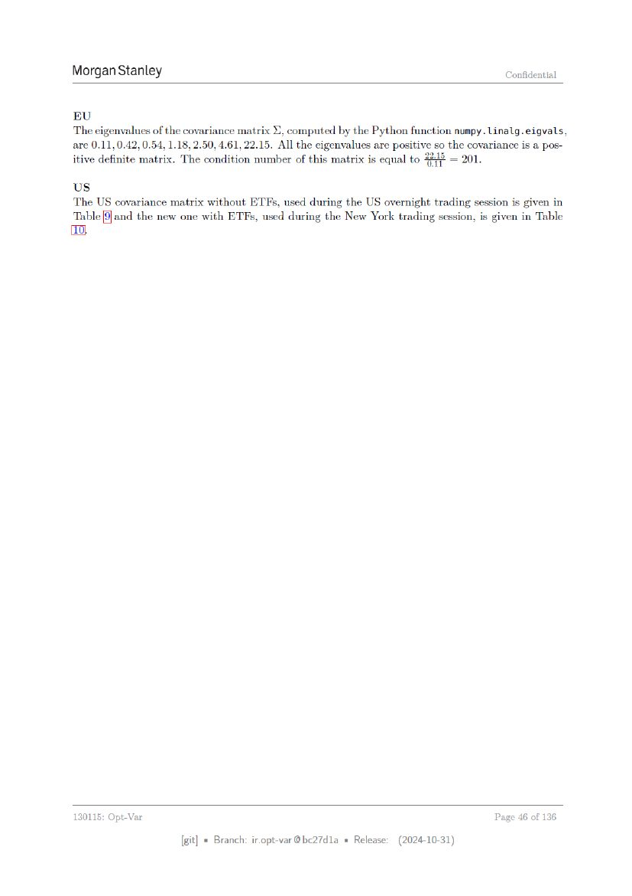
morgan stanley 機密
EU
共分散行列 © の固有値は、Python 関数 numpy.linalg.eigvals によって計算され、0.11, 0.42, 0.54, 1.18, 2.50, 4.61, 22.15 です。すべての固有値が正であるため、共分散は正定行列です。この行列の条件数は 248 = 201 です。
Us
US の夜間取引セッションで使用される ETF を除いた共分散行列と、ニューヨーク取引セッションで使用される新しい共分散行列（ETF を含む）は、表 [9] および表 {to} に示されています。
130115: Opt-Var ページ46の136ページ
[git] 「ブランチ:iropt-var@be27d1a = リリース:(2024-10-31)
全文日本語訳

モルガン・スタンレー 機密
```text
= snziv °
000 = sHzpy
1 2000
3 200 8 2000
$i 600 $i 000
33 400 3§ 000
& 000
200
e000. + sost jv
° = so8t py
3 5 tha doz So a5 ab 085 6065 7075 80H M0 S100 3 5 thi tz Josh do as 09h 60 G70 75 6G 50 S100
Weration eration
20000 ° eux
2000 = suxtey
J 15000 3 2000
z5 z§ —s000
3
3 inn
3
3 #000:
iH H -s000
000
£000
° 7000
© 5 ao a5 225 30 35 ao a5 5055 6065 7075 60 65 90 95100 © 5 to a5 025 3035 40.45 5055 60 Gs 70 75 60 65 90 95100
iteration eration
= ony 200 — a5
1000 = ofr by — 1s py
q 730 1000
2
© 500 & a0
I2 250 &I 600
H H
Boe 5 400
250 200
00 °
TS to 1h 2025 3035 ao 45 5085 6065 7075 60 80 S100 TS io 1h 2025 3035 40.45 5085 60 G 70 7560 OS 80 5100
Weration eration
= ery
200 = ery
g
E200
Ha
& —400
600
TS whi toa Boab W a S0Ss COE TOTS How Mb SIO
Iteration
Figure 20: Java and Python Convergence Comparison by Future
30115: Opt-Var ページ47の136ページ中
[git] = 分岐: ir.opt-var@bc27d1a = 発行: (2024年10月31日)
```
全文日本語訳

モルガン・スタンレー 機密
カテゴリ/メトリック 平均差異! | 一致*] 不一致")
目的関数 | 0.02 (0.00%) 100 0
2Yクライアント 1 0.01 (0.00%) 100 0
3Yクライアント 1 0.00 (0.00%) 100 0
5Yクライアント 1 0.01 (0.00%) 100 0
7Yクライアント 1 0.00 (0.00%) | 100 0
10Y クライアント 1 0.00 (0.00%) 100 0
20Y クライアント 1 0.00 (0.00%) 100 0
30Y クライアント 1 0.00 (0.00%) 100 0
TU クライアント 1 0.00 (0.00%) 100 0
FV クライアント 1 0.01 (0.00%) 100 0
TYクライアント 1 0.00 (0.00%) | 100 0
UXYクライアント 1 [0.00 (0.00%) | _100 0
USクライアント 1 0.00 (0.00%) [| _100 0
ULクライアント 1 0.00 (0.00%) | 100 0
2Yクライアント 2 0.00 (0.00%) 100 0
3Yクライアント 2 0.00 (0.00%) 100 0
5Yクライアント 2 0.01 (0.00%) 100 0
TYクライアント 2 0.00 (0.00%) [| _100 0
10Yクライアント 2 0.00 (0.00%) 100 0
20Yクライアント 2 0.00 (0.00%) 100 0
30Yクライアント 2 0.00 (0.00%) 100 0
TUクライアント 2 0.00 (0.00%) 100 0
FVクライアント 2 0.01 (0.00%) | 100 0
TY クライアント 2 0.00 (0.00%) 100 0
UXYクライアント 2_ | 0.00 (0.00%) | _100 0
USクライアント 2 0.00 (0.00%) [| _100 0
ULクライアント 2 0.00 (0.00%) [100 0
この表はJavaとPythonの結果間の比較を要約しています。目的関数行では、最適化後の目的関数値の比較が示されています。残りの行では、JavaとPython解（つまりOpt-Var提案取引）のPVO1での比較が示されています。括弧内の数字は、最適化前の初期値に対する差異をパーセンテージで表しています。目的関数値の場合、数字は最適化前の初期目的関数値に対する差異をパーセンテージで表します。先物の場合は、数字は最適化前の初期ポジションに対する差異をパーセンテージで表します。
| JavaとPythonの実装間の平均絶対差異。
2 JavaとPythonの結果が一致した例数。絶対差が10PVO1未満の場合、結果を一致としてカウントします。
° JavaとPythonの結果が一致しない例数。
表7: CRB JavaとPythonソリューションとのSet AのAIM制約比較
130115: Opt-Var ページ48の136
[git] « 分岐:iropt-var@be27d1a = 発行:(2024-10-31)
全文日本語訳

モルガン・スタンレー 機密
カテゴリ/メトリック 平均差異! | 一致*] 不一致")
目的関数 | 0.00 (0.00%) 100 0
2Yクライアント1 0.00 (0.00%) 100 0
3Yクライアント1 0.00 (0.00%) 100 0
5Yクライアント1 0.00 (0.00%) 100 0
7Yクライアント1 0.00 (0.00%) | 100 0
10Y クライアント 1 0.00 (0.00%) 100 0
20Y クライアント 1 0.00 (0.00%) 100 0
30Y クライアント 1 0.00 (0.00%) 100 0
TU クライアント 1 0.00 (0.00%) 100 0
FV クライアント 1 0.00 (0.00%) 100 0
TYクライアント1 0.00 (0.00%) | 100 0
UXYクライアント1 [0.00 (0.00%) | _100 0
USクライアント1 0.00 (0.00%) [| _100 0
ULクライアント1 0.00 (0.00%) | 100 0
2Yクライアント2 0.00 (0.00%) 100 0
3Yクライアント2 0.00 (0.00%) 100 0
5Yクライアント2 0.00 (0.00%) 100 0
TYクライアント2 0.00 (0.00%) [| _100 0
10Yクライアント2 0.00 (0.00%) 100 0
20Yクライアント2 0.00 (0.00%) 100 0
30Y クライアント 2 0.00 (0.00%) 100 0
TUクライアント2 0.00 (0.00%) | 100 0
FVクライアント2 0.00 (0.00%) | 100 0
TY クライアント 2 0.00 (0.00%) 100 0
UXYクライアント2 __ | 0.00 (0.00%) | _100 0
USクライアント2 0.00 (0.00%) [| _100 0
ULクライアント2 0.00 (0.00%) [100 0
この表はJavaとPythonの結果比較を要約しています。目的関数行では、最適化後の目的関数値の比較を行っています。残りの行では、JavaとPython解（つまりOpt-Var提案取引）のPVO1での比較を行っています。括弧内の数字は、最適化前の初期値に対する差異をパーセンテージで示しています。目的関数値の場合、数字は最適化前の初期目的関数値に対する差異をパーセンテージで示します。先物の場合は、数字は最適化前の初期ポジションに対する差異をパーセンテージで示します。
| JavaとPythonの実装間の平均絶対差異。
2 JavaとPythonの結果が一致した例数。絶対差が10PVO1未満の場合、結果を一致としてカウントします。
° JavaとPythonの結果が一致しなかった例数。
表8: CRB JavaとPythonソリューション比較（AIM制約セットB）
130115: Opt-Var ページ49の136
[git] « 分岐:iropt-var@be27d1a = 発行:(2024-10-31)
全文日本語訳

モルガン・スタンレー 機密
A 我 3 200 差异)
E 5 200 Siw) =5 50 利率
By
2
By
2
2 200 棒图 差异)
2 — iy — 利率
$300
car
F aoo00
2 20000 = svi 利率 nnn
2 — SY 利率
Fg
(on bie ah ada oppl Dn a
2 i 2 —— THN
&2 -s000 Sin) 2
£0 利率
$i 20000 iBy
mbt task dea ee ToT a ji bene ouonoume Dhemo oe
2 — i0vjvi 2 = 10v 2
£700 + 10Y
1 利率 270° + 10¥
2 利率
3By 3By
qininn ono cae mee cite ( i oone oboe ene me
== 201] 2 = 20" y2
peer 5y] 2 somo = toreoy
©H 0000
3
rf ne sas tn fash shapes Ja fog Bh on Sago ° 利率 持续时间 ene ssa
B sco0o: 507i Fy aor Ne
H svasy| 2 Sov ewy
a0)
z
By
| | 利率
ez
TMi TUN
= 持续时间 = 持续时间
ah ah 每年
wm | 2
= 利率 | 2 20000
5 年度
H
持续时间 年度
持续时间
Ti 持续时间
Wier 持续时间
図22: CRB JavaとPythonの制約セットAによる製品別収束比較
30115: Opt-Var ページ 50 of 136
[git] = 分岐: ir.opt-var@bc27d1a = 発行: (2024年10月31日)
全文日本語訳

モルガンスタンレー 機密
```text
aa B soo Ne
2 200. Sain} 2 = ay
ra & 250
?
Foo Fog
3 s00 a ar 2g VN
2 = Biey 220 ey
5 250 ra
?
Foo Fo
3 2000 ares
2 sv wy
si | 500
+ SYA py ?
Fo
Cb woo pakah shh ches ove sh ahah Gad DET A aba dak oh cheb 2) abe wh Ohad
z° 2 re
2 2 soo vay
~500 ears ra
?g + Wapy ?EB
pq aa aa ea a Tw wh oh go ppb ea De eT A ayes ogo
2g im |Z — 10" N2
= -s00 —roviey| 2-20 102 wy
i£ ~2000 3-00
&
pd Sab aa bab teh eb Ta hh de o pip aba a ha Th aha Shad
a av | 2 = 207 N2
2 = rovisy| 2 = avy
0009 ‘g 20000
& 20000 &
E a age khSa oh se cachJo Fo sh ohob ago Dib abs dae hab Dh aha Sh Shade
2 sooo me 307 vt geo — 3012
2 Swi) 2 302
§ $000 70
®
fo ®
fo
we | §= 0 —— Tuy
= + Wy
$200
e
aa | 37% FN
= we7 z eave 7
```
```text
2
fo
=A 0 if Tyne
2-200 vay
rm | §
—visy| F200
z L z UN V2
ze 00 U2 ay
raz サマルタ
= ws.ay] @ 250
zEy
£ 200
° aa ra 2a
8= uw | 3 US v2
—usasy | 2 1000
§ -s00 Fy
g By
28 sooo z°
3 “ cans 2
2 2 = ay
% 2500 um | $-200
g
By urs] g8
@ 5105 2095 3) 3640.45.50
55 GOES 1075 6 8.90 HiG0 © 5 015205 3035 40.5 50 55.60 G 70 Ts 80S
50 95300
図24: CRB JavaとPythonの制約セットBによる収束比較
130115: Opt-Var ページ 51 of 136
[git] = 分岐: ir.opt-var@bc27d1a = 発行: (2024年10月31日)
```
全文日本語訳
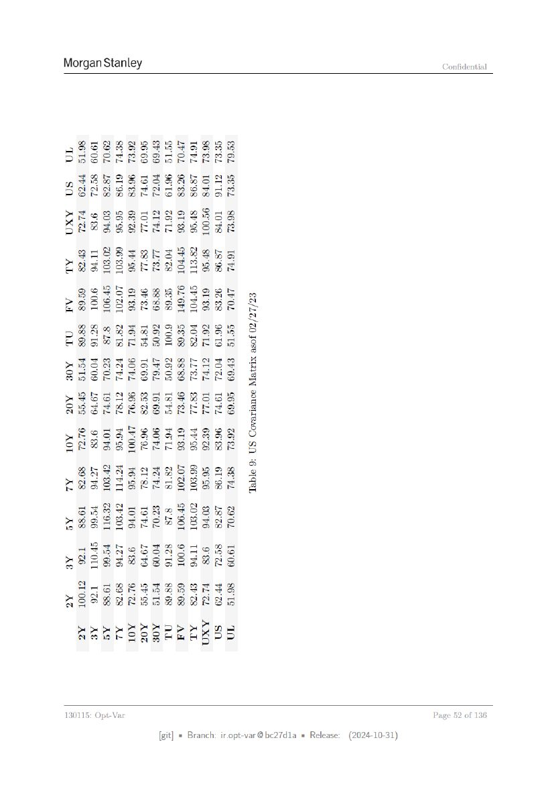
morgan stanley 機密
DaANDANOR Oh nM
WASSRAAYBYAARS
MBSRKRKSSHRRKRKE
aso Oo wm.
> Pls Pl ca Pal SV? el = aooh
ea Pa
ss BIOS Bas
BoASSHEOCKBDYOSSHE LE
ga
SRYSRSRERSSRR gs
BATASSARSSSAR
eards axad Svan Se
2013年11月15日: Opt-Var
[git] 「分岐: iropt-var@be27d1a = 発行: (2024年10月31日)
全文日本語訳
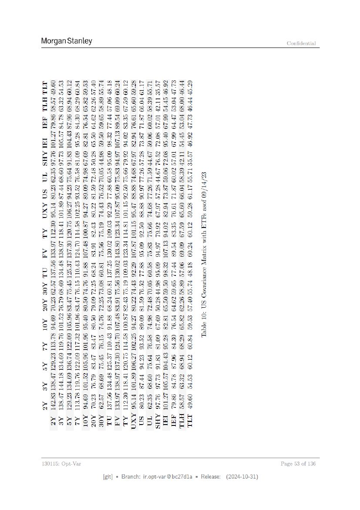
morgan stanley 機密
130115: Opt-Var ページ 53 of 136
[git] 「分岐: iropt-var@be27d1a = 発行: (2024年10月31日)
全文日本語訳

モルガン・スタンレー 機密
コビアマトリックスの固有値は、Python関数numpy.linalg.eigvalsによって計算され、8.12, 9.47, 9.74, 10.42, 10.80, 11.17, 11.60, 12.16, 13.13, 24.71, 41.56, 100.27, 1076.14です。この行列の条件数は44!4 = 133となります。ETFを含む行列の場合、その固有値は1.15 - 1551の範囲にあり、条件数は1350で、この行列も正定値です。
実際には、最適化問題が適切であるためには、二次項AX + d..P,+M,の条件数が重要となります。これは目標関数(3)と(4)において、生産で使用される範囲内での)の値によって見えます。米ETFの場合、| < 100e - 8のとき、この条件数は663未満です。EUの場合、| < 200e - 6のとき、この条件数は142未満です。モデルを調整した後も、手動で確認してこの条件数が1000未満であることを確認します。
5.1.5 稳定性
本節ではOpt-Var問題の安定性に関する分析を行います。リスクが変化するたびに（ポジションの更新や私たちのヘッジアクションによって）、最適化ルーチンは呼び出されます。このプロセスを繰り返す際のシステムの挙動についての分析は重要です。なぜなら、Opt-Varに基づくヘッジにより引き起こされるコストが無限大に増加しないことを確認したいからです。システムが不安定である場合、モデルは永続的に新しい注文を提供し、実行コストが螺旋状に増加する可能性があります。一方で、システムが安定している場合、安定性の範囲を理解することでポートフォリオリスクの管理が容易になり、適切なパラメータを選択する作業も簡素化されます。
便利のために、@ = (H, B, S, allowIncreasePosition, \, 5, d.0, C, M, a) をOpt-Varパラメータのベクトルとします。A, = Ag(@)は許容可能な制御の集合 - つまり、すべての制約が(12)で満たされるすべてのuC R@を示します。さらに、Zは許容可能な領域であり、これは全てのバケットリスクと総リスク制限制約を同時に満たすポジションの集合です。S CIは安定域であり、最適ヘッジがゼロとなるポジションの集合です：
T = {qeR! | Hi < 1'¢ < Au,-Bi <
a < Bivie [d], S = {q¢ RB? | argmin F,(u) = 0}.
ue Ag
本節の残り部分では、Opt-Varモデルを繰り返し呼び出すシステムが安定であることを示すために、二つの基本的な結論の概要を与えます。まず、開始在庫に関係なく有限ステップ数で許容可能な領域Zに収束すること、そして第二に、n + 00の極限においてポジションg”が安定域に収束することを証明します。また、この現象の実証的な例も本節末尾で示されます。
前提
本節の結果は以下の前提のもとで成り立ちます：
i) 目的関数におけるアルファ因子aはコストパラメータCの線形部分よりも小さいこと、つまり|a| < C。
ii) コビアマトリックス©が正定値であること。
iii) 取引制限Sが正である。
iv) Pyは(A, ¥,M)の関数であり、従って問題パラメータ自体ではないことを確認しました。
2024年10月31日リリース: iropt-var@be27d1a
Opt-Var 第54ページ目/136ページ
全文日本語訳

モルガン・スタンレー 機密
有限なステップ数で許容領域に収束
任意の初期在庫 \( g° \) に対して、ある整数 \( N = N(q°) \) が存在し、それが保証されるように \( q” \in T \) となる \( m > N \) であることを主張します。まず、\( g* \in Z \) の場合、\( q’ \in T \) であることを示します。これは \( q \in Z \) が意味する0 \in A_y \) から導けます。つまり最適化ルーチンが呼び出されるため、一旦在庫プロセス \(\{q*\}_{k=0}^{\infty}\) が T に達すると、T の外には出ることはありません（定義上：ルーチンが呼び出された場合、提案されるヘッジ取引 \( u \) は在庫を許容領域の外に出すことはありません）。残るは、位置プロセスが Z を初めて訪れるステップ数が N(q°) より少ないことを主張することです。これは技術的付録、セクションで証明します。したがって \(\{q'\}_{k=0}^{\infty}\) は有限なステップ数で T に収束します。
任意の初期在庫 \( q° \) に対して、ある整数 \( N = N(q°) \) が存在し、それが保証されるように \( g” \in T \) となる \( m > N \) であることを主張します。まず、\( g* \in T \) の場合、\( q’ \in T \) であることを示します。これは \( q \in I \) が意味する0 \in A_y \) から導けます。つまり最適化ルーチンが呼び出されるため、一旦在庫プロセス \(\{q*\}_{k=0}^{\infty}\) が Z に達すると、Z の外には出ることはありません（定義上：ルーチンが呼び出された場合、提案されるヘッジ取引 \( u \) は在庫を許容領域の外に出すことはありません）。残るは、位置プロセスが Z を初めて訪れるステップ数が N(q°) より少ないことを主張することです。これは技術的付録、セクションで証明します。したがって \(\{q'\}_{k=0}^{\infty}\) は有限なステップ数で T に収束します。
安定領域への収束
付録、セクション2]では、プロセスが安定領域 S に収束することを証明します。
CRB最適化の安定性
CRB軌跡は1ステップのみです。これはセクションで証明します。
数値的例示
付録で、ポートフォリオが安定領域 S に収束することを数値的に示します。この例では、2つの相関度 \( p \)、リスク回避パラメータ \(\lambda = 5e-8\) の玩具的な例を考えます。赤い領域は、式で計算された安定領域です、
\[ S = \{ q \in \mathbb{R}^2, -C < 2\lambda (q_0 + q) < C \}
= \{(g_0, a_1) \in \mathbb{R}^2, -C_0 < 2\lambda (Z_{0o} g_0 + Z_{og}) < C_0, -C_i < 2\lambda (Z_{og} g_0 + V_{im}) < C_i \},
\]
ここで、\(\lambda = 0\) の場合、軌跡が制約に触れない場合はこれらの式は4本の赤い線を定義します。また、スケールされた分散 \(10^{-8} x q' Sq\) の等高線も黒で描きます。
130115: Opt-Var 55ページ目/136ページ
[git] 「ブランチ:iropt-var@be27d1a = リリース:(2024-10-31)
全文日本語訳

モルガン・スタンレー 機密
_ _ntohedgeseluton wh 2=08.A~ S608 infnts = False
図25: 緑の線は (50000, 0) から、紫の線は (-45000, 75000) から始まる2つの例の軌跡。相関値は p = 0.8 で、無限 horizon のコストは使用されていません。
_ntoheoge selon
wih 2=0.9,A~ $08 iints = ae
図26: 緑の線は (50000, 0) から、紫の線は (-45000, 75000) から始まる2つの例の軌跡。相関値は p = 0.9 で、無限 horizon のコストは使用されていません。
130115: Opt-Var ページ56の136
[git] « 分岐: iropt-var@be27d1a = 発行版: (2024年10月31日)
全文日本語訳

モルガン・スタンレー 機密
_ atanedoeslston mth 9~08,4~56.08 nt = Tr
図27：（50000, 0）から開始する2つの例の軌跡。緑色は（50000, 0）から、紫色は（-45000, 75000）から開始します。相関値は p = 0.8 で、無限 horizon のコストが使用されています。
0 hg
図28：（50000, 0）から開始する2つの例の軌跡。緑色は（50000, 0）から、紫色は（-45000, 75000）から開始します。相関値は p = 0.9 で、無限 horizon のコストが使用されています。
5.2 シナリオ分析とストレステスト
同じパラメータを使用します。具体的には、セクションで示した制約を Table [I] に再掲します。
Opt-Var の各出力後、ポートフォリオを更新し、モデルを再度呼び出します。これにより以下の軌跡が生成されます。赤色でハイライトしたのは制約を満たしていない値です。
130115: Opt-Var ページ 57 of 136
[git] « 分岐：iropt-var@be27d1a = 発行版： (2024-10-31)
全文日本語訳

モルガン・スタンレー 機密
パラメータ/入力 値
ヘッジ可能なリスク制限 | 10,000
バケットリスク制限 30,000
取引サイズ制限 50,000
リスク回避因子 A | 2e-5
表11: その他のパラメータと入力
最終取引のコスト CT u;_1| (列 "Cost")を報告します。総リスク 24, q (列 "PV01")、スケーリングされた分散 \g," Eq; (列 "Variance”)も報告します。コバリアンス行列は表13で与えられています。CRBの場合、コストは合計取引量 5), ; |u/ に置き換えられます。クライアントのリスクはランダムに生成され、異なるテスト間で同じです。クライアントポートフォリオは表で与えられています。
SHTZ BOBL BUND BUXL OAT BTS BTP
SHTZ 7.04 2.91 1.09 216 3.15 601 3.35
BOBL 2.91 2.79 1.10 158 2.15 271 2.34
BUND 1.09 1.10 0.97 0.76 0.95 1.07 1.04
BUXL 2.16 1.58 0.76 212 2.25 2.24 2.49
OAT 3.15 2.15 0.95 2.25 2.89 3.28 3.29
BTS 6.01 2.71 1.07 2.24 3.28 11.23 414
BTP 3.35 2.34 1.04 249 3.29 414 4.48
表12: EU コバリアンス行列
パラメータ/入力 値
コスト. 0.08
ヘッジ可能なリスク制限 50,000
バケットリスク制限 125,000
AIM リスク回避因子 \ 8e-8
CRB AIM リスク回避因子 1 | 400e-8
クライアント CRB リスク回避因子 Ay le-8
表13: US パラメータ (CRB テスト用)
2021年10月13日: Opt-Var 第58ページ目/136ページ
[git] « 分岐: iropt-var@be27d1a = 発行: (2024年10月31日)
全文日本語訳

morgan stanley 機密
53 [3
BSA] =
&
Sit]
Rlz| &3oe
>|Z\z|
2013年10月15日: Opt-Var 第59ページ目／130ページ目
[git] » 分岐: ir.opt-var @be27d1a » 発行: (2024年10月31日)
全文日本語訳

モルガン・スタンレー 機密
5.2.1 初期状態が許容領域外でリスクが非常に大きい場合
許可可能な制約またはバケットリスク制約を満たしていないポートフォリオから始めます。二ステップで許可可能な制約が確認され、その後三ステップで全ての制約が満足されます。ポートフォリオは約12ステップで収束します。
ステップ | SHTZ | BOBL | BUND | BUXL | OAT | BTS BTP | PVO1 | 分散 | 費用
0 170,000 | 100,000 | 10,000 | 10,000 | -30,000 | -10,000 | 5,000 | 255,000 | 57,309,140 | 0
1 120,000 | 50,000 | 0 0 -30,000 | -10,000 | 0 130,000 | 2,054,098 | 22,050
2 70,000 | 0 -12,764 | -6,369 | -30,000 | -22,020 | -2,145 | -3,298 | 2,875,100 | 25,086
3 24,005 | 0 -4,424 | 3,208 -24,244 | -11,634 | 7,164 | -5,925 | 32,275 16,947
14 5,136 0 -1,536 | 5,818 -17,518 | -2,423 | 8,423 | -2,100 | 1,887 0
表15: PVO1の在庫、スケールされた分散（ドル）および最後の取引の費用を通じてOpt-Varを繰り返し呼び出しで初期ポートフォリオが許容されないかつ制約が一貫していない場合
SWZ
poet
BUND
uxt
3 2 a 5 a io 2 rv
繰り返し
図29: 初期ポートフォリオが許容されないかつ制約が一貫していない場合のOpt-Varを繰り返し呼び出しでPVO1の在庫
我々は許可可能な制約またはバケットリスク制約を満たしていないが、制約が一致しているポートフォリオから始めます。その場合、一つのステップでポートフォリオが許容されるようになり、制約のおかげです。その後、約10回の繰り返しで収束します。
ステップ | SHTZ | BOBL | BUND | BUXL | OAT | BTS BTP | PVO1 | 分散 | 費用
0 80,000 | 60,000 | 10,000 | 10,000 | -30,000 | -10,000 | 5,000 | 125,000 | 12,492,260 | 0
1 30,000 | 10,000 | -6,546 | 5,190 ~30,000 | -10,748 | 3,994 | 18,90 56,065 21,680
2 12,036 | 6,585 -5,566 | 8,031 -25,861 | -6,021 | 7,423 | -3,373 | 9,683 7,324
14 4,127 | 6,585 -5,258 | 8,225 -21,203 | -2,181 | 7,501 | -2,204 | 2,387 0
表16: PVO1の在庫、スケールされた分散（ドル）および最後の取引の費用を通じてOpt-Varを繰り返し呼び出しで初期ポートフォリオが許容されないかつ制約が一貫している場合
2023年10月15日: Opt-Var 頁
60/136
[git] = 分岐: ir.opt-var@bc27d1a = 発行版: (2024年10月31日)
全文日本語訳

モルガン・スタンレー 機密
O 2 a 6 @ 10 2 ri
迭代
図30：非可容許初期ポートフォリオに対する一貫した制約条件での繰り返しOpt-Var呼び出しを通じてのPV01の在庫
5.2.2 CRB 大きなリスクを持つ場合
非可容許な初期ポートフォリオを使用して、CRBの軌跡が理論的に証明されたように、一歩のみを示します。これはテーブル[32]、テーブル[I7]およびテーブル(I8)で数値的に確認できます。
oo os To is Zo 25 30
操作
図31：非可容許な初期ポートフォリオとAIMのSet A制約条件に対する繰り返しCRB呼び出しを通じてのPV01の在庫
2024年10月31日時点: Opt-Var 第61ページ目／136ページ目
[git] 「分岐:iropt-var@be27d1a = 発行:(2024-10-31)
全文日本語訳
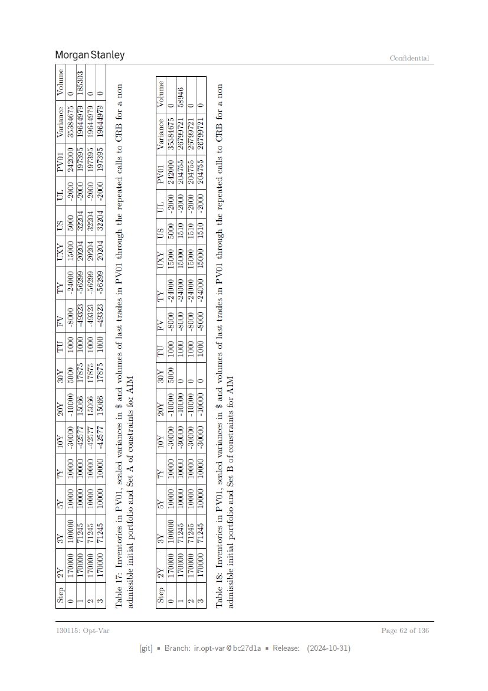
morgan stanley 機密
El le g
=| |e a
elelals| =
gees 9
2/2/83|8
sigisjs} 86
S
2
=lelele 2
cisisisle|
EISieisis| ==
a
SPSS] =
>
elelelel &
Sieg}
HISIS|S|S] 8=
Bays] 2g
slelekl =
130115: Opt-Var ページ62の130
[git] » 分岐: ir.opt-var @be27d1a » 発行: (2024年10月31日)
全文日本語訳

モルガン・スタンレー 機密
175,000
150,000
125,000
110,000
5 150,000
50,000
25,000
25,000
00 os 10 15 20 25 30
時間
図32: 不適切な初期ポートフォリオとセットBの制約条件を使用したCRBに対する繰り返し呼び出しにおけるPV01の在庫
5.2.3 稳定領域への収束
軌道の停止点が、セクション「- 稳定領域への収束」で特徴付けられた安定領域に属していることを確認します。以下は便利のために表のコスト列を再現したものです。セクション「- 稳定領域への収束」では、次の式で与えられる安定領域が証明されています。
d
S={qeTZ, WER
3 RY, —C < WVq—at
0-H + G—-&<C, (3° ‘— Hy) =0,
i=l
d
62(— Sa’ — Hi) =0, @i-a(Bi—4h) = 0, Vie 1,--- 4d, G(—Bi—4‘) =0, Wi L,--- ,d}.
i=1
この式は、軌道が制約条件に触れない場合、すなわち —B; < gi < Bj および —H < Y44q' < H のとき、以下のように単純化されます。
S={qeT, -C<2Eq-a<
Ch. (18)
前例の端点を考慮します。表 [I5]と表
SHTZ | BOBL | BUND | BUXL | OAT | BTS | BTP
最終位置 | 5,136 | 0 -1,536 | 5,818 -17,518 | -2,423 | 8,423
2\Xq 0.22 -0.08 | -0.077 | -0.06 | -0.12 | -0.30 | 0.0078
成本 C 0.22 0.17 0.08 0.1 0.12 0.3 0.15
表19: 表から例を使用して最終位置が安定領域に属していることをテストする
2024年10月31日：Opt-Var 第63ページ目／136ページ
全文日本語訳

モルガン・スタンレー 機密
SHTZ | BOBL | BUND | BUXL | OAT | BTS | BTP
最終ポジション | 4127 | 6585 -5258 | 8225 ~21203 | -2181 | 7501
2\Nq 0.22 0.14 -0.07 -0.045 | -0.12 | -0.30 | -0.04
Cost C 0.22 0.17 0.08 0.1 0.12 0.3 0.15
表20: 終了ポジションが安定領域に属するかどうかのテスト。例として、表から。
絶対値よりも関連コスト \(C_j\) が小さい。
5.2.4 取引継続性
ここでは数値的に、初期ポートフォリオが近い場合、その軌跡も近いことを示します。私たちは、開始ポジション \([5100, -12000, 35100, 11300, -29950, -10200, 7000]\) を取り、便利のために表22から始点 \([5000, -10000, 35000, 11000, -30000, -10000, 7000]\) を選びます。
ステップ | SHTZ | BOBL | BUND | BUXL | OAT | BTS BTP | PVO1 | 分散 | 成本
0 5100 | -12000 | 35100 | 11300 | -29950 | -10200 | 7000 | 6350 | 43251 0
10 5161 | -4284 | 6774 11300 | -21636 | -2044 | 8305 | 3576 | 2751 0
表21: PV01での在庫、スケーリングされた分散（ドル）と最後の取引のコスト（ドル）を示す Opt-Var の繰り返し呼び出しで \(\lambda = 2e^{-58}-1\)。
ステップ | SHTZ | BOBL | BUND | BUXL | OAT | BTS BTP | PVO1 | 分散 | 成本
0 5000 | -10000 | 35000 | 11000 | -30000 | -10000 | 7000 | 8000 | 40170 0
10 5029 | -4232 | 6781 11000 | -21347 | -2011 | 8302 | 3522 | 2673 0
表22: PV01での在庫、スケーリングされた分散（ドル）と最後の取引のコスト（ドル）を示す Opt-Var の繰り返し呼び出しで \(\lambda = 2e^{-58}-1\)。
5.2.5 CRB 取引継続性
私たちは近い開始ポジション
\([80000, 60000, 10000, 10000, -30000, -10000, 5000, 1000, -8000, -24000, 15000, 5000, -2000]\) と
\([81000, 60000, 9000, 10000, 30000, -11000, 5000, 1000, 8000, -25000, 15000, 6000, -2000]\) を取り、表で比較します。軌跡は非常に似ています。
[git] « 分岐: iropt-var@be27d1a = 発行: (2024-10-31)
130115: Opt-Var 第64頁共136頁
全文日本語訳

モルガン・スタンレー 機密
I Fd
Pea
ro}
oe
2)
2
|S 3
CI
2 CI
6 z é
C1
```text
Shelter |e me 2 he
シelter |e me 2 he
S\o[Zlole} <> Siz
S\o[Zlole} <> Siz
IF IISIF]
IF IISIF]
=3 Z|S| _ 1%& .> El
=3 Z|S| _ 1%& .> El
Dn n IF lofisjolo] A MI IBlolo| ®
Dn n IF lofisjolo] A MI IBlolo| ®
Pay
Pay
SISIZ|ZE
SISIZ|ZE
B28]
B28]
Z\ZAIS|SIB) =a
Z\ZAIS|SIB) =a
5 Slelalala
5 Slelalala
EEE]
EEE]
IZ|SISIS|
IZ|SISIS|
5
5
=a gheleeia|
=a gheleeia|
BISIAIRIA)
BISIAIRIA)
=ai] 2SIZIB IBIS 2i=)
=ai] 2SIZIB IBIS 2i=)
ZIAD |S |B BI |S Fa SlSIgigin
ZIAD |S |B BI |S Fa SlSIgigin
SIBSISIE} oOa Z|EISR/E|IR]
SIBSISIE} oOa Z|EISR/E|IR]
FRISIR =OS ISB Ele]
FRISIR =OS ISB Ele]
E|QISSIS| =oO LSaEIS
E|QISSIS| =oO LSaEIS
(SIS|S |S
(SIS|S |S
EIEIS|
EIEIS|
©
©
Elslsls]
Elslsls]
SIESSel =S E
SIESSel =S E
=Slelebs| e& FREFF 22 FRR) s2
=Slelebs| e& FREFF 22 FRR) s2
FISRIER) 3 S\ISISSis| S |Shopehe} S s a
FISRIER) 3 S\ISISSis| S |Shopehe} S s a
AJAPSISIS]| & EFS) = SiSpspes| = S|SiSh3h3) =
slsis|s| z= Perri
slsis|s| z= Perri
slelel s2 EISIEEle| =3 Elsie]
slelel s2 EISIEEle| =3 Elsie]
RISER) =
RISER) =
AlSiges| = sigisig|
AlSiges| = sigisig|
2 3
2 3
ER AIRR) 2 BRIER) £ siggis| £ eisigls| =
ER AIRR) 2 BRIER) £ siggis| £ eisigls| =
rook! peal baal pul
rook! peal baal pul
=@ preer| 2@ BRIAR]
=@ preer| 2@ BRIAR]
rprypeye
rprypeye
25 BISISIS) Pee
25 BISISIS) Pee
ae
ae
&°
&°
VISIS|S(R|
VISIS|S(R|
Is|SiS|z) 8 a a
Is|SiS|z) 8 a a
SISA
SISA
i Be] Ej=% SSSR)
i Be] Ej=% SSSR)
PSles feo fo} e=-S LISSEIE)
PSles feo fo} e=-S LISSEIE)
i fie |f
i fie |f
SiSpspeps) =
SiSpspeps) =
ER} selg|e|
ER} selg|e|
IAlSISiRis|
IAlSISiRis|
KSIZisl\s\S} = =&
KSIZisl\s\S} = =&
```
-ISISS]| = slelel 82 8
BEREE}
bal
=2
> GEBEE)2
BERRI] = EEE)
SEpssts| 2S= Elselele|
KIS s\sls| ==Ss
BESS}
iS Ss |S ~
Ss S
seis}
slgigg
(Selsey
== Slalele
Sissies}
=& sieisis|
=& slelels|
=
&
ER] 3. SPS BBB] 42
ERIBEIS] -(S\S|s|s)
ERRRIS| 82 ESBS)
SEE) =
TRIAS &
cla
skies
Rigg) cs miele aols
SIRS
oi
slelele|
z
==
S Is \o iS g
eiselele| = |S\BBIe| = I. S/S sie 8 | jsisigys}
EPIT IF) 32 FISISISIS]
Bs | YT
2% IEee |B\B\2\2)
| 472 IF |
|---|
2a Elzlelz/2|
Bu |? |? °)
=@
これらの式はOCRにより読み取られたものであり、原文のまま保持します。不明な部分や記号については可能な限り元の形式を維持しました。
```text
PISS} = lglelgie| = 5|gisigis| = lelslels] =
FIFI) 2 EISISEE) 2 FIF|FEIS) 2 FSES|E) 2
52 lohehel E= le 2E 2E
§ (Selig $ |S $ |S €
3
SiS le ie ie
oa fim | la la 3g
BB lololo }
SlSlelele z
lo a slolelo| = slelole| =
Sisisig}
SIS l\Ss « Slslele|
Sree « .|S|E(S/5|
S/S\sls « sigs]
ISIS ISS =
RITES]
S\|S falas) 3
2 EEIss\s|
IS |S S| 3
2 SIS|SlS|S|
RRR ] 8
= iS
RR FF]
J
2
sielek| & g elslels| £& elelele| =
SISK]
ISIS]
&3 Sickle}
(SPSS
2
hs] ==
S\SS\5|
e\sisele|
2= sigs
=\SIS|SIS| 3
EBRAR|
EF = ERISSS|
ERE =F |2 fF FF a ElR
Ell BRIS]
od vv vv em}
SEEE) 4& SEEE| =2 -EEELE| =8 SESE) =2
clelc|S a a s\sisis a = So|o o
```
RIS|S|SS} eelsisie} SIS|S|s| RISISIS|S|
slelekel] =a
é
a
elelele| =
sigisis
a
slelslcl =a
Sissi] = sigisig| = IS|S|S S| = IE SISIS| =
BISSISs} & BSS) & BIS|S\S\S| & Ble elel=) &
s a 2 e
elshohs| 2 hohahe| 2 shohehe} x Spspsps| ¢
SSISS) Sa SSS} 2s Sls is Bg Ba
-EERS|
B|ee\|s|5) 22
22 LESERl
(E|RRR| 2
£2 IEEE)
BSRRR) £22 SIRE]
FEPFER) BS
2S
B. oe 3. slslele] 2s
eglss| £= Sisjgis| 2 sisigis| 24 Sess) 2s
|SS\sisis
iS\s
IN |50 150 |6 |90
aan
ge
2 mISISIS IS
ISisicis
IN ]90 |90 |90 }o0
7 g
Sn
a4
BISiSislé
Sjsijsis
HIS isisis an
Poel
g Algklzle
I> |S lS sla Sn
gs
2
a 2s 5 2k a 2k S 2s
2
IAlolH|a|m| a2
= 8 2
In|jola|a|o| a2 8
ws z
JAlo|a|s|eo} 24 8
"a lB|o|4
Sse] a2
&
130115: Opt-Var ページ
65 of 13¢
[git] » 分岐: ir.opt-var @be27d1a » 発行: (2024年10月31日)
全文日本語訳

モルガン・スタンレー 機密
5.2.6 入来流を軌道に組み込む
Opt-Varによって生成されたヘッジ軌道に、ある点で入来流を含めます。ポートフォリオは依然として許容可能な領域へ収束します。
ステップ | SHTZ | BOBL | BUND | BUXL | OAT | BTS | BTP | PVO1 | 分散 | 成本
0 170,000 | 100,000 | 10,000 | 10,000 | -30,000 | -10,000 | 5,000 | 255,000 | 57,309,140 | 0
1 120,000 | 50,000 | 0 0 -30,000 | -10,000 | 0 130,000 | 2,054,098 | 22,050
2 70,000 | 0 -12,765 | -6,369 | -30,000 | -22,020 | -2,144 | -3,298 | 2,875,100 25,086
3 54,005 | 0 -4,424 | -16,792 | -74,244 | -51,634 | 7,164 | -85,925 | 7,049,480 16,947
30 5,790 0 -390 5,356 -23,758 | -2,945 | 13,783 | -2,164 | 3,319 0
表27: PV01での在庫、$でスケールされた分散、および非許容な初期ポートフォリオと不一致な制約条件と入来流を含むOpt-Varの繰り返し呼び出しを通じて最終取引のコスト。
SWZ
Bost
150,000
1,100,000
50,000
50,000
図33: 非許容な初期ポートフォリオと不一致な制約条件、およびステップ2以降の入来流を含むOpt-Varの繰り返し呼び出しを通じてPV01での在庫。
5.2.7 不能交易商品
取引が閉鎖された製品のシナリオを考慮します。SHTZが不能交易であると仮定し、他の取引可能な相関する製品でこの利用できない製品がヘッジされていることを確認します。
ステップ | SHTZ | BOBL | BUND | BUXL | OAT | BTS | BTP | PVO1 | 分散 | 成本
0 30,000 | 0 0 0 0 0 0 30,000 | 1,266,580 0
29 30,000 | -11,731 | 174 845 -17,297 | -8,910 | 3,289 | -3,630 | 45,905 0
表28: 不能交易のSHTZを含むOpt-Varの繰り返し呼び出しを通じてPV01での在庫、$でスケールされた分散、および最終取引のコスト。
130115: Opt-Var 第66頁／共136頁
[git] = 分岐: ir.opt-var@bc27d1a = 発行: (2024年10月31日)
全文日本語訳

モルガン・スタンレー 機密
30000 + et
20000
10000
図34：Opt-Varの繰り返し呼び出しで非取引可能なSHTZを通じてPV01での在庫
5.2.8 増加ポジション禁止。
位置増加を許可しないシナリオを考慮します。開始ポートフォリオは[30|と[16]と同じものとします。制約条件は満たされています：絶対値で見ても位置が増加することはありませんし、ゼロを超えることはありません。
40000
2 20000
20000
図35：増加ポジションを禁止したOpt-Varの繰り返し呼び出しでPV01での在庫。
5.3 感応度分析
同じ議論を使用して、セクション末尾で使用されたものと同様に、定理6.11 [IU]から、Opt-Var問題の解は問題パラメータに対して連続的です。その結果、近接
2024年10月31日リリース: (git) « 分岐：iropt-var@be27d1a = 释出版本：(2024-10-31)
[git] « Branch: iropt-var@be27d1a = Release: (2024-10-31)
全文日本語訳

モルガン・スタンレー 機密
パラメータの値は近いヘッジを生成し、したがってポートフォリオの軌跡も近くなります。このセクションでは、システムが各パラメータに対する感度を示します。初期位置を考慮します。
SHTZ | BOBL | BUND | BUXL | OAT | BTS BTP
5000 | -10000 | 35000 | 11000 | -30000 | -10000 | 7000
表29: 初期在庫（PV01）。
「分析はEU製品を使用して行われ、US製品の最適化問題には無限 horizon 成本を考慮しない場合について示します。表5.3.1に示すクライアントリスクから。
5.3.1 リスク回避パラメータの影響
無限 horizon 成本を考慮しない場合におけるリスク回避パラメータAの効果について分析を行います。Aの値を[le-7, 1e-3]/€で示し、無限 horizon 成本を考慮しないためI = 0とします。3.3.3節で述べたように、\ の選択はポートフォリオが収束する安定領域に直接影響を与えます。\の値が大きいほど最終的なポートフォリオと分散が小さくなります。これは以下の図で確認できます。また、\ とともに実行量も増加し、総コストも上昇します。リスク回避が大きければ、図37および図[ ]ではポートフォリオは許容領域に移動し、その後一定の状態になります。
20000
0000
20000
30000
1 10 To 1 o>
図36: 初期ヘッジ注文（PV01）がA、リスク回避パラメータの関数として。
2024年10月31日リリース: [git] « 分岐:iropt-var@be27d1a = (2024-10-31)
全文日本語訳

モルガン・スタンレー 機密
30,000
20,000
20,000
30,000
1 10 To 1 o>
図37: Opt-Varの繰り返し呼び出しによるPVO1の最終在庫がリスク回避パラメータAの関数として変化する。
CRBの場合、制約セットAにおいて図[38]から、1が増加すると軌道終点も小さくなります。制約セットBでは、解は\1に対して非常に感受性がないことが図[39]から明らかです。図[40]と図[41]では、クライアントのリスク回避によりクライアントのリスク削減が優先される逆効果を確認できます。図[42]と図[43]では、AIMのリスク回避\はこの例では解に対して感受性がないことが示されています。
7Pe eeece,esseqeegre=:
Le
pad
ban
rer
pee ZL
pa
pad oe
40,000 Baa
=o]
ous
50,000 4 —* UL
10 1077 10 10
図38: CRBの制約セットAにおけるCRB AIMのリスク回避パラメータ\1が変化するときの最終在庫PVO1。
2024年10月31日リリース: iropt-var@be27d1a
[git] « 分岐:iropt-var@be27d1a = 2024-10-31
全文日本語訳

Morgan Stanley 機密
2000 ae
oY
oY
6000 ae
i ne “= 10
+ 207
3 000 ~e 3ov
8 =
© 20m ay
z oY
a ux
z She us
> =u
2 2000
H
4000
6000
2000
To To To pd
図39: CRBの繰り返し呼び出しにおけるPVO1の期末在庫がCRB AIMのリスク回避パラメータ\1に従って変化する関係。制約セットBを使用。
30000
seo as
10000 senteesses
gol.
z = on |,
oF
a oY |#222 2 |
-20000 4 -— sv
2 ae
3 Stor
§ ~20000 4 5 2oy
i = 30
30000 “$=
aayTH aa"
40000 fe UxY
50000
1 To To To
図40: CRBの繰り返し呼び出しにおけるPVO1の期末在庫がクライアントのリスク回避パラメータ\sに従って変化する関係。制約セットAを使用。
2023年11月15日: Opt-Var 第70ページ目／136ページ
[git] « 分岐: iropt-var@be27d1a = 発行: (2024年10月31日)
全文日本語訳

モルガン・スタンレー 機密
2000 oY
oy
5y
000 ae
~, tov
—e 20v
= 4000 “S 30v
g “ou
& 2000 At wv
z ———< AS
3 = uw
zo “Sus
> uw
2 2000
~ 4000
6000
2000
To 7 ed ni
図41: CRBへの繰り返し呼び出しを用いたPVO1の最終在庫が\s、クライアントリスク回避パラメータの関数として表示。
30000
20000
10000
z ae
a Oye ay
z ay
5 Pa
3 20000 | -2- 10
i a
i = aor
20000 | -*- TU
Sv
pay
acon | 2 UY
us
eu
rad ri Fo ws
図42: CRBへの繰り返し呼び出しを用いたPVO1の最終在庫がA、AIMリスク回避パラメータの関数として表示。
130115: Opt-Var 第71ページ目／136ページ目
[git] « 分岐: iropt-var@be27d1a = 発行: (2024年10月31日)
全文日本語訳

モルガン・スタンレー 機密
2000 oY
ae)
-o5Y
6000 1
-e 10v
“e207
© 30v
“Tu
ae
oY
= uxr
ous
eu
10 107 10 10
図43: Aのリスク回避パラメータと制約セットBを使用したCRBを繰り返し呼び出すことでPVO1での最終在庫。
5.3.2 リスク回避パラメータによる影響 无限期コストの場合
) の値を [le-7, 1e-3]/€で示すことでリスク回避の効果を示します。現在 J =1 を使用し、無期限コストを使用します。行動は前節と似ていますが、無期限コストでは最初のヘッジと最終ポジションが A の単調関数となります。グラフはオーバーシュートが少なく、滑らかです。
20000
30000
ie To Te Te To
図44: PVO1での最初のヘッジ注文とA（リスク回避パラメータ）との関係。
2024年10月31日リリース: (git) « 分岐:iropt-var@be27d1a = 本番:(2024-10-31)
全文日本語訳

モルガン・スタンレー 機密
30,000
20,000
20,000
30,000
1 10 To 1 o>
図45: Opt-Varの繰り返し呼び出しによるPVO1を通じた最終在庫の変動。これはA、リスク回避パラメータの関数です。
5.3.3 コストパラメータの影響
まず、コストベクトルC = LCの倍数を考慮します。ここでのLは[0, 10]の範囲で変化します。如実に述べたように、Cの選択はポートフォリオが収束する安定領域に直接的な影響を与えます。Cの値が大きいほど最終的なポートフォリオと分散も大きくなります。これは以下の表と図で確認できます。コストがゼロの場合、在庫はゼロに収束します。L = 0のとき図から確認できます。安定領域は空の在庫に収束するためです。一方、コストが大きい場合、ヘッジは非常に費用がかかりますので、全くヘッジを行わないことが図[46]と図[47]で示されています。次に、BUND先物のコストを固定した他のパラメータに対して、乗数N [0, 10]の範囲で変化させます。BUNDのコストがゼロの場合、図[19]ではモデルはほぼBUNDポジションを清算し、その結果、他の製品へのヘッジが少ないです。一方、Nが大きい場合、システムはSHTZへのヘッジを避ける傾向があり、他の製品に対する注文量を増やすことで補偿します。
130115: Opt-Var 第73ページ／136ページ
[git] 「分岐:iropt-var@be27d1a = 発行:(2024-10-31)
全文日本語訳

モルガン・スタンレー 機密
‘5000
5000
15000
20000
25000
図46: PV01における最初のヘッジ注文がL（コストベクトルの前にある乗数）の関数として表示されています。コストベクトルはT= LCで与えられ、C = (0.22 0.17 0.08 0.1 0.12 0.3 0.15)。
30000 | -e= surz
epost
2 BUND
se Buxt
20000} 9 oT
-e ots
= oP
—je—2—2 | oo 2 of 2 0 op
20000
図47: Opt-Varの繰り返し呼び出しを通じて最終的な在庫がPV01としてLZ（£コストベクトルの前にある乗数）の関数として表示されています。コストベクトルはC = LCで与えられ、C = (0.22 0.17 0.08 0.1 0.12 0.3 0.15)。
2021年11月15日: Opt-Var ページ74の136
[git] 「分岐:iropt-var@be27d1a = 発行:(2024-10-31)
全文日本語訳

モルガン・スタンレー 機密
5000
5000
15000
20000
図48: PV01における最初のヘッジ注文がN（BUNDコストの乗数）の関数として表示される。
コストベクトルは (0.22 0.17 0.08+N 0.1 0.12 03 0.15)。
e sHTz
epost
20000 -e BUND
oe Bux
© ont
e BTs
© 5p
20000
図49: Opt-Varを繰り返し呼び出しによって得られる最終的な在庫がN（BUNDコストの乗数）の関数として表示される。
コストベクトルは (0.22 0.17 0.08%N 0.1 0.12 03 0.15)。
CRBの場合、図で示すように、制約セットAに対してコストベクトルに対するわずかな依存性が見られます。この例では、2Yコストに対する独立性があります。
当然、制約セットBはコストに依存せず、図[52]および
130115: Opt-Var ページ75の136
[git] 「ブランチ:iropt-var@be27d1a = リリース:(2024-10-31)
全文日本語訳

```text
モルガン・スタンレー 機密
30,000
20,000
10,000
z “eo
BOF 6 ay
z -e 5y
7
5 -10,000 + -e- 107
5 e207
z = 307
20,000 |e TU
“ew
1
30,000 $= es UY
UL 889998888
00 o2 a O6 oe 10
図50: CRBを繰り返し呼び出しするときの最終在庫（PV01）がL、コストベクトルの前にある乗数の関数として表示。Set A の制約条件を使用しています。コストベクトルはC = LCで与えられ、C = 0.08 * np.ones(13)。
8,000 ey
“oy
+ 5y
6,000 ae
“10
4,000 + 20
© 307
8z wu
= 2,000 ev
= oY
a = ue
z ous
= uw
2 -2,000 “+
z 4,000
6,000
2,000
00 02 v7 06 08 ro
図51: CRBを繰り返し呼び出しするときの最終在庫（PV01）がL、コストベクトルの前にある乗数の関数として表示。Set B の制約条件を使用しています。コストベクトルはC = LCで与えられ、C = 0.08 * np.ones(13)。
130115: Opt-Var ページ76の136
[git] « 分岐: iropt-var@be27d1a = 発行版: (2024年10月31日)
```
全文日本語訳

モルガン・スタンレー 機密
30000
20000
“eo
oy
-e 5y
7
“2 10r
e207
= 307
=
“ew
1
30000 - uxy
es
eu 4-4 +
00 02 oe o6 oe 10
図52: CRBの繰り返し呼び出しによるPVO1の最終在庫がN、2Yコストの乗数を関数として変化する関係。Set Aの制約を使用した場合。
8000 ey
oy
5y
6000 ay
= toy
e207
© 307
Tu
aa
=
eo uxr
= us
eu
oo 02 oe o6 oe To
図53: CRBの繰り返し呼び出しによるPVO1の最終在庫がN、2Yコストの乗数を関数として変化する関係。Set Bの制約を使用した場合。
5.3.4 二次コストパラメータの影響
まず、二次コストベクトルM = KM + ;Ajdiag(X)の倍数を考えます。Kは[0,10]の範囲です。二次コストが大きいほど小さなステップとなり、これは図からもわかります。その結果、収束にはより多くの反復が必要となります。K = 0の場合、安定したポートフォリオは3回の反復で達成されます；K = 10の場合には40回のステップが必要です。二次コストを変更しても最終在庫がほとんど変わらないことに注意します。図[55]からも確認できます。次に、BUND先物の最初の二次コストMoに対して乗数U [0,10]で乗算し、他のパラメータは固定します。
2024年10月31日時点: Opt-Var 第77頁／共136頁
[git] 「分岐: iropt-var@be27d1a = 発行版: (2024-10-31)
全文日本語訳

モルガン・スタンレー 機密
そのような挙動も観察しました。これは図 [56] および図 57 で示されています。このパラメータは主に収束速度を制御しますが、終点には影響を与えません。これは第 - 收敛到稳定区域部分で証明され、そこでは安定区域がマルティプライヤーに依存しないことを示しました。
図 54: PV01 の最初のヘッジ注文は K（二次コスト行列前の乗数）の関数として表示されます。二次コスト行列は M = KM + ;Apdiag(Z) を満たし、M = diag(1740, 610, 397, 996, 961, 4846, 1699)。
図 55: PV01 の最終在庫は Opt-Var を繰り返し呼び出すことで K（二次コスト行列前の乗数）の関数として表示されます。二次コスト行列は MW = KM + 7Apdiag(Z) を満たし、M = diag(1740, 610, 397, 996, 961, 4846, 1699)。
130115: Opt-Var ページ 78 of 136
[git] 「ブランチ: iropt-var@be27d1a = リリース: (2024-10-31)
全文日本語訳

モルガン・スタンレー 機密
図56：PVO1における最初のヘッジ注文がU（BUNDの二次コストに対する乗数）の関数として表示されています。二次コスト行列はM = M + Ajdiag(S)で確認され、M = diag(1740, 610, 397 « U, 996, 961, 4846, 1699)。
0000 ee
— —
5000
Se surz
epost
-e- BUND
Se But
“eon
20000 4 -e- ers,
a ae ee ee = eel
図57：Opt-Varを繰り返し呼び出しでPVO1の終了在庫がU（BUNDの二次コストに対する乗数）の関数として表示されています。二次コスト行列はM = M + ppdiag(S)で確認され、M = diag(1740, 610, 397 « U, 996, 961, 4846, 1699)。
5.3.5 @シグナルの効果
@パラメータが非ゼロで[-0.3, 0.3]の範囲内である場合、SHTZ先物についてのみ考慮します。図から見ると、SHTZの終了ポジションは@が増加するにつれて増加します。他の製品のポジションも減少しますが、その効果は小さいです。最初のヘッジ注文はSHTZに対してのみ影響を受けます。CRBについては2Y債券に対するこのアルファを考慮します。OptVarと同様の効果がありますが、Setに関しては異なります。
130115: Opt-Var 79 of 136
[git] « 分岐：iropt-var@be27d1a = 発行版： (2024-10-31)
全文日本語訳

モルガン・スタンレー 機密
ボックス制約はアルファに全く依存しないものである。
000
° poss, aaa
5 == siz
g “Soot
2 so “= euno
So
i4 =e aux
So
i oo ats
eon
= _ 10000
~1s000
20000
a a. 00 oF 08 oS
図58: PV01での最初のヘッジオーダーが価格シグナルay（SHTZの価格）にどのように依存するか。
10000
5000 eet
go
z te
2 som Prtrertee ele ete ole |
25 10000
z Ae surz
epost
250007 pun
Se BUXL
200004 TES
3 OFT eee ee
e eTP ete et
“3 “2 aa oo on o2 03
図59: Opt-Varの繰り返し呼び出しにより生成された最終的な在庫が価格シグナルa（SHTZの価格）にどのように依存するか。
130115: Opt-Var ページ80の136
[git] « 分岐: iropt-var@be27d1a = 発行: (2024年10月31日)
全文日本語訳

モルガン・スタンレー 機密
30000 =
, peseeeesereee eet
10000
aad
e yew
g ey
3 ee een
> -20000 ae7-5 soy
iH e207
z = 30
20000 Fe Tu
aay
aa
30000 | “e uxe
+ us
eu ae a aoe
“03.2 00 on 02 03
図60: CRBの繰り返し呼び出しによるPV01の最終在庫が価格信号a（2Yの価格信号）の関数として表示される効果。
000 =a
Th
6000
pay
7
paaty
4000 Sy
30
2g 7
& 200 aay
2 oY
Byz ee
Sos
> oar
LMA ZaESEEecEEueeteeasesl
© 4000
sooo
200
図61: CRBの繰り返し呼び出しによるPV01の最終在庫が価格信号a（2Yの価格信号）の関数として表示される効果。
5.3.6 共分散行列の影響
共分散行列における分散と相関の効果を分解するために、共分散行列を積分として書き表します。
130115: Opt-Var Page 81 of 136
[git] « 分岐: iropt-var@be27d1a = 発行: (2024年10月31日)
全文日本語訳
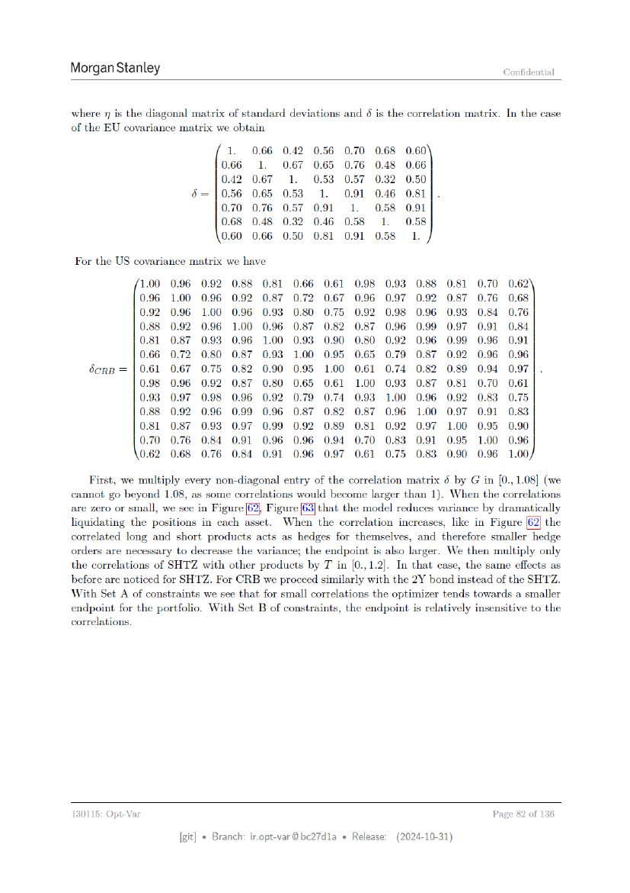
morgan stanley 機密
式で、77は標準偏差の対角行列であり、6は相関行列です。EUの共分散行列の場合、
```
1.00 0.66 0.42 0.56 0.70 0.68 0.60
0.66 1.00 0.67 0.65 0.76 0.48 0.66
0.42 0.67 1.00 0.53 0.57 0.32 0.50
0.56 0.65 0.53 1.00 0.91 0.46 0.81
0.70 0.76 0.57 0.91 1.00 0.58 0.91
0.68 0.48 0.32 0.46 0.58 1.00 0.58
0.60 0.66 0.50 0.81 0.91 0.58 1.00
```
米国の共分散行列の場合、
```
1.00 0.96 0.92 0.88 0.81 0.66 0.61 0.98 0.93 0.88 0.81 0.70 0.62
0.96 1.00 0.96 0.92 0.87 0.72 0.67 0.96 0.97 0.92 0.87 0.76 0.68
0.92 0.96 1.00 0.96 0.93 0.80 0.75 0.92 0.98 0.96 0.93 0.84 0.76
0.88 0.92 0.96 1.00 0.96 0.87 0.82 0.87 0.96 0.99 0.97 0.91 0.84
0.81 0.87 0.93 0.96 1.00 0.93 0.90 0.80 0.92 0.96 0.99 0.96 0.91
0.66 0.72 0.80 0.87 0.93 1.00 0.95 0.65 0.79 0.87 0.92 0.96 0.96
0.61 0.67 0.75 0.82 0.90 0.95 1.00 0.61 0.74 0.82 0.89 0.94 0.97
0.98 0.96 0.92 0.87 0.80 0.65 0.61 1.00 0.93 0.87 0.81 0.70 0.61
0.93 0.97 0.98 0.96 0.92 0.79 0.74 0.93 1.00 0.96 0.92 0.83 0.75
0.88 0.92 0.96 0.99 0.96 0.87 0.82 0.87 0.96 1.00 0.97 0.91 0.83
0.81 0.87 0.93 0.97 0.99 0.92 0.89 0.81 0.92 0.97 1.00 0.95 0.90
0.70 0.76 0.84 0.91 0.96 0.96 0.94 0.70 0.83 0.91 0.95 1.00 0.96
0.62 0.68 0.76 0.84 0.91 0.96 0.97 0.61 0.75 0.83 0.90 0.96 1.00
```
まず、相関行列の非対角要素をG [0., 1.08]で乗算します（1.08を超えることはできません）。相関がゼロまたは小さい場合、図（62）、図[63]ではモデルは各資産のポジションを大幅に清算することで分散を減少させます。相関が増加する場合、図で長期と短期製品が自己ヘッジとなるため、分散を減少させるためにはより小さなヘッジ注文が必要になり、エンドポイントも大きくなります。次に、SHTZとの他の製品の相関をT [0., 1.2]で乗算します。その場合、以前と同様の効果がSHTZにも見られます。CRBについては、2Y債券を使用して同じ手順を実行します。制約セットAの場合、相関が小さいとき、最適化はポートフォリオのエンドポイントに対して小さな値に傾きます。制約セットBの場合、エンドポイントは相関に対して比較的不感です。
2024年10月31日: Opt-Var ページ82の136
[git] 「分岐:iropt-var@be27d1a = 発行:(2024-10-31)
全文日本語訳

モルガン・スタンレー 機密
eo siz
=e soe.
20000 -e euND
paar
= om
=
10000 aa
z
rar)
&
20000
” eee
oo 08 oe o8 os To
6
図62: PVO1における最初のヘッジ注文が相関行列の前に乗算子Gを持つときの関数。相関行列はGéになります。ここで、6は上記のとおりです。
10000
oo o2 on os oe To
図63: PVO1における最終的な在庫がOpt-Varを繰り返し呼び出すときの関数。相関行列はG6になります。ここで、5は上記のとおりです。
2021年10月15日: Opt-Var ページ83の136
[git] « 分岐:iropt-var@be27d1a = 発行:(2024-10-31)
全文日本語訳

モルガン・スタンレー 機密
10,000
‘5,000
20,000
Se surz
e BoeL
“2 BUND
15,000 Ae But
-e ont
eats 0 oo oo
20,000 | ®- BT?» 0-209 |-9 9 -9- -e 00-0
00 o2 oa O6 oe 10 12
図64: PVO1における最初のヘッジ注文がT（SHTZと他の製品間の相関係数に先行する乗数）の関数として表示。相関行列はTdとなり、6が上記の通りです。
4
20,000
5,000
g: 0 SSS SSS SS
% ~5,000
2 -10,000
E ~15,000 | -e- sHTZ
epost
2 BUND
20,000} 9 BUXL
e oar
25,004 e2 Ere
eTP
00 02 oe 06 08 vo 1
T
図65: PVO1における最終的な在庫がOpt-Varの繰り返し呼び出しの関数としてT（SHTZと他の製品間の相関係数に先行する乗数）で表示。相関行列はTdとなり、6が上記の通りです。
2023年11月15日: Opt-Var ページ84の136
[git] 「分岐:iropt-var@be27d1a = 発行:(2024-10-31)
全文日本語訳

図66：CRBを繰り返し呼び出しするGの関数としてPVO1の最終在庫。ボックス制約のセットAを使用した相関行列の前にある乗数です。相関行列はGécrpになります、dcrpは上記の通りです。
8000
6000
4000
2000
0
図67：CRBを繰り返し呼び出しするGの関数としてPVO1の最終在庫。ボックス制約のセットBを使用した相関行列の前にある乗数です。相関行列はGécrpになります、dcrpは上記の通りです。
130115: Opt-Var ページ85 của 136
[git] 「分岐：iropt-var@be27d1a = 発行：(2024-10-31)
全文日本語訳

モルガン・スタンレー 機密
30,000 |e Oe ee Ee ee
20,000
aed
oy
2.5y N\
ae
“e 10y
“e207
“e307
=)
“ew
30,000 f -*- TY
= uxe
-e us
40,000 4-2 UL
00 o2 a 06 oe 10
図68: PVO1の終了在庫がCRBへの繰り返し呼び出し関数としてT、Set Aの制約条件における他の製品との相関係数乗数の前後の変化。相関行列は上記のdcppでTégrgになります。
8,000 ey
aS)
by
7
-e toy
e207
© 30Y
Tu
ae
oY
-e uxr
“ous
eu
oo o2 on 6 oe To
図69: PVO1の終了在庫がCRBへの繰り返し呼び出し関数としてT、Set Bの制約条件における他の製品との相関係数乗数の前後の変化。相関行列は上記のdcrpでTécreになります。
5.4 ベンチマーク
取引書のリスクをヘッジする最も基本的なアプローチとして、各ヘッジバケットにおいて実行コストやポートフォリオリスク配分を考慮せずにポートフォリオリスクを0に保つ方法があります。この素朴なアプローチを使用してベンチマークモデルとOpt-Varモデルのパフォーマンスを比較します。テストは、説明した例とパラメータを使用して実施されます。
2024年10月31日リリース: iropt-var@be27d1a = [git] « 分岐: (2024-10-31) 130115: Opt-Var ページ86の136
全文日本語訳

モルガン・スタンレー 機密
5.1.1節において
オプティマイズされた変動性（Opt-Var）モデルを使用してヘッジする目的は、ポートフォリオ分散、取引コスト、アルファキャッチのトレードオフをバランスさせるために、定義された目標関数を最小化することです。したがって、ヘッジ実行後の目標関数値を指標として使用し、シンプルなヘッジ戦略によるヘッジ後の目標関数値と比較することで、Opt-Varによるヘッジ後の目標関数値は異なるリスク回避パラメータ（\）の値に対して常にシンプルなヘッジ戦略よりも小さいことを示します。私たちは0から2e-4まで、それぞれle-6で増加する\の値をテストしました。これは生産環境で使用する範囲と一致しています。
図[70]は、オプティマイズされたヘッジ（Opt-Var）とシンプルなヘッジ戦略による異なる\の値に対する目標関数値の比較を示しています。青い線はOpt-Varヘッジャーの値を、オレンジ色の線はシンプルなヘッジ戦略の値を表します。プロットによると、Opt-Varの\値が増加するにつれて最適な目標関数値も増加しますが、それは常にオレンジ色の線（シンプルなヘッジ戦略によるヘッジ後の目標関数値）の下にあります。これは、Opt-Varモデルがすべての異なる\の値に対してベンチマークヘッジ戦略を上回っていることを証明します。また、目標関数の各部分の値も確認しました。
図[7]は、オプティマイズされたヘッジ（Opt-Var）とシンプルなヘッジ戦略によるヘッジ後のポートフォリオ分散を示しています。シンプルなヘッジ戦略のポートフォリオ分散は0であり、常にリスクを完全にヘッジします。Opt-Varによるヘッジ後のポートフォリオ分散は\値が増加するにつれて減少し、より大きな\値を持つほどリスク回避的になるため、Opt-Varはさらにポートフォリオ分散を低減するために更多的なヘッジを実行します。
図[7]は、\値によって調整された分散コスト値（Varg）を示しています。これはヘッジ後のポートフォリオ分散と与えられた\値の積です。これにより、選択したリスク好戦性に基づいたポートフォリオ分散が調整されます。最後に、図[7]は、ヘッジ実行時の取引コスト項（Cost）を示しています。Opt-Varによる取引コスト項はシンプルなヘッジ戦略よりも常に小さいため、Opt-Varは少ない、小さなヘッジを実行します。Opt-Varの小さな取引コストが与えられた\値に対する追加のポートフォリオ分散コストを補填し、全体としてOpt-Varを使用することで目標関数値が小さくなり、より有利になります。
7000.
— Opt-Varヘッジャー
°. — シンプルなヘッジャー
ry 35 30 75 160 us 10 Ft 260
» x10
図70：異なるリスク回避パラメータ（\）の値に対するオプティマイズされたヘッジとシンプルなヘッジ戦略によるヘッジ後の目標関数値の比較。目標関数はFとして表現され、セクションで説明されています。
2024年10月31日リリース：iropt-var@be27d1a = (2024-10-31)
130115: Opt-Var 87ページ目/136
全文日本語訳

モルガン・スタンレー 機密
108
as — optvar ヘッジャー
— simple ヘッジャー
520
21s
2 10.
z os
00
ry % 30 % 160 us wo 5 250
» x10
図71: リスク回避パラメータ \ の異なる値を使用してヘッジした後のポートフォリオ分散の比較。Opt-Varと単純なヘッジ戦略。
— optivar ヘッジャー
1750. — Simpie ヘッジャー
1500.
S ras0.
5 000.
8 750
250
o 2 30 7 100 us 150 us 200
» x10
図72: リスク回避パラメータ \ の異なる値を使用してヘッジした後の分散コストの比較。分散コストはセクションで説明されているように Vary によって与えられます。
7000
6000
3 5000
§ 4000
43000
© 2000
1000
— optvar ヘッジャー
° — Simple ヘッジャー
3 35 30 % 360 as Ft} 5 280
> x10
図73: リスク回避パラメータ \ の異なる値を使用してOpt-Varと単純なヘッジ戦略による取引コストの比較。取引コストはセクションで説明されているように Costy によって与えられます。
130115: Opt-Var 第88ページ目/136ページ
[git] « 分岐: iropt-var@be27d1a = 発行: (2024年10月31日)
全文日本語訳
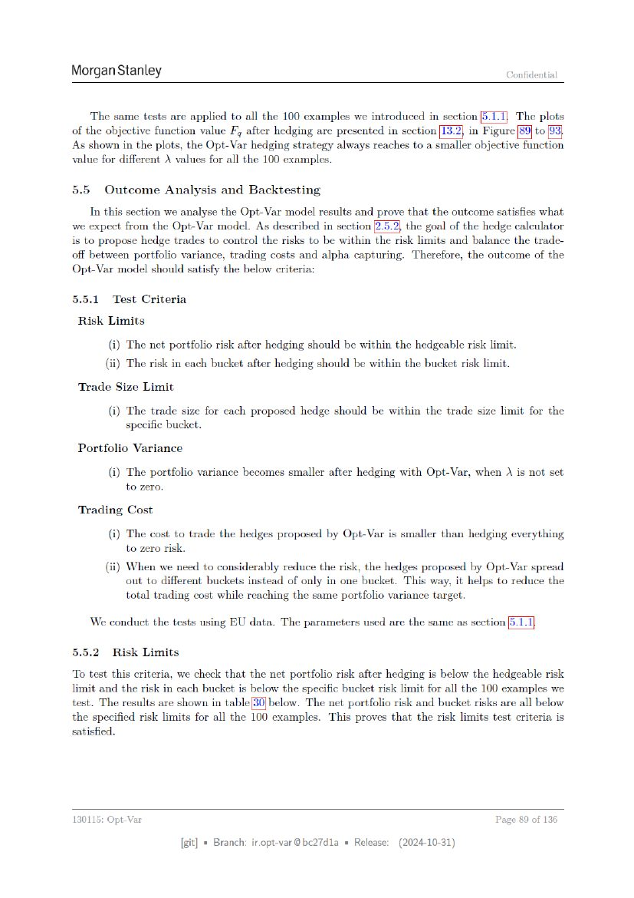
モルガン・スタンレー 機密
すべての100例について適用したテストは、セクション[13.2]で図[I39]から[I43]に示すオブジェクト関数値Fのプロットから説明します。これらのプロットによれば、Opt-Varヘッジ戦略は異なるA値に対してすべての100例についてより小さなオブジェクト関数値へと収束しています。
5.5 結果分析とバックテスト
このセクションでは、Opt-Varモデルの結果を分析し、期待されるOpt-Varモデルの出力を証明します。セクション[13]で説明したように、ヘッジ計算機の目標はリスクをヘッジしてリスク制限内に保ちつつ、ポートフォリオ分散、取引コスト、アルファキャッチングとのトレードオフを調整することです。したがって、Opt-Varモデルの出力は以下の基準を満たすべきです：
5.5.1 テスト基準
リスク制限
(i) ヘッジ後のネットポートフォリオリスクはヘッジ可能なリスク制限内に収まる。
(ii) 各バケットでのリスクは特定のバケットリスク制限内に収まる。
取引量制限
(i) 提案された各ヘッジの取引量は、特定のバケットに対する取引量制限内に収まる。
ポートフォリオ分散
(i) Opt-Varを使用してヘッジした後、Aがゼロでない場合、ポートフォリオ分散が小さくなります。
取引コスト
(i) Opt-Varによって提案されたヘッジの取引コストは、リスクをゼロにすることよりも小さい。
(ii) リスクを大幅に減らす必要がある場合、Opt-Varによって提案されたヘッジは異なるバケットに分散し、これにより総取引コストが減少しながら同じポートフォリオ分散目標を達成します。
EUデータを使用してテストを行いました。使用したパラメータはセクション[5]と同じです。
5.5.2 リスク制限
この基準をテストするために、ヘッジ後のネットポートフォリオリスクがヘッジ可能なリスク制限以下であり、各バケットのリスクが特定のバケットリスク制限以下であることを確認します。100例全てについてテストした結果は表B0に示されています。すべての100例において、ネットポートフォリオリスクとバケットリスクは指定されたリスク制限以下です。これにより、リスク制限テスト基準が満たされていることが証明されます。
2024年10月31日リリース: iropt-var@be27d1a
130115: Opt-Var 第89ページ/136ページ
全文日本語訳

モルガン・スタンレー 機密。
以下 指定リスク制限未満
真実 偽
ネット ポートフォリオリスク | 100 0
SHTZ 100 1)
BOBL 100 0
BUND 100 0
BUXL 100 0
OAT 100 0
BTS 100 1)
BTP 100 0
表30: 取引後、指定リスク制限未満のリスクカウント
5.5.3 取引量制限
この基準をテストするために、私たちは取引量がすべての100例で指定された取引量制限以下であることを確認しました。表[31]は結果を要約しています。テーブルによれば、すべてのバケットの取引量はすべての100例で取引量制限以下です。これにより、取引量制限基準が満たされていることが確認されました。
以下 指定取引量制限未満
真実 偽
SHTZ 100 0
BOBL 100 0
BUND | _ 100 0
BUXL | 100 0
OAT 100 0
BTS 100 0
BTP 100 0
表31: Opt-Varヘッジ取引量が指定制限未満のカウント
5.5.4 ポートフォリオ分散
このテストでは、Opt-Var提案されたヘッジを取引した後のポートフォリオ分散が異なる非ゼロ \ 値に対して常に元のポートフォリオ分散よりも小さいことを証明します。図[?4]は初期ポートフォリオPV01 {SHTZ, BOBL, BUND, BUXL, OAT, BTS, BTP} = {-981.47, 6405.88, -21370.15, 7235.52, -1203.48, 629.40, -1203.48} の特定の例での比較を示しています。水平軸は \ 値が 1e-6 から 2e-4 まで、毎回 1e-6 の増加で表示されます。垂直軸はポートフォリオ分散値を示します。青い線は異なる A 値での Opt-Var提案されたヘッジ後のポートフォリオ分散値を示し、オレンジの線はどのヘッジも取引していない場合のポートフォリオ分散値を示します。図に示すように、Opt-Varヘッジ後のポートフォリオ分散は常にヘッジなしの場合よりも小さいです。セクション内の100例全てについて同じ図を図[?4]で示しています。私たちは Opt-Varヘッジ後のポートフォリオ分散がすべての100例でヘッジなしの場合よりも小さく、ポートフォリオ分散テスト基準を満たしていることを確認しました。
130115: Opt-Var 90 of 136
[git] « 分岐:iropt-var@be27d1a = 発行:(2024-10-31)
全文日本語訳

morgan stein 機密
18
25
— optivar Hedger
00. — NoHedge
o 25 50 75 100 ws 150 us 200
» x10
図74: ポートフォリオ分散値の比較。Opt-Varを使用したヘッジとノーヘッジとの差異は、異なるリスク回避パラメータ \ の値によって行われました。
5.5.5 取引コスト
取引コスト基準（1）を満たすことを証明するために、目的関数|I|における取引コスト項 Costy = C"|u|-+u' Mu の値を見ます。Opt-Var提案のヘッジと単純な全リスクゼロヘッジ戦略の取引コストを比較します。具体的な例については、セクションで既に比較が行われています。図[99]から図[103]は、付録[13.3.2]セクションで100の例について同じプロットが示されています。Opt-Var提案のヘッジの取引コスト項の値は、全リスクをゼロにすることを考えた単純なヘッジ戦略よりも常に小さいことが示されています。これは、すべての100の例でOpt-Var結果が取引コスト基準（i）を満たすことを示しています。
取引コスト基準（ii）を満たすことをテストするために、特定のバケットでの大量ポジション増加に対するOpt-Var提案の取引を見ます。具体的には、特定のバケットの初期ポジションを25000 PV01に設定し、他のバケットの初期ポジションを0に保ちます。セクションで説明した生産パラメータを使用してテストを行います。このパラメータ設定では、25,000 PV01はヘッジ可能なリスク制限10,000 PV01を超える大量のポジション増加です。ポートフォリオ分散を最小化する単純なヘッジ戦略は、初期ポジションがゼロでない特定のバケットにのみヘッジを提案します。しかし、一つの製品での大量の取引コストは prohibitive になることがあります。このような場合、Opt-Varは異なるバケットにヘッジを提案し、取引コストを減らしながら同じレベルのポートフォリオ分散を達成します。
図[75]は、特定の \ 値から0までのBuxlバケットでの25,000 PV01ポジション増加に対するOpt-Var提案の取引を示しています。プロットからは、Opt-Varは \ の値が大きいとき特に大きなサイズでBuxlに取引を提案します。しかし、同時に一定量のBUND、OAT、およびBTP契約にも取引を提案します。図[76]では、Opt-Var提案の取引と単一製品（初期ポジションがゼロでない）での取引コストを比較しています。水平軸は取引後のポートフォリオ分散、垂直軸はセクションで説明した目的関数Costy項の値です。青い線はOpt-Varヘッジャーの取引コストを示し、オレンジ色の線は単純な戦略（Buxlのみを取引）の取引コストを示します。プロットによると、同じレベルのポートフォリオ分散を達成するために必要な取引コストが比較されます。
2024年10月31日時点: Opt-Var 第91ページ目
[git] 「ブランチ:iropt-var@be27d1a = リリース:(2024-10-31)
全文日本語訳

モルガン・スタンレー 機密
ポジションごとの分散が低い場合、Opt-Var ヘッジャーは常に取引コストが小さい。これは Opt-Var モデルが取引コスト基準 (ii) を満たしていることを示唆する。また、EU の他のヘッジバケットでも同様のテストを実施した。結果は [13.3.2] セクションで提示されている。(Fi
結論は同じである。
25,000 PV01 BUXL 流動性への反応
S000
“20000
15000
2000
a Ba Pa % a0 us Fy us 200
a x10
図75: 初期ポジションが 25,000 PV01 の BUXL バケットに対する異なる A 値での Opt-Var 提案取引。
25,000 PV01 BUXL 流動性への反応
= Opt-Var ヘッジャー
= 単一商品によるヘッジ
2000
ry 30 100 10 20 20 7360 7350 “460
ポートフォリオ分散 (€) x10
図76: Opt-Var 提案取引の取引コストと単一商品によるヘッジで異なるポートフォリオ分散レベルを達成するための取引コストとの比較。初期ポジションが 25,000 PV01 の BUXL バケットに対する反応である。取引コスト値はセクション5.6で説明されている Costg によって与えられる。
5.6 技術詳細の付録
第 i 回のイテレーション後のポジション g' から始める。ui を最適化問題の解とし、Opt-Var ディナミクスを形式的に定義する。q'*! = qi + ul; Ag が空の場合には allowPositionIncrease を False に設定し、j € [d] かつ gj < 0 のとき gt =Gt Sy とする。総サインリスクが小さすぎる場合 (1'(q+ $Y) < Hj) は g}*! = qi + SE; j € [d] かつ qi > 0 のとき git! = qi + SE とする。17 (q+ 5") > Hy の場合は g}*! = qi とする。
2024年10月31日リリース: iropt-var@be27d1a
130115: Opt-Var 第92ページ目/136ページ
全文日本語訳

モルガン・スタンレー 機密
5.6.1 可容許領域への収束。
ここでは、セクション3で述べた残りの主張を証明します。すなわち、ポートフォリオポジションプロセスが可容許領域Tに有限ステップで到達することです。
まず、軌道のいくつかの安定性特性について注意します：
1. 位置の座標iがリスク制限領域{q ∈ R, —B; < q < Bi, Vie .d}に達すると、そこには留まります。実際、ヘッジ可能な制約が取引とリスク制約と不一致である場合、リスクがD4, q/の反対側にある場合、資産iのポジションは同じままになりますし、その距離がゼロ0 < |q'| < B;に近づきます。同様に、不一致がない場合は、次のすべての資産iのポジションは{qe R, -B; < q < Bi, Vie 1,--- ,d}に存在します。これは制約 max(min(—B; — q', $;),—S;) < ué < min(max(B; — q', —S;),S;)によります。少なくとも0は可容許です。
2. 軌道が可容許領域Zに入ると、そこには留まります。実際、その場合、0は常に可容許制御であり、ヘッジ可能な制約は取引とリスク制約と一致しているので、次の在庫もZに留まります。これは制約によります。
いくつかのケースを区別します：
+ 初期点qoが可容許領域Zに属する場合。前回の分析によれば、その初期点はTZに留まります。
¢ 初期点goがリスクバケット領域{q ∈ R¢, —B; < q < Bi, Vie 1,--- ,d}に属する場合。前回の分析により、各座標がリスクバケット制約を満たすため、その初期点はそこには留まります。ヘッジ可能な制約が取引とリスク制約と一致している場合、次のステップで在庫が可容許になります。不一致がある場合は、その不一致により、在庫は制約{q ∈ R%, A < Sy ¢q' < Hu}に有限ステップで収束します。これはD4, ai <0 (Ee)の場合にはtee]以内です。それ以外の場合は。実際、セクション[3.2.5]では、制約が不一致である場合、和7, q‘はヘッジ可能な領域{q ∈R%, Hi < 44 q' < Hu}に移動します。その結果、軌道は有限ステップで可容許領域Zに到達し、前回のケースによりそこには留まります。
+ 資産kが存在する場合、q*がリスクバケット領域{7 €R, ~By < q < By}から外れている。この場合、不一致制約がない場合でも、qgをリスクバケット領域{q ∈ R, —By < q < Bg}に送る可容許制御が存在するか、またはgyの符号により+5,を選択します。また、不一致がある場合は、制約により、負または正の在庫は1ステップでゼロに収束するか、または少なくともminj $j以上近づきます。したがって、可容許領域に収束するためのステップ数は2p max. gil
min, S, |;により、長期と短期ポジションを両方カウントして制限されます。
ポートフォリオが有限ステップで可容許領域Zに収束することを証明しました。初期在庫に関係なく、今後はすでに可容許領域Zに収束していると仮定します。
5.6.2 稳定領域への収束。
ここでは、ポートフォリオが安定領域に収束することを証明します。この領域を特徴付けるために、目的関数Fは凸で非微分可能であることに注意します。（絶対値コストのため）
2024年10月31日リリース: iropt-var@be27d1a
[git] « ブランチ: = 释放: (2024-10-31)
全文日本語訳

morgan stanley 機密
0 ∈ R², 0 < R₂⁴ のラグランジュ量を定義します。
Laog ue RE Fy(u) + a(S +uj)— Hy) + 0( — Sai tui) + cn)
i=l i=1
d
+30 Gai-1(ui — min(max(B; — qi, —S₁), S₁) + Gai(—ui + max(min(—B;— qi, S₁), -S₁)),
i=1
この凸最適化問題の最適性条件、すなわち解 7 ∈ argmin,< 4, F_(u) を特徴付ける Karush-Kuhn-Tucker 条件は以下のようになります。
0c OL gaz)
wed,
a(S +%) ~ Hy) =0
a
( - Sa +%i) + Mi) =
i=l
Cxi-1Gi — min(max(B;— qi, —S₁))) = 0, Vie Led
Coi(—% — max(min(—B; — q₁,S₁), —S₁)) =0, Viel, d
ここで OL, 5,₂(7) は点 7 におけるラグランジュ量のサブ微分であり、KKT マルチプライヤーは 9,7 です。
したがって、ヘッジがゼロとなる安定領域 S は以下のようになります。
d
S={qeT, WER, Ke R₂, 0€ 9L_(0,8,0), 8:( dai — Hu) =,
i=l
a
B₂(— vat Hy) = 0, Co (Bi — gi) = 9, Coi(—Bi — 4₁) = 0, Vie 1,--- dh.
=
ラグランジュ量 Lygₙ のサブ微分を u ∈ R⁴, 0 ∈ R₂, 0 ∈ R² で計算します。
OL go.ₙ(u) = {2AE + bo₀Py)(q+ uw) + 2M u — a + 6₁ — 0₂ + Co — Ge} + OG(u),
ここで G: ur Cᵀu| であり、G, Ce はそれぞれ奇数と偶数のインデックスを持つサブベクトルです。
したがって u = 0 のとき
OLg₀ₙ(0) = {2(AX + bPy)q — a + 0₁ — 0₂ + Go — Ge} + OG(0).
G のサブ微分は IG(0) = [-C₁, C₁] x [-C₂, C₂] x … x [-Cₙ, Cₙ] であり、C; はベクトル C の i 番目の座標を表します。したがって安定領域 S は以下のようになります。
S:= {qe T, WERL IC ERY, 0 {AAU + bacPa)q
— @ + 1 — 0₂ + Co — Co} + [-C₁, C₁] x [-C₂, C₂]
サブ微分はサブ勾配の集合であり、具体的には凸関数 G: x ∈ R⁺ → R に対して r ∈ R について OG(x) = {g ∈ R⁺, Vy ∈ R⁺, Gly) > G(x) + g" (y—=)}。G が x ∈ R⁺ の内点で微分可能であれば、サブ微分は単位集合に縮約します：8G(x) = {VG(z)}。二つの凸関数 G,F の領域の内点において (G + F)(x) = 8G(x) + AF (x) であり、これは Minkowski 和です。
130115: Opt-Var 第94頁／共136頁
[git] 「ブランチ：iropt-var@be27d1a」リリース：(2024年10月31日)
全文日本語訳

morgan stanley 機密
+x[-Ca, Ca], (Soa Hy) = 0, 02(- Sati) =0, Cai-1(Bi
— ai) = 0,
i=l
Qi(-Bi — a) = 0, Vie 1,--- df,
そのことは
d
S={qeT, WER,
AC ERY, —C< AL + 5.Py)q— a+ 01-0 +6- Ge SC, 0:(So4i—Hu) =0
i=1
d
0o( = So ai + Mh) =0, G:-1(Bi
- ai) =0, Gi(-Bi
- ai) =0, VEE 1, ,d}.
i=l
安定領域は二次コストMに依存せず、S,C, Hy, Hi, B, A, aのみに依存することが観察されます。
我々はポートフォリオが安定領域Sへ収束することを証明します。まず、許容可能な領域Tにおける分散シーケンス(Vi)ien = ((q°) 'Xq')iew € RYの非減少性について注意します。実際、0は許容可能であり、
Fu @) = (9 +7)" (AD + dPa)(gi +H) + C7 | + (Mat aT (q+) (19)
S Fy(0) = (d/)"QE + bx0Ps)a' = 0%,
なので、C {z'|
— aa > (C — |a|)"|z"| > 0 という仮定により |a| < Cから
‘ bxoP Sx0P}
Vag (ght) SAGth = (git)
Bg the (ght) SAG < (g') "Ea Hg) Sgt
So0P_§
= Vira)iy T S00Ph
Sat. i
したがって、(Vi + (q')' ®=4q")は正の非増加シーケンスであり、有限な極限L > 0に収束します。次に、(19)から
yie- lal)" im ADU (Vi— Visa) + ) baoPad’ ~ (q'*") "baoPaa'*)
i=0
= Ava = Vass)+ (9°) SooPra? = (a1) da0Paqhtt
norte V0 + (d?) "Sa0Pxa? = Mow < +00.
したがって、コスト(C'— |a|)は下限で有界かつ正であるため、°° [z'|は収束し、TERT!も同様です。これは在庫が有限な極限ポートフォリオq®へ収束することを証明します。
n $00
g=P+d7
n_ 0 ai
noe co _
Hd 0 + OT ai < too.
i=0 i=0
特に、制御u!は0に収束することも確認できます。さらに、許容可能な領域Tの閉性により、g®° ∈ Iです。結論を導くために、解写像U : q ¢ R44
7 =argmin,¢4,F;(u)の連続性を証明する必要があります。問題を[IQ]の設定で再構成します：
nin,~ 50"
i+ Bur O(a)"T
130115: Opt-Var 第95頁／136頁
[git] « 分岐: iropt-var@be27d1a = リリース: (2024年10月31日)
全文日本語訳

モルガン・スタンレー 機密
Ax <1(q),
da -la
la -la
5 29!
(AL + docPy) + AD+ docPy +M) 0 1 0.
wath a) = ( a Teh) “), p= (7 ra gh aa tee 0 [ae
la 0
-la 0
0a1
0a1
= Hy
- Lit
r(@) = M+ DiGi
min(max(B — q,—S),$)
—max(min(—B — q, S),—S)
By Theorem 6.11 from [IQ], the minimum of the optimization problem is continuous in (b,r)
hence continuous in g on the admissible area Z because b and r are continuous in g. So W is
continuous at g~. Hence @ = W(q') converges to V(g~). But @ converges to zero so it proves
that U(q®) = 0 hence q® belongs to the stable area S.
5.6.3. CRB 收束 在一步
设 Ag,- 是由 CRB 约束定义的可接受集合，包含 AIM 库存 g 和匹配客户库存 c。首先我们看到如果 v € Agyu—u 且 u € Age，则 v + u € Aye。我们通过查看客户桶风险约束来证明这一点。其他所有约束的推理方式相同。取 v € Agyuc—u 且 u € Age：
min(c,0) < min(¢ — w,0) < ¢f — ul — u) < max(c — w!,0) < max(,0), ¥j ∈1,--- ,d, VEEL, N,
因此 v +u 满足从 (q,c) 开始的桶风险约束。定义
T
N N N
Vargc(u) = M1 (: + y) z (: + y») +2) (eG — ui)’ Z(G ui)
va i=1 i=l i=1
Vol(u) = S> >> lui,
i=1j=1
和 CRB 解 @ € argminye 4, .Varge( —Vol(u).
通过最优性我们知道
Vargc(u) — Vol(t) < Vargc(u) — Vol(u), Yu € Age.
然后对于任何 v € Agyu,c—u
Vargyac—a(v) — Vol(v) = Varge(v + %) — Vol(v + %) + Vol(v + %) — Vol(v)
> Varg,(@) — Vol(u) + Vol(v +a) — Vol(v),
由于上述性质。因此
Varg+a,c-a(v) — Vol(v) > Vargc(t) = Varg+ac—a(0) — Vol(0),
130115: Opt-Var 第96页共136页
[git] « 分支: iropt-var@be27d1a = 释出: (2024年10月31日)
全文日本語訳
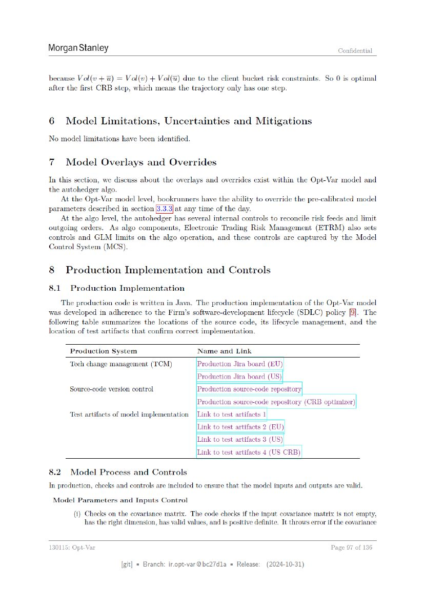
モルガン・スタンレー 機密
クライアントのバケットリスク制約により、Vol(v + 7) = Vol(v) + Vol(z) となるため、最初のCRBステップ後、0は最適となります。これにより、軌跡は1つのステップのみになります。
6 モデル 制約・不確実性と緩和策
モデルの制約や不確実性が特定されていません。
7 モデル オーバーレイと上書き
このセクションでは、Opt-VarモデルおよびAutohedgerアルゴリズム内に存在するオーバーレイと上書きについて議論します。
Opt-Varモデルレベルで、ブックランナは任意の時間帯でセクション [3.3.3] で説明した事前調整されたモデルパラメータを上書きすることができます。
アルゴリズムレベルでは、Autohedgerにはリスクフィードと出力注文を整合させる内部制御が複数存在し、電子取引リスク管理（ETRM）もアルゴの操作にGLM限界を設定しており、これらの制御はモデルコントロールシステム（MCS）でキャプチャされています。
8 本番実装と統制
8.1. 本番実装
本番コードはJavaで書かれています。Opt-Varモデルの本番実装は、会社のソフトウェア開発ライフサイクル（SDLC）ポリシー [J]に従って開発されました。以下の表はソースコードの場所、ライフサイクル管理、およびモデル実装のテストアーティファクトを要約しています。
本番システム 名称 および リンク
ソフトウェア変更管理（TCM） 本番Jiraボード（BU）
本番Jiraボード（US）
ソースコードバージョン管理 本番ソースコードリポジトリ|
本番ソースコードリポジトリ（CRB最適化器）
モデル実装のテストアーティファクト テストアーティファクトリンク1
テストアーティファクトリンク2 (BU)
テストアーティファクトリンク3 (US)
テストアーティファクトリンク4 (US CRB)
8.2 モデルプロセスと統制
本番環境では、モデル入力と出力を有効であることを確認するチェックと統制が含まれています。
モデルパラメータと入力の統制
(i) 共分散行列のチェック。コードは入力共分散行列が空でないか、適切な次元を持っているか、有効な値を持つか、正定値であるかを確認します。共分散行列が不適切な場合にエラーを投げます。
130115: Opt-Var 97ページ目/136ページ
[git] 「ブランチ:iropt-var@be27d1a = リリース:(2024年10月31日)
全文日本語訳

morgan stanley 機密
共分散行列がチェックを通過しない場合。
http://stashblue.ms.com:11990/atlassian-stash/projects/FIDALGO_MMJ/repos/mmj/browse/fidalgo.
mmj/src/main/java/mfire/utils/MathUtils.java#82)
(i) Opt-Varモデルの入力ネットポートフォリオリスク（PVO1）とパラメータヘッジ可能リスク制限がチェックを通過しない場合、これらの値がnull、NaN、無限大であるか、またはヘッジ可能リスク制限が負の場合は、警告が記録され、ヘッジ取引は返されず実行されません。
(http://stashblue.ms.com:11990/atlassian-stash/projects/FIDALGO_MMJ/repos/mmj/browse/fidalgo.
mmj/src/main/java/erates/hedging/OptimalHedgeVarCostCalculator.java#1004, 1206,
下記の入力とパラメータに対するチェックと制御。これらの状況が発生し、値が有効でない場合、警告が記録され、デフォルト値が使用されます。
+ アルファ：指定されていない、null、負の場合、デフォルト値0を使用します。
+ コスト：実行コストの線形部分が指定されていない、null、NaN、無限大の場合、デフォルト値0.05を使用します。
+ 二次コスト：実行コストの二次部分が指定されていない、null、NaN、負の場合、デフォルト値0を使用します。
+ バケットリスク制限：null、NaN、無限大、負の場合、デフォルト値0を使用します。
+ 取引サイズ制限：null、NaN、負の場合、デフォルト値0を使用します。
+ 位置増加を許可するか：nullまたは負の場合、デフォルト値falseを使用します。
+ リスク回避因子：null、NaN、無限大、負の場合、デフォルト値4e-6を使用します。
(http://stashblue.ms.com:11990/atlassian-stash/projects/FIDALGO_MMJ/repos/mmj/browse/fidalgo.
mmj/src/main/java/erates/hedging/HedgeCalculatorAssistant.java)
(iv) ヘッジ可能リスク制限と取引サイズ制限の制約が矛盾しないことを確認します。それ以外の場合、Opt-Var最適化オプティマイザを呼び出さず、ヘッジ決定は第 节で説明されたルールに基づいて行われます。この場合、メールアラートも警告として送信されます。
{http://stashblue.ms.com:11990/atlassian-stash/projects/FIDALGO_MMJ/repos/mmj/browse/fidalgo.
mmj/src/main/java/erates/hedging/OptimalHedgeVarCostCalculator.java#396|
(v) アルファのチェック。コードはアラファの値を関連する商品のコストの90%に制限します。つまり、製品é € [d]の場合、@はmax(—0.9 x C,, min(a,,0.9 x C,))で置き換えられます。
(http://stashblue.ms.com:11990/atlassian-stash/projects/FIDALGO_MMJ/repos/mmj/browse/fidalgo.
mmj/src/main/java/erates/hedging/HedgeCalculatorAssistant.java)
(vi) CRB最適化入力のチェックを以前に行います。つまり、共分散行列、ポートフォリオリスク、ヘッジ可能リスク制限、バケットリスク制限、コスト、アルファとリスク回避因子。
http://stashblue.ms.com:11990/atlassian-stash/projects/FIDALGO_MMJ/repos/mmj/browse/fidalgo.
mmj/src/main/java/erates/corvo/OptimizerInputService.java|
モデル出力制御
(i) Opt-Varモデルの出力に対するチェック。コードはOpt-Varモデルの出力が指定された限界内であることを確認します。これらのチェックが通過しない場合、AutohedgerはOpt-Var提案取引を取引しません。
+ 提案取引がNaNまたは無限大でない。
+ オプティマイゼーション後のネットポートフォリオリスクはヘッジ可能リスク制限内にあります。
+ オプティマイゼーション後の各バケットのリスクはバケットリスク制限内です。
+ 位置増加が許可されていない場合、オプティマイゼーション後どのバケットでも位置が増加しない。
+ 解決Opt-Var最適化に使用された補助変数は取引変数の絶対値と等しいべきです。
http://stashblue.ms.com:11990/atlassian-stash/projects/FIDALGO_MMJ/repos/mmj/browse/fidalgo.
mmj/src/main/java/erates/hedging/OptimalHedgeVarCostCalculator.java#619)
2024年10月31日：Opt-Var 第98ページ目／136ページ
[git] * 分岐: r.opt-var@bc27d1a = 発行: (2024-10-31)
全文日本語訳

モルガン・スタンレー 機密
(ii) CRB最適化出力が制約を満たしていることを確認することも行います。もし制約に違反している場合、取引は行われません。
http://stashblue.ms.com:11990/atlassian-stash/projects/FIDALGO_MMJ/repos/mmj/browse/fidalgo.inmj/src/main/java/erates/hedging/CrbOptimalMatcher.java#535|
http://stashblue.ms.com:11990/atlassian-stash/projects/FIDALGO_MMJ/repos/mmj/browse/fidalgo.mmj/src/main/java/erates/corvo/CorvoOrderExecutor.java#209|
(iii) CRBスイングエンジンの制御は、セクション「リスク変更制御」で説明されています。
http://stashblue.ms.com:11990/atlassian-stash/projects/FIDALGO_MMJ/repos/mmj/browse/fidalgo.mnj/src/main/java/erates/corvo/CorvoOrderExecutor.java#243 およびそのテスト http://stashblue.ms.com:11990/atlassian-stash/projects/FIDALGO_MMJ/repos/mmj/browse/fidalgo.mmj/src/test/java/erates/corvo/CorvoOrderExecutorTest.java#
「ヘッジしない」の意図 http://stashblue.ms.com:11990/atlassian-stash/projects/FIDALGO_MMJ/repos/mmj/browse/fidalgo.mmj/src/main/java/erates/corvo/CorvoOrderExecutor.java#246 およびそのテスト http://stashblue.ms.com:11990/atlassian-stash/projects/FIDALGO_MMJ/repos/mmj/browse/fidalgo.mmj/src/test/java/erates/corvo/CorvoOrderExecutorTest.java#717
8.3 モデルコード変更管理とバージョン管理
モデル研究およびテストコードはPythonで書かれています。Opt-Varモデルを実装するソフトウェアは、Firmのソフトウェア開発ライフサイクル（SDLC）ポリシーに従って開発されました [J]。以下の表はソースコードの場所とライフサイクル管理を要約しています。
モデル開発システム名およびリンク
Tech管理制御 モデル開発 Jiraボード（EU）
モデル開発 Jiraボード（US）
コードバージョン制御 モデルテストソースコードリポジトリ
8.4 ソフトウェア開発ライフサイクル（SDLC）
EUとUSでは同じ構造でソフトウェア開発ライフサイクルが進行しており、本節でその内容を説明します。
1. GRN: Opt-Varモデルはモルガン・スタンレーの電子取引ビジネスにおけるAutohedgerアルゴリズムによって国債のために使用されます。AutohedgerのGRNは/ms/fid/bondtrading/fidalgoです。また、CRBスイングエンジンによりCRB最適化にも使用されています。
2. 高レベルアプリケーションアーキテクチャ。図[77]はEU Autohedgerの高レベルアーキテクチャを示し、図[78]はUS AIMの高レベルアーキテクチャを示します。図に示すように、両地域においてOpt-VarモデルはAutohedgerアルゴリズム内のヘッジ計算機コンポーネント内に埋め込まれています。高レベルで見ると、Autohedgerアルゴリズムは取引書のポジションを監視し、リスク管理のためにヘッジ注文を出力します。USではOptVarモデルもCRB最適化 (stashblue.ms.com) に使用されています。
130115: Opt-Var 第99ページ目/136ページ
全文日本語訳

morgan stanley 機密
自動ヘッジ取引:
Figure 77: Autohedger Diagram (EU)
130115: Opt-Var Page 100 of 136
[git] 「分岐: iropt-var@be27d1a = 発行: (2024年10月31日)
全文日本語訳

morgan stanley 機密
mn ee vy
i
one
ロトns]
カ
ラス
| ヴィー |
|---|
コムパレート | | オペランドメ
\
\
\
130115: Opt-Var ページ 101 of 136
全文日本語訳
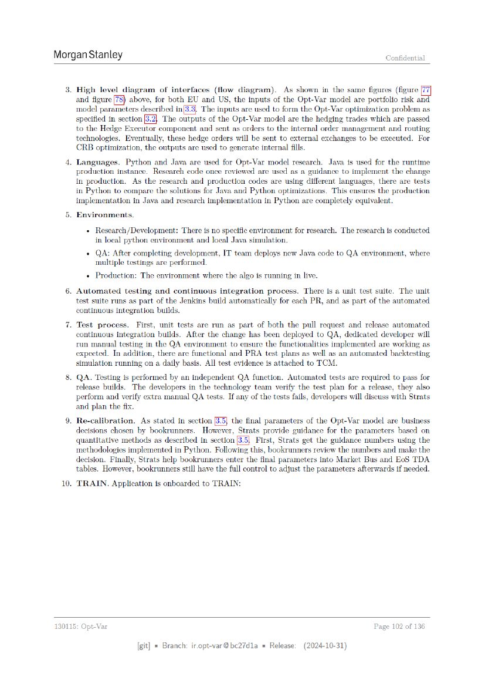
モルガン・スタンレー 機密
3. 関連インターフェースの高レベル図（ボウ図）。同じ図（figur）に示されている通り、セクション{3.3}で指定されたOpt-Varモデルの出力はヘッジ取引であり、これらの取引はHedge Executorコンポーネントへ渡され、内部注文管理およびルーティング技術としてオーダーとして送信されます。最終的には、これらのヘッジオーダーは外部取引所に送られ実行されます。CRB最適化の場合、出力は内部フィルを生成するために使用されます。
4. 言語。Opt-Varモデルの研究にはPythonとJavaが使用されています。Javaは実行時プロダクションインスタンスで使用されます。レビュー済みの研究コードはプロダクションでの変更実装のガイドラインとして使用されます。研究コードとプロダクションコードが異なる言語を使用しているため、Pythonで実施されるJavaとPythonの最適化解を比較するテストがあります。これにより、Javaでのプロダクション実装とPythonでの研究実装が完全に等しいことを確認します。
5. 環境。
+ 研究/開発：特定の研究環境は存在しません。研究はローカルのPython環境およびローカルのJavaシミュレーションで行われます。
+ QA：開発が完了すると、ITチームは新しいJavaコードをQA環境に展開し、複数のテストが実行されます。
+ プロダクション：アルゴリズムがライブで実行される環境です。
6. 自動化されたテストと連続インテグレーションプロセス。単体テストスイートがあります。この単体テストスイートはJenkinsビルドの一部として各PRごとに自動的に実行され、連続インテグレーションビルトも同様に実行されます。
7. テストプロセス。まず、プルリクエストとリリースの連続インテグレーションビルトの両方で単体テストが実行されます。変更がQA環境に展開された後、専門的な開発者はQA環境で手動テストを実施し、実装された機能が想定通りに動作していることを確認します。さらに、機能とPRAテスト計画があり、毎日自動バックテストシミュレーションも実行されます。すべてのテスト証拠はTCMに添付されています。
8. QA。独立したQA機能によってテストが行われます。リリースビルドでは自動化されたテストが必要です。技術チームの開発者はリリースのテスト計画を確認し、追加の手動QAテストも実施および検証します。どのテストでも失敗すると、開発者はストラテジストと協議し、修正計画を作成します。
9. 再校正。セクション[3.5]で述べた通り、Opt-Varモデルの最終的なパラメータはブックランナーズによって業務上の決定で選択されます。ただし、ストラテジストはセクションで説明した定量的手法に基づいてパラメータのガイダンスを提供します。まず、ストラテジストはPythonで実装された手法を使用してガイダンス数字を得ます。その後、ブックランナーズがこれらの数字を確認し、決定を行います。最後に、ストラテジストはブックランナーズがMarket BusとEoS TDAテーブルに入力する最終的なパラメータの助けを提供します。ただし、ブックランナーズは必要に応じてパラメータを調整できる完全なコントロールを持ちます。
10. TRAIN。アプリケーションはTRAINにオンボードされています：
2024年10月31日: iropt-var@be27d1a = リリース: [git] « 分岐:iropt-var@be27d1a 释放版本: (2024-10-31)
全文日本語訳

morgan stanley 機密
TRAIN コンポーネント リンク
TCM |http ://changereview.webfarm.ms .com/app/#/tcm/ ]
602929932
Jira, http: //jira3.ms. com/jira/browse/EURAH-2116
(EU)
|nttp://jira3.ms.com/jira/secure/RapidBoard.
jspa?rapidView=48196view=planningSissueLimit= |
100 (US)
Test http: //changereview.webfarm.ms .com/app/#/tcm/
602929932| (テストタブ)
Bitbucket PR. http: //stashblue.ms.com/atlassian-stash/ ]
[proj ects/FIDALGO_MMJ/repos/mmj/pull- ]
requests/3863/overview
Train release build https://train-portalui-prod.ms.com/#/view/ ]
{name space/VMS/meta/fidalgo/project/mmj/ ]
release/2023. 10. 10-p425-master|
11. 生産環境。モデル開発と生産展開の役割分離はTAMによって確保されます。VMSコマンドが新しいバージョンを展開する際に、実行している人物が有効なTAMロールを持っているかどうかを確認します。指定されたGRNに対してTCMまたはTAPが承認されている場合、展開コマンドが進行します。生産実行環境はIR-PMによって管理されます。
12. 生産展開。変更はまずQAバージョンにデプロイされ、テストが行われます。QAでのテストがパスし、署名されたら、その変更を含むQAバージョンはTCMを通じて生産環境にリリースされます。新しいコードのロールバックが必要な場合は、標準的なTCMロールバックを使用して以前の動作バージョンに戻します。
9 モデル 継続的な性能モニタリング
9.1 指標と閾値
モデルの継続的な性能モニタリングの一環として、以下の指標が監視されます：
1. 不成功な最適化回数：Opt-Varモデルが最適解を見つけることができなかった回数をカウントします。最適化が不成功だった場合、NAGアルゴリズムは失敗とマークし、それ以外は成功とします。ここでは、成功とは最大イテレーション数を超えないでNAGアルゴリズムが最適解を見つけることを意味します。この特定のモニタリングでは、毎日不成功な最適化回数を追跡し、閾値0を超えた場合に警告します。
2. 不可能ポートフォリオの数：Autohedger内で実行されるOpt-Var提案されたヘッジ後のポートフォリオが特定の基準を満たすかどうかを確認するポートフォリオの可能性性チェックがあります。どの基準も失敗した場合、Autohedgerは「最適化者が無効な結果を生成しました」という警告メッセージをログに記録します。Opt-Varモデルでチェックされる基準は以下の通りです：
+ 最適化後のネットポートフォリオリスクがヘッジ可能なリスク限度内であるべきです。
+ 各バケットでの最適化後のリスクがバケットリスク限度内であるべきです。
+ 位置増加が許可されていない場合、どのバケットでも位置が増加しないこと。
+ Opt-Var最適化を解くために使用される補助変数は取引変数の絶対値に等しいべきです。
130115: Opt-Var ページ 103 of 136
[git] « 分岐：iropt-var@be27d1a = 発行： (2024-10-31)
全文日本語訳

モルガン・スタンレー 機密
監視テストでは、警告メッセージが毎日何回表示されたかを数え、その回数が閾値（0）を超えた場合にアラートします。
3. サイズ制限を超える取引の数：Opt-Varモデルによって提案される取引サイズは指定された取引サイズ制限内であるべきです。監視目的で、Opt-Varによって提案された取引が制限を越えた回数を毎日チェックします。その回数が閾値（0）を超えた場合にアラートされます。
以下は、これらの指標の違反基準です：
+ 不成功な最適化の数：連続3営業日にその数が閾値を超える場合。
+ 無効なポートフォリオの数：連続3営業日にその数が閾値を超える場合。
+ サイズ制限を超える取引の数：連続3営業日にその数が閾値を超える場合。
CRB最適化では、不成功な最適化の数と無効なポートフォリオの数の指標を報告します。取引サイズ制約はCRBに使用されないため、監視には含まれていません。違反基準はCRBと共通です。これはUS_CRBセグメントに対応しています。
以下は継続的なモニタリングメタデータの概要です。
9.2 エスカレーション
任意の3つの指標のいずれかが違反した場合、モデル開発者は可能な限り1週間以内にMRMに対して通知します。通知にはトリガー情報とトリガー理由の説明が含まれます。必要であれば修正またはアクションが必要な場合は、モデル開発者はMRMに対して関連する修正アクションを通知します。トリガーのレビューおよび結論は6週間以内にMRMに報告されます。通知期限内に閾値違反通知や結論が送信できない理由がある場合、期限前にMRMに通知し、Stratsは完了までの新しい予想期限を提供します。
9.3 MRMと共有されるデータ
戦略的には、Invigilatorを通じてデータをMRMに提供する計画があります。実現可能性と詳細は決定中です。以下に詳細な計画を示します：
自動化、違反エスカレーションおよびデータの利用フェーズ計画：
+ 第1フェーズ：
— 毎日パフォーマンス監視レポートが自動生成され、Stratsに送信されます。
~ CSVファイルが毎日生成され、Invigilatorを読み込むために使用されます。
~ 日間パフォーマンス報告書の違反に基づいてStratsはMRMへエスカレーションします。
— Stratsは Quarterly（EU例参照：図[S0]）でPDFレポートを作成し、MRMに送信します。
— Stratsはデータと共にQuarterlyレポートとともにCSVファイルをMRMに提供します。
+ 第2フェーズ：
~ InvigilatorがGUIでモデルを読み込み表示します。
~ Invigilatorがデータ指標を読み込み、GUIでデータ違反を表示します。
~ Invigilatorは専用のMRMロールレベルアクセス/ビュー権限を持ちます。
130115: Opt-Var ページ 104 of 136
[git] « 分岐：iropt-var@be27d1a = 発行： (2024-10-31)
全文日本語訳
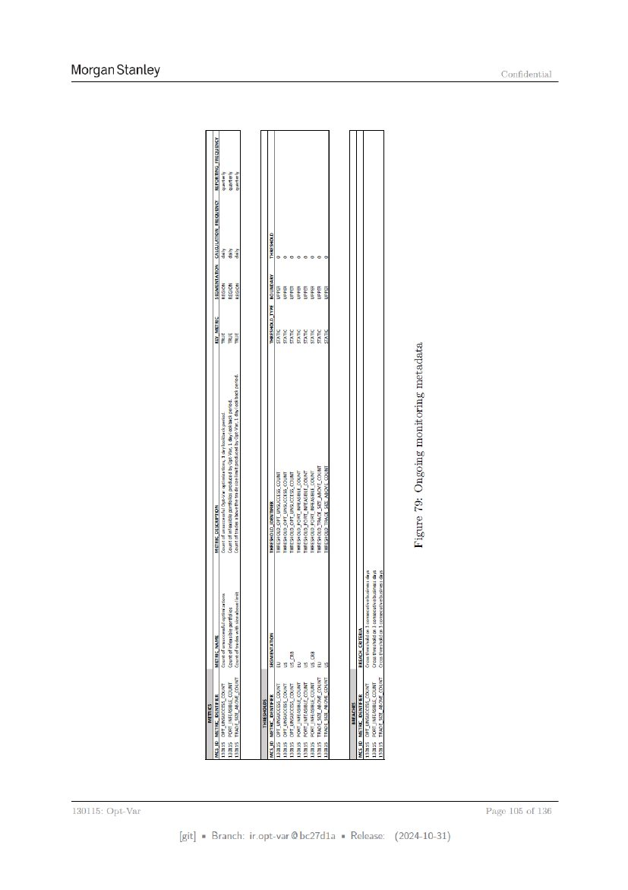
モルガン・スタンレー
EEEEEEES &
ag °
[git] » 分岐: ir.opt-var @be27d1a » 発行: (2024年10月31日)
全文日本語訳

morgan stanley 機密
— MRMはInvigilatorを通じてメトリクスデータにアクセスできます。
共通のデータ共有手順が確立されたら、この共通手順に基づいて文書が更新されます。
Opt-Varパフォーマンス四半期報告書（EU） - 2023.10.01-2023.12.31
メトリクス 報告件数
不成功な最適化の回数 0
非実現的なポートフォリオの回数 0
サイズ制限を超える取引の回数 0
図80: 样本四半期継続報告書（EU）
9.4 日中モニタリングツール
日常レポートをStratsに送付し、MRMと共有される四半期監視レポート以外にも、EoSにはブックランナーやStratsが日中にモデルパフォーマンスを監視できるツールがあります。図[ST]および以下はEUとUSのそれぞれのモニタリングGUIを示しています。
eoDssans | E00 Swing | Suna ea ハウトレーダー
取引タイプ
図81: EOS GUI（EU）
130115: Opt-Var p. 106
of 136
[git] » 分岐: ir.opt-var @be27d1a » 発行: (2024-10-31)
全文日本語訳

モルガン・スタンレー 機密
図82: EOS GUI（US）
10 モデル 変更 ログ
変更の理屈と解説
1 2023-12-06 最初の提出。
2 2024-02-06 | SDLCおよび継続的なモニタリングに関する主題的制約が解決されました。
3 2024-03-12 MRM コメント 初期認証に対する対応が追加されました。
4 2024-04-11 | UK gilt未来内容がEUの関連セクションに追加されました。
5 2024-07-25 | CRB拡張がUS +非対称ヘッジ可能なリスク制限のために追加されました。
6 2024-08-30 | 动态Lambda内容が関連セクションに追加されました。
7 2024-10-31 | 非対称ヘッジ可能なリスク制限に関するコメントと追加のCRB制御およびアーキテクチャ詳細が追加されました。
8 2024-12-10 US共分散行列の外れ値上限が追加されました。
11 参考文献
[1] “アルゴリズム取引モデルのモルガン・スタンレーの制御手順,” 2023.
[2] 欧洲委員会, “MiFID II規制技術基準6,” European Commission, Tech. Rep., Mar. 2017. [オンライン]. 可用: {https://eur-lex.europa.eu/legal-content/EN/TXT/?uri=uriserv:OJ.L_.2017.087.01.0417.01-ENG}
[3] 联邦準備委员会, “モデルリスク管理の監督ガイドライン,” Board of Governors of the Federal Reserve System, Tech. Rep. SR Letter 11-7, 2011. [オンライン]. 可用: (https://www.federalreserve.gov/supervisionreg/srletters/sr1107a1.pdf)
130115: Opt-Var 第107页共136页
[git] » 分支: ir.opt-var @be27d1a » 释放: (2024-10-31)
全文日本語訳

モルガン・スタンレー 機密
[4] B. Kouvaritakis および M. Cannon, Model Predictive Control. Springer Cham, 2015.
[5] O. Ledoit と M. Wolf, “A well-conditioned estimator for large-dimensional covariance matrices,”
Journal of Multivariate Analysis, vol. 88, no. 2, pp. 365-411, 2004. [オンライン]. 可用:
[https://perso.ens-lyon.fr/patrick flandrin /Ledoit Wolf _JMA2004.pdf]23|
[6] モルガン・スタンレー, “Model 129528: Passive Aggressive Signal Model,” Model Control System, Tech. Rep.
[オンライン]. 可用: http://vmmesprod .ms.com:7030/workflow /mes2-ui/# layouts /document /266637|
B2]
[7] —, “Electronic trading algorithm models: supplement to the global model risk management policy,”
モルガン・スタンレー, Tech. Rep., 2021年6月. [オンライン]. 可用:
| https://policy.webfarm.ms.com/policies/ |
|---|
{portal /#/document-preview /194895.
[8] ——, “Global model risk management policy,” モルガン・スタンレー, Tech. Rep., 2022年1月. [オンライン].
可用: [https://policy.webfarm.ms.com
/policies /portal/#/document-preview /1840204[17|
[9] ——, “Global technology software development lifecycle (SDLC) procedure,” モルガン・スタンレー, Tech.
Rep., 2022年4月. [オンライン]. 可用: https://policy.webfarm.ms.com /policies/portal/#/document-]
preview /1601850
[10] G. Still, “Lectures on parametric optimization: An introduction,” 2018. [オンライン]. 可用:
(https://optimization-online.org/wp-content/uploads/2018/04/6587.pdf|
12 用語定義
自動在庫管理者
Bloomberg
ドイツの先物
イタリアの先物
イタリアの先物
ドイツの先物
ドイツの先物
中央リスク帳簿
金融商品の一意な識別子
欧州政府債券
MS取引書のポジションキーパー
MSの電子取引リスク管理
5年期T-ノート先物
MSの固定収入部門
イギリスのGilt先物
机构証券グループ
MSの内部プライシングエンジン
モルガン・スタンレーのモデル制御システム
MSの市場データサービス
モルガン・スタンレー
OAT フランスの先物
次ページに続く
130115: Opt-Var 108ページ目/136ページ
全文日本語訳
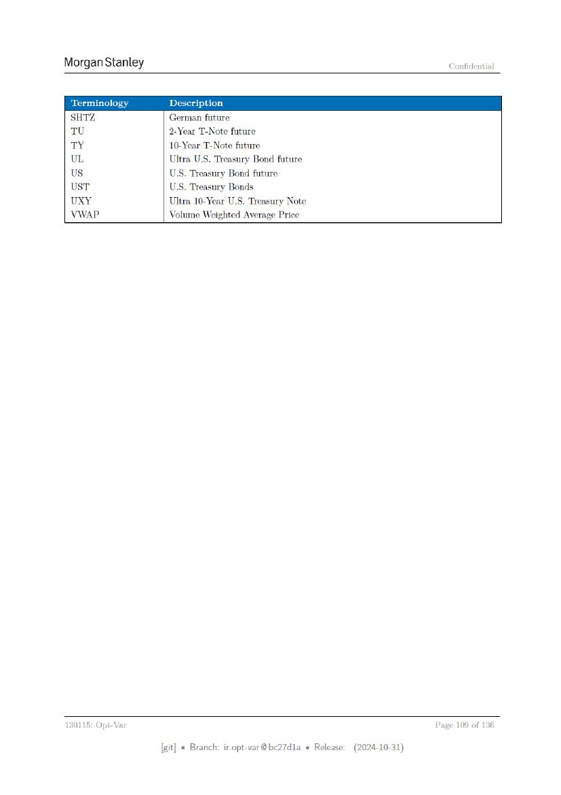
morgan stanley 機密
用語 説明
SHTZ ドイツの将来権限
TU 2年物T-ノート将来権限
TY 10年物T-ノート将来権限
UL ウルトラUS. 国債将来権限
us 米国国債将来権限
UST 米国国債
UXY ウルトラ10年物米国10年物国債
VWAP 体積加重平均価格
130115: Opt-Var ページ 109 of 136
[git] = 分岐: ir.opt-var@bc27d1a = 発行版: (2024年10月31日)
全文日本語訳

morgan stanley 機密
13. 付録
13.1. 收束テスト図
ae
=)
図83: JavaとPythonの収束比較. 例1-50。
130115: Opt-Var ページ110 of 136
[git] = 分岐: ir.opt-var@bc27d1a = 発行: (2024年10月31日)
全文日本語訳

morgan stanley 機密
図84: JavaとPythonの収束比較。例50-100。
130115: Opt-Var 136ページ中的第111页
[git] = 分岐: ir.opt-var@bc27d1a = 発行: (2024年10月31日)
全文日本語訳

モルガン・スタンレー 機密
図85: JavaとPython CRB収束比較。 AIMの制約セットA例1-50
130115: Opt-Var ページ 112 of 136
[git] 「分岐:iropt-var@be27d1a = 発行:(2024-10-31)
全文日本語訳

morgan stanley 機密
図86: JavaとPython CRB収束比較。例50-100。AIMのセットAの制約
130115: Opt-Var ページ 113 of 136
[git] 「分岐:iropt-var@be27d1a = 発行:(2024-10-31)
全文日本語訳

モルガン・スタンレー 機密
図87: JavaとPython CRB収束比較。 AIMの制約セットB サンプル1-50
130115: Opt-Var ページ 114 of 136
[git] 「分岐:iropt-var@be27d1a = 発行:(2024-10-31)
全文日本語訳

モルガン・スタンレー 機密
図88: JavaとPython CRB収束比較。例50-100。AIM制約セットB
130115: Opt-Var 第115ページ目／136ページ目
[git] 「分岐:iropt-var@be27d1a = 発行:(2024-10-31)
全文日本語訳

モルガン・スタンレー 機密
13.2 ベンチマークテスト図
図89: Opt-Varと単純ヘッジ戦略を使用してヘッジ後のリスク回避パラメータ \ の異なる値に対する目的関数値 Fy の比較。例1-20。
130115: Opt-Var ページ 116 から 136 まで
[git] 「ブランチ: iropt-var@be27d1a = リリース: (2024年10月31日)
全文日本語訳

モルガン・スタンレー 機密
図90: 不動産の目標関数値F、Opt-Varを使用したヘッジと単純なヘッジ戦略を比較した結果。異なるリスク回避パラメータ \ の値に対する例21-40。
130115: Opt-Var ページ 117 of 136
[git] 「ブランチ: iropt-var@be27d1a = リリース: (2024年10月31日)
全文日本語訳

モルガン・スタンレー 機密
図91: 不動産の目標関数値F、Opt-Varを使用したヘッジと単純なヘッジ戦略を比較した結果。異なるリスク回避パラメータ \ の値に対する例41-60。
130115: Opt-Var ページ 118 of 136
[git] 「ブランチ: iropt-var@be27d1a = リリース: (2024年10月31日)
全文日本語訳

モルガン・スタンレー 機密
図92: 不動産の価値FをOpt-Varと単純なヘッジ戦略を使用してヘッジした後の比較。リスク回避パラメータ \ の異なる値での例61-80。
130115: Opt-Var ページ 119 of 136
[git] 「ブランチ: iropt-var@be27d1a = リリース: (2024年10月31日)
全文日本語訳

モルガン・スタンレー 機密
図93：異なるリスク回避パラメータ値 \ でのOpt-Varを使用したヘッジと単純なヘッジ戦略を用いた目的関数値 F の比較。例81-100。
130115: Opt-Var ページ 120 of 136
[git] 「分岐：iropt-var@be27d1a = 発行版： (2024年10月31日)
全文日本語訳

モルガン・スタンレー 機密
13.3. 結果分析とバックテスト図
13.3.1 ポートフォリオ分散
図94: Opt-Varを使用したヘッジと無ヘッジによる異なるリスク回避パラメータ値でのポートフォリオ分散の比較。例1-20。
130115: Opt-Var Pag 121 of 136
[git] 「ブランチ:iropt-var@be27d1a = リリース:(2024-10-31)
全文日本語訳

モルガン・スタンレー 機密
図95：異なるリスク回避パラメータ値を使用したOpt-Varによるヘッジと無ヘッジ後のポートフォリオ分散の比較。例21-40。
130115: Opt-Var ページ 122 of 136
[git] 「ブランチ：iropt-var@be27d1a = リリース： (2024年10月31日)
全文日本語訳

モルガン・スタンレー 機密
図96：異なるリスク回避パラメータ値を使用したOpt-Varによるヘッジと無ヘッジ後のポートフォリオ分散の比較。例41-60。
130115: Opt-Var ページ 123 of 136
[git] 「ブランチ： iropt-var@be27d1a = リリース： (2024-10-31)
全文日本語訳

モルガン・スタンレー 機密
図97：異なるリスク回避パラメータ値を使用したヘッジ後のポートフォリオ分散の比較。例61-80。
130115: Opt-Var ページ 124 of 136
[git] 「ブランチ：iropt-var@be27d1a = リリース：(2024-10-31)
全文日本語訳

モルガン・スタンレー 機密
図98：異なるリスク回避パラメータ値を使用したヘッジ後のポートフォリオ分散の比較。例81-100。
13.3.2 取引コスト
基準1
130115: Opt-Var 125 of 136
[git] 「ブランチ：iropt-var@be27d1a = リリース： (2024年10月31日)
全文日本語訳

モルガン・スタンレー 機密
a
図99: Opt-Varと単純ヘッジ戦略を使用した異なるリスク回避パラメータA値に対する取引コストの比較。取引コストはセクション1-20で説明されているCostgによって与えられる。
130115: Opt-Var ページ 126 of 136
[git] 「ブランチ:iropt-var@be27d1a = リリース:(2024-10-31)
全文日本語訳

モルガン・スタンレー 機密
図100：異なるリスク回避パラメータ値を使用したOpt-Varと単純なヘッジ戦略の取引コスト値の比較。取引コスト値はセクション3でCostgとして説明されています。例21-40。
130115: Opt-Var ページ 127 of 136
[git] 「ブランチ： iropt-var@be27d1a = リリース： (2024-10-31)
全文日本語訳

モルガン・スタンレー 機密
a
図101：異なるリスク回避パラメータA値に対するOpt-Varと単純ヘッジ戦略の取引コスト値の比較。取引コスト値はセクション41-60で説明されているCostgによって与えられる。
130115: Opt-Var ページ128／136
[git] 「ブランチ：iropt-var@be27d1a = リリース： (2024年10月31日)
全文日本語訳

morgan stanley 機密
i:
Ce TFS TS ee Te ae
図102：異なるリスク回避パラメータA値に対するOpt-Varと単純なヘッジ戦略の取引コスト値の比較。取引コスト値はセクション3.2.2で説明されているCostで与えられる。
2024年10月31日リリース: iropt-var@be27d1a = [git] « 分岐: (2024-10-31)
130115: Opt-Var 129ページ目/136ページ
全文日本語訳

モルガン・スタンレー 機密
図103：異なるリスク回避パラメータA値に対するOpt-Varと単純ヘッジ戦略の取引コスト値の比較。取引コスト値はセクション81-100で説明されているCostgによって与えられる。
基準2
反応：25,000 PVO1 SHTZフローに対する
5000
210000
E asco
2000
r) 3 % 7 Fr} us 70 Ts 260
iN x10
図104：異なる値に対する初期ポジションが25,000 PVO1のSHTZバケットに対するOpt-Var提案取引。
130115: Opt-Var 130ページ目／136ページ目
[git] 「分岐：iropt-var@be27d1a = 発行版： (2024年10月31日)
全文日本語訳

モルガン・スタンレー 機密
25,000 PV01 SHTZのフローに対するOptvarヘッジ反応
= Optvarヘッジ
14,000 = 単一商品取引
32,000
10,000
3 8,000
6,000
4,000
Q 200 “400 ‘600 ‘200 3,000 1,200 1,400
ポートフォリオ分散（€*） aoe
図105: Opt-Var提案取引の取引コストと単一商品によるヘッジ取引の取引コストとの比較。初期ポジションが25,000 PV01のSHTZバケットに対する反応を示しています。取引コストはセクション[3.2.2]で説明されているCostによって与えられます
25,000 PV01 BOBLのフローに対するOptvarヘッジ反応
5,000
2,000
a Ba Pa % a0 us Fy as 200
» x10
図106: 初期ポジションがBOBLバケットの25,000 PV01に対するOpt-Var提案取引。異なる値に対する反応を示しています。
130115: Optvar 第131ページ目／136ページ
[git] « 分岐: iropt-var@be27d1a = 発行: (2024年10月31日)
全文日本語訳

モルガン・スタンレー 機密
25,000 PVO1 BOBL 流動性の低い商品への反応
<= Opt-Var ヘッジ
7000. = 取引シグナル
単一商品
3000
2000
ry 100 7260 7360 “00 “30 oo
ポートフォリオ分散(@) xaot
図107: Opt-Var 提案取引の取引コストと単一商品を使用して異なるポートフォリオ分散レベルを達成するためのヘッジ取引の取引コストとの比較。初期ポジションが25,000 PVO1 のBOBL バケットに対する反応です。取引コストの値は、セクションで説明されているCostg によって与えられます。
——
25,000 PVO1 BUND 流動性の低い商品への反応
5000
5 サイズ
Fy ポートフォリオ分散
& -10000 + BUND
1 要素
H 機構
48 -15000 参与者
—78
2000
r) 3 % 7 300 us 70 Ts 260
iN x10
図108: 初期ポジションが25,000 PVO1 のBUND バケットに対する異なる値に対するOpt-Var 提案取引。
2024年10月31日時点のリリース: (git) « 分岐:iropt-var@be27d1a = 2024-10-31
130115: Opt-Var 第132ページ目/136ページ
全文日本語訳

モルガン・スタンレー 機密
25,000 PVO1 BUNDのフローに対する反応
<= Opt-Varヘッジャー
4000 = 単一商品によるヘッジ
3500
¥
8
3 3000.
2500
2000
o 35 50 75 100 ws 150 vs
ポートフォリオ分散 (€*) wage
図109: Opt-Var提案の取引コストと単一商品によるヘッジのための異なるポートフォリオ分散レベルに対する取引コストとの比較。初期ポジションが25,000 PVO1 BUNDバケットである場合、取引コストの値はセクションB23で説明されているCostgによって与えられます。
25,000 PVO1 OATのフローに対する反応
2500
5000
g
= ~7500
geo
12500 4 soet
15000
1750} — erp
r) 3 % 7 Fr} us 70 Ts 260
a x10
図110: 初期ポジションがOATバケットの25,000 PVO1に対するOpt-Var提案の取引、異なる値に対して。
130115: Opt-Var 133ページ目／136ページ
[git] « 分岐: iropt-var@be27d1a = 発行: (2024年10月31日)
全文日本語訳

モルガン・スタンレー 機密
25,000 PVO1 OAT バケットへの反応による Opt-Var の提案された取引の取引費
‘8,000 <= opt¥var Hedger
= 単一商品でのヘッジ
2,000
ry 100 260 7360 “60 ‘500
ポートフォリオ分散(@) xaot
図111: 各種ポートフォリオ分散レベルを達成するために Opt-Var 提案された取引と単一商品でのヘッジによる取引費の比較。25,000 PVO1 OAT バケットへの初期ポジションに対する反応です。取引費の値はセクション!で説明されている Costy によって与えられます。
25,000 PVO1 BTS バケットへの反応による Opt-Var の提案された取引
5,000
5 swe
Fy poet
& -10,000 + BUND
1 = eux
H = ont
4B -15,000 ers
—78
2,000
r) 3 % 7 300 us 70 Ts 260
iN x10
図112: A 値が異なる場合、BTS バケットへの初期ポジションとしての 25,000 PVO1 に対する Opt-Var 提案された取引。
130115: Opt-Var 第134ページ/136ページ
[git] « 分岐: iropt-var@be27d1a = 発行: (2024年10月31日)
全文日本語訳

モルガン・スタンレー 機密
25,000 PVO1 BTS流動性に対する反応
35,000 = Optvarヘッジャー
<= 単一商品によるヘッジ
¥
3 20,000
E 15,000
0,000
8,000
Q ‘500 3,000 1,500 2,000 2,500 "3,000
ポートフォリオ分散 (€*) x08
図113: Opt-Var提案の取引コストと単一商品によるヘッジ取引コストとの比較。異なるポートフォリオ分散レベルを達成するために反応した取引。初期ポジションはBTSバケット内の25,000 PVO1です。取引コスト値はセクション[3.2.2]で説明されているCostによって与えられます。
25,000 PVO1 BTP流動性に対する反応
o
5,000
g
2 \
~30,000
i se sHTz
~80,000 | —— 808
+ BUND
Bux
— oar
20,000 | = 8r5
= erp
a Ba Pa % a0 us Fy as 20
» x10
図114: BTPバケット内の初期ポジションが25,000 PVO1の異なる値に対するOpt-Var提案の取引。
130115: Opt-Var 第135頁／136頁
[git] 「分岐:iropt-var@be27d1a = 発行:(2024年10月31日)
全文日本語訳

morgan stanley 機密
25,000 PVO1 BTP流動性のある商品への反応
= Optvarヘッジャー
32,000 <= 単一商品での取引
0000
$ e000
© ooo
4,000
2,000
° 260 “400 ‘600 ‘200
ポートフォリオ分散 (€*) aoe
図115: 目標ヘッジャーが提案した取引の取引コストと、異なるポートフォリオ分散レベルを達成するために単一商品でのヘッジによる取引コストとの比較。初期ポジションが25,000 PVO1 BTPバケットの場合の反応です。取引コストの値はセクション[3.2.2]で説明されているCostによって与えられます。
130115: 目標ヘッジャー 136ページ目／136ページ
[git] « 分岐: iropt-var@be27d1a = 発行: (2024年10月31日)